GUÍA DE USO
26.11
Estás a ler a versión en galego da Guía de uso de KOReader. Tamén temos outras linguas, traducidas por persoas voluntarias:
- Català (catalán)
- Čeština (checo)
- Español (castelán)
- Français (francés)
- Gaeilge (irlandés)
- Italiano (italiano)
- Lietuvių (lituano)
- Nederlands (neerlandés)
- Português Brasil (portugués do Brasil)
- Português Portugal (portugués de Portugal)
- Slovenčina (eslovaco)
- Slovenščina (esloveno)
- Tiếng Việt (vietnamita)
- Български (búlgaro)
- Српски (serbio)
- Українська (ucraíno)
- العربية (árabe)
- தமிழ் (támil)
- 简体中文 (chinés simplificado)
- 繁體中文 (chinés tradicional)
Para ver o progreso da tradución e/ou colaborar na tradución da guía de uso, visita a páxina de tradución de Weblate do noso proxecto.

Esta guía está deseñada principalmente para pantallas en cor. Sobre todo se a usas por primeira vez, recomendámosche encarecidamente lela nun ordenador, tableta ou teléfono móbil en vez de nunha pantalla de tinta electrónica en branco e negro. Ver correctamente as distintas categorías de texto facilitarache moito aprender a usar KOReader. Por suposto, tamén podes lela no teu dispositivo de tinta electrónica, mais a experiencia non será a mellor.
Podes usar a función de busca do teu navegador para atopar un tema ou palabra clave concretos (normalmente Ctrl + F). Se tes algunha suxestión, corrección ou pregunta sobre esta guía de uso, podes escribir neste fío de debate de GitHub.

Esta guía está escrita e
revisada por persoas
Interface de usuario de KOReader (caixas grises) Estes elementos sempre se refiren a partes de KOReader. Pode ser algo na pantalla que podes pulsar/seleccionar/axustar ou algunha función da aplicación: Barra de estado Peso da fonte |
Rutas de menú (verde) Son as localizacións dos axustes e elementos de menú no sistema de menús de KOReader: MENÚ SUPERIOR /  / Estilo do destacado / Estilo do destacado |
Aplicacións e servizos externos (violeta) Son servizos ou aplicacións que funcionan con KOReader. Márcanse cunha cor diferente porque queremos salientar que non forman parte do proxecto KOReader, polo que non están baixo o noso control: Calibre, Readwise, KoHighlights... |
Ligazóns internas (verde azulado) Estas ligazóns, cunha icona de casa ao final, lévante a outras partes desta guía: Xestos |
Ligazóns externas (azul) Son ligazóns normais que levan fóra da guía: Project Gutenberg |
Na guía tamén temos distintas caixas e etiquetas para informarte ou avisarte:
Son unha etiqueta AVANZADA. Se me ves nun título, significa que precisas certo grao de coñecementos técnicos, como traballar cun sistema de ficheiros, coñecementos de CSS, instalación de ficheiros externos, etc., segundo o procedemento.
Estas estrelas no menú de navegación indican as seccións engadidas dende a última actualización da guía. Ademais, dous botóns na esquina da páxina coas mesmas estrelas permítenche saltar directamente entre as seccións novas. Ten en conta que as estrelas do menú de navegación non abranguen todas as novidades: omítense os títulos máis pequenos para non saturalo. Porén, podes ver todas as novidades cos botóns da esquina.
KOReader desenvólveno e mantéñeno persoas voluntarias de todo o mundo. Ti tamén podes formar parte deste proxecto:
- Arranxando erros e implementando novas funcións
- Traducindo o programa á túa lingua ou mellorando a tradución existente
- Axudando a outras persoas co que sabes nos foros ou nas incidencias e debates de GitHub
Consulta a sección CONTACTO para ver as ligazóns.
- koreader.rocks: o noso dominio oficial, que deberías ver agora mesmo na barra de enderezos. Outros dominios, incluído koreader.com, NON SOMOS NÓS!
- Páxina de KOReader en GitHub: aquí podes descargar as versións oficiais para todos os sistemas operativos e dispositivos.
- Versión de F-Droid: versión de KOReader para Android distribuída por nós. Non hai ningunha versión de KOReader na Play Store!
A pesar do seu aspecto minimalista, KOReader é unha aplicación moi potente e personalizable. Esta sección é como un índice orientado a guías prácticas. Así que, se es unha persoa usuaria nova, este é o mellor lugar para comezar. Aquí podes descubrir o que pode facer KOReader e aprender a facelo seguindo as ligazóns.
- Modo de almacenamento masivo USB nos dispositivos compatibles Transferir libros ao teu lector
- Almacenamento na nube (Dropbox/FTP/WebDAV) coas contas axeitadas Transferir libros ao teu lector
- KOReader pode funcionar como servidor SSH, polo que podes usar unha aplicación SFTP ou o teu xestor de ficheiros para transferir ficheiros directamente Lista de plugins internos
- Co plugin de Calibre podes enviar libros da túa biblioteca de Calibre directamente aos teus dispositivos con KOReader por wifi Transferir libros ao teu lector
- Accede a catálogos OPDS (Open Publication Distribution System) públicos ou usa os teus propios servidores para acceder á túa biblioteca Usar catálogos OPDS
- Co plugin de descarga de novas podes descargar entradas de novas RSS e Atom no teu dispositivo como ficheiros HTML Lista de plugins internos
- Co plugin de Wallabag podes obter artigos da túa conta de Wallabag (un servizo baseado en servidor para ler máis tarde, como Pocket) Transferir libros ao teu lector
- Cambia as fontes (incluídas as túas), o tamaño da fonte, o contraste, o peso, o kerning, o espazado entre palabras, a expansión de palabras, o aliñamento do texto, o interliñado, a disposición en columnas, as marxes... FORMATO DO LIBRO ELECTRÓNICO
- Usa plugins de lectura rápida como Perception Expander e FastReader (RSVP) para ler máis rápido MELLORAS NA LECTURA
- Usa os potentes axustes de estilo incluídos ou escribe os teus propios para cambiar con precisión como se amosan os teus libros Axustes de estilo
- Inverte as cores da pantalla para o modo nocturno de forma manual ou automática Calidez automática e modo nocturno
- Axusta automaticamente a calidez da cor da luz frontal Calidez automática e modo nocturno
- Destaca texto con distintos estilos e cores, e engade marcadores MARCADORES, TEXTOS DESTACADOS E NOTAS
- Modo de dúas pulsacións para textos destacados académicos/máis longos Modos de destacado de KOReader
- Engade notas cun teclado personalizable que inclúe modificadores diacríticos Uso do teclado e consellos
- Fai capturas de pantalla Xestos predefinidos
- Rexistra as túas estatísticas de lectura, incluídas vistas de progreso de lectura, intervalo de tempo e calendario
- Exporta as túas notas e textos destacados ao teu dispositivo en formato de texto, Markdown, HTML, JSON ou recortes de Kindle Exportar textos destacados
- Sincroniza con servizos en liña como Joplin, Readwise, Memos, Flomo e XMNote Exportar textos destacados
- Un potente explorador de ficheiros onde podes copiar, mover, renomear, crear e eliminar ficheiros e cartafoles, e realizar operacións en lote Uso do explorador de ficheiros
- Visualiza a túa biblioteca como queiras con moitas vistas detalladas e en mosaico Uso do explorador de ficheiros
- Engade os teus libros aos Favoritos para acceder rápido a eles ou crea as túas propias Coleccións con ordenación e filtrado Coleccións
- Widget para follear para saltar rapidamente entre páxinas, capítulos e marcadores Widget para follear
- Un Mapa do libro único para ver unha vista xeral do teu libro, incluídas todas as túas notas e textos destacados Mapa do libro
- Explorador de páxinas para moverte polas páxinas como nun rolo de película Explorador de páxinas
- Explorador de marcadores para explorar facilmente os teus textos destacados e notas MARCADORES, TEXTOS DESTACADOS E NOTAS
- Crea un índice alternativo de forma automática ou manual se non che gusta o que trae o teu libro Ferramentas do índice
- Oculta e exclúe certas partes do teu libro, como apéndices, índices, referencias, etc., para un reconto de páxinas máis preciso Excluír seccións: fluxos ocultos personalizados
- Un potente sistema de xestos con máis de 200 accións permíteche controlar todos os aspectos de KOReader cunha pulsación ou un deslizamento Categorías de xestos
- Se tes un teclado (interno, con cable ou bluetooth), tamén podes asignar atallos de teclado a estas accións Atallos de teclado
- Ou crea os teus propios menús coas túas accións favoritas co Menú rápido e accede a eles cunha pulsación ou un deslizamento Menú rápido
- Crea perfís para controlar todos os aspectos de KOReader e automatizar accións Perfís
- Busca no documento seleccionando ou inserindo texto (incluíndo expresións regulares)
- Busca nos teus marcadores, textos destacados e notas
- Consulta texto na Wikipedia ou nos dicionarios instalados e tradúceo cunha pulsación longa
- Traduce partes do texto ou a páxina enteira entre máis de 130 linguas
- Comenta, traduce ou explica o texto usando modelos de IA en liña ou locais (despois de instalar os plugins) Tipos de plugins
- KOReader pode actualizarse a si mesmo Consellos sobre dispositivos
- Atenúa ou apaga a luz da pantalla despois dun período de tempo establecido
- Define os intervalos de refresco da páxina para distintas condicións de lectura Intervalo de refresco da páxina
- Configura a túa propia pantalla de repouso entre moitas opcións, como imaxes aleatorias, a portada do libro, o progreso de lectura e mesmo unha captura dunha imaxe dun libro.
- Configura alarmas de límite de carga da batería para evitar a descarga profunda ou a sobrecarga Consellos sobre dispositivos
- Configura un aviso de uso de memoria (útil en dispositivos con pouca memoria) e, opcionalmente, reinicia KOReader ao alcanzar ese límite Consellos sobre dispositivos
- Recorta as marxes automaticamente ou manualmente
- Redistribúe os documentos para extraer o texto e ler máis comodamente nunha pantalla pequena
- Aplica OCR a documentos sen capa de texto, como libros antigos escaneados OCR (recoñecemento óptico de caracteres)
- Distintos tipos de zoom e direccións de fluxo de páxina para ler facilmente documentos con varias columnas, como artigos científicos Ler PDF grandes nunha pantalla pequena
- Endereita automaticamente documentos inclinados, como libros antigos escaneados Elementos do menú inferior específicos de PDF
- Garda os teus textos destacados directamente nos PDF, o que che permite velos sen KOReader Gardar textos destacados no PDF
- Importa textos destacados de PDF e expórtaos a moitos outros formatos Importar textos destacados de PDF
- Función especial de zoom de viñetas para ler manga Función de zoom de viñetas
- Axustes de refresco da pantalla regulables para atopar o equilibrio perfecto entre o efecto pantasma e a velocidade Intervalo de refresco da páxina
- Engade os teus propios axustes de estilo CSS aos libros Axustes de estilo
- Sistema de parches de usuario que che permite cambiar o comportamento central de KOReader Parches de usuario
- Crea un código QR a partir do portapapeis para compartir texto e ligazóns con outros dispositivos
- Ver o código fonte HTML dun documento EPUB
- Crea e edita ficheiros de texto no teu dispositivo
- Abre un emulador de terminal e executa ordes no teu dispositivo
- Consulta as estatísticas de uso da CPU, da memoria e da batería
KOReader admite ficheiros PDF/PDB/XPS, EPUB/MOBI/FB2, DJVU, CBR/CBT/CBZ, DOCX/RTF, HTML/HTMLZ, TXT/MD e CHM. Tamén pode abrir arquivos ZIP e amosar ficheiros de imaxe.
Hai moitas formas de transferir os teus documentos ao dispositivo. Ten en conta que pode ser necesario reiniciar KOReader para indexar os documentos transferidos (ou actualizar o cartafol se tes un PocketBook/Android).
Ademais de transferir ficheiros do mesmo xeito que coa aplicación de lectura integrada, hai outras opcións dispoñibles segundo o teu dispositivo:
- Modo de almacenamento masivo USB dentro de KOReader: este modo está dispoñible para dispositivos KOBO e algúns CERVANTES.
- Almacenamento na nube (Dropbox/FTP/WebDAV): para usar esta función tes que engadir contas dun servidor de almacenamento na nube a través do menú que se amosa abaixo. O proceso explícase mediante os botóns de información do menú ao engadir as contas:
MENÚ SUPERIOR (no explorador de ficheiros) /
 / Almacenamento na nube
/ Almacenamento na nube - Acceso SSH/SFTP: KOReader pode funcionar como servidor SSH, ao que podes acceder dende un ordenador para transferir ficheiros (dispoñible en Kobo, Kindle e Cervantes). Podes usar unha aplicación SFTP (como FileZilla) ou acceder a través do teu xestor de ficheiros se o teu sistema operativo o permite. Consulta a nosa wiki para ver como facelo e mira tamén a caixa de aviso de abaixo.
- Transferencia con Calibre: co plugin de Calibre podes enviar documentos da túa biblioteca de Calibre directamente aos teus dispositivos con KOReader mediante unha conexión wifi. Consulta a nosa wiki para ver como facelo.
- Descarga de novas: con este plugin podes descargar entradas de novas RSS e Atom como ficheiros HTML. Consulta a wiki para ver como facelo.
- Catálogos OPDS (Open Publication Distribution System): podes acceder a catálogos públicos ou usar os teus propios servidores para acceder á túa biblioteca. Máis información aquí: Usar catálogos OPDS
- Wallabag: con este plugin podes obter artigos de Wallabag, un servizo baseado en servidor para ler máis tarde, como Pocket. Consulta a páxina da wiki para máis información.
Tes os seguintes xeitos de acceder aos teus libros:
- Explorador de ficheiros: a sección dedicada está aquí: Uso do explorador de ficheiros
- Favoritos: unha lista á que podes engadir os teus libros mantendo pulsado sobre eles no Explorador de ficheiros
- Historial: lista dos libros que abriches
- Coleccións: listas de libros personalizadas que creaches. A sección dedicada está aquí: Coleccións
Podes cambiar o aspecto destas pantallas dende:
 / Modo de presentación
/ Modo de presentaciónSe queres cambiar cantos elementos se ven nestas pantallas, mira aquí:
/ Axustes / Axustes de mosaico e lista detalladaPodes asignar xestos a cada un destes diálogos. Por exemplo, mentres les un libro, podes acceder ao Historial ou aos Favoritos cun xesto e abrir outro libro sen pasar polo Explorador de ficheiros.
Podes buscar un libro na pantalla do Historial polo nome do ficheiro ou polos metadatos do libro dende o botón do menú hamburguesa da parte superior esquerda.
Tamén podes configurar KOReader para que se inicie na pantalla de Favoritos ou do Historial en vez do Explorador de ficheiros a través de:
/ Comezar con
Na imaxe de arriba podes ver as posicións das zonas táctiles por defecto de KOReader. Para amosar o menú superior ou o menú inferior, pulsa as zonas indicadas. Tamén podes deslizar cara abaixo na zona superior para amosar o menú superior. En dispositivos non táctiles, como o Kindle 4, podes abrir o menú inferior premendo o botón que corresponde á acción ENTER/OK.
Se queres abrir os dous menús á vez, podes configurar a zona do menú superior para que abra o menú superior e o inferior ao mesmo tempo a través deste menú:
 / Pulsacións e xestos / Activar menú
/ Pulsacións e xestos / Activar menúAs zonas táctiles das esquinas pódense usar para moitos tipos de xestos, incluídos PULSACIÓN, DOBRE PULSACIÓN, PULSACIÓN CON DOUS DEDOS e MANTER PULSADO.
As zonas de PÁXINA ANTERIOR e PÁXINA SEGUINTE tamén se poden usar ao mesmo tempo para xestos de DOBRE PULSACIÓN.
Pódese pulsar a zona da barra de estado para alternar entre os elementos da barra de estado se só hai un elemento visible. Se todos os elementos están visibles, ao pulsar amósase e ocúltase a barra de estado.
Estes son só uns poucos axustes rápidos para comezar. Le a sección FORMATO DO LIBRO ELECTRÓNICO da guía para unha explicación detallada. Podes saber máis sobre o menú inferior, que se usa sobre todo para axustar o texto, aquí: Elementos do menú inferior
| Cambiar a fonte* | MENÚ SUPERIOR / / Fonte |
| Axustar o tamaño do texto | |
| Escurecer o texto |
MENÚ INFERIOR / 
|
| Inverter as cores da pantalla (texto branco sobre negro) | MENÚ SUPERIOR / / Modo nocturno |
Podes controlar a luz da pantalla a través deste menú. Se tes luz frontal cálida (LED brancos normais + laranxas), podes controlalos por separado dende este diálogo. Tamén podes definir un xesto para este diálogo:
/ Luz frontalPodes escoller a portada dun libro ou unha imaxe personalizada como pantalla de repouso a través deste menú:
/ Pantalla / Pantalla de repousoPodes usar ficheiros JPG/PNG como fondo de pantalla (as imaxes en escala de grises con tramado axeitado vense mellor). Transfire os ficheiros dende o ordenador a calquera cartafol do dispositivo. E escolle ese cartafol como cartafol de fondos da pantalla de repouso a través deste menú:
/ Pantalla / Pantalla de repouso / Fondo de pantalla / Imaxes personalizadasConsulta esta publicación do foro de MobileRead para obter información avanzada sobre como preparar imaxes para a pantalla de repouso.
Se buscas información sobre os atallos de teclado, pulsa aquí para ir a esa sección. Este apartado só explica o uso do teclado.
- Pulsa fóra do campo de entrada para pechar o teclado e pulsa o campo de entrada para amosalo de novo
- Desliza cara arriba sobre as teclas para escribir a versión en maiúscula desa letra (ou en minúscula se xa estás no modo maiúsculas)
- Podes cambiar a aparencia do teclado:
MENÚ SUPERIOR / / Dispositivo / Teclado / Axustes do teclado
- Podes seleccionar máis dunha distribución:
MENÚ SUPERIOR / / Dispositivo / Teclado / Distribución de teclado
- Podes cambiar entre as distribucións seleccionadas pulsando a icona do teclado
O teclado de KOReader permite introducir caracteres adicionais ao manter pulsada unha tecla. Abaixo amósanse os caracteres adicionais máis usados. Podes manter pulsada a tecla da caixa gris para obter os caracteres que a rodean:
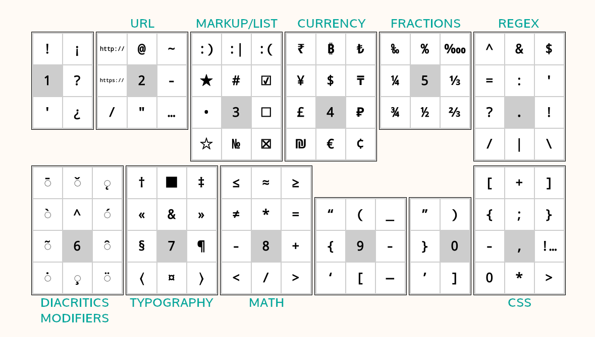
Ademais da xanela emerxente da pulsación longa, tamén podes introducir estes caracteres adicionais deslizando sobre unha tecla. No exemplo de abaixo, podes deslizar cara arriba na tecla a para introducir unha A maiúscula ou deslizar noutras direccións para introducir os caracteres que se amosan. Ten en conta que o exemplo inclúe a xanela emerxente completa como demostración. Non precisas abrila: podes deslizar directamente sobre as teclas. Unha vez que te afagas á posición dos caracteres adicionais, poderás introducilos moito máis rápido deste xeito.
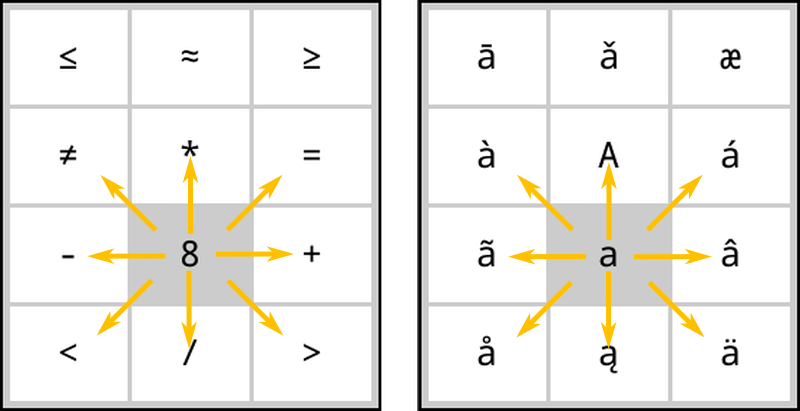
Se esta función che molesta, podes desactivala desmarcando:
/ Dispositivo / Teclado / Deslizar para inserir caracteres adicionaisAdemais, hai algúns atallos para manipular o texto máis facilmente. Podes manter pulsadas estas teclas para accións adicionais:
- Frecha esquerda: move o cursor ao principio da liña
- Frecha dereita: move o cursor ao final da liña
Ademais, a tecla de retroceso compórtase de forma diferente cando fas xestos de deslizar sobre ela:
- Pulsación: elimina un carácter
- Pulsación longa: elimina a liña enteira
- Deslizar cara á esquerda: elimina a parte da palabra que está á esquerda do cursor
- Deslizar cara arriba: elimina a palabra enteira
Para máis información, podes consultar a páxina da wiki relacionada.
KOReader tamén integra o teclado chinés por trazos para introducir caracteres chineses simplificados e tradicionais. Podes atopar máis información sobre el na nosa wiki.
Este plugin permíteche axustar a calidez da luz frontal en dispositivos con luz natural (amarela/laranxa) e activar o modo nocturno (cores da pantalla invertidas: texto branco sobre fondo negro) automaticamente segundo unha programación. Pode controlar os dous ou podes escoller o modo só control da calidez ou só control do modo nocturno, para axustar o outro manualmente.
Este plugin vén activado por defecto ao instalar KOReader. Se por algún motivo non aparece no menú, podes activalo aquí:
/ Máis ferramentas / Calidez e modo nocturno automáticosPodes axustar automaticamente a calidez da luz frontal da pantalla de dúas formas distintas:
Horario fixo: neste modo, a calidez da luz frontal cambia segundo o horario diario que introduciches. Este modo é estático: non ten en conta a duración da luz do día. O horario mantense igual durante todo o ano.
Posición do sol: esta opción calcula a posición do Sol na túa localización segundo a información de coordenadas e altitude que introduciches. A calidez da luz frontal axústase gradualmente segundo estes datos calculados da posición do Sol. Este modo é dinámico. A medida que a duración da luz do día cambia ao longo do ano, o plugin axusta o horario en consecuencia.
Primeiro bota unha ollada a esta imaxe para familiarizarte cos termos usados no plugin:
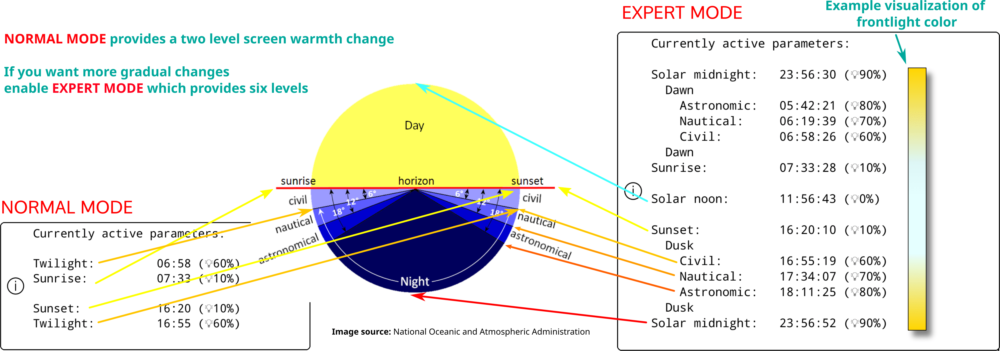
- Vai ao menú do plugin: MENÚ SUPERIOR / / Pantalla / Calidez e modo nocturno automáticos
- Pulsa o elemento de menú Activar e despois pulsa Segundo o horario fixo
- Volve ao menú anterior e pulsa o elemento de menú Axustes do horario fixo
- Define o horario de transición da calidez establecendo as horas dos distintos elementos. Consulta a imaxe de arriba para ver a explicación dos elementos.
- Vai ao menú do plugin:
MENÚ SUPERIOR / / Pantalla / Calidez e modo nocturno automáticos
- Pulsa o elemento de menú Activar e despois pulsa Segundo a posición do sol
- Volve ao menú anterior e pulsa o elemento de menú Axustes da localización. Define correctamente as túas coordenadas (obrigatorio) e a altitude (opcional) e dálle un nome á túa localización.
- Volve ao menú anterior e pulsa o elemento de menú Axustes de calidez e modo nocturno
- Define o horario de transición da calidez establecendo as horas dos distintos elementos. Consulta a imaxe de arriba para ver a explicación dos elementos.
Podes ver o teu horario actual na opción de menú Parámetros activos actualmente.
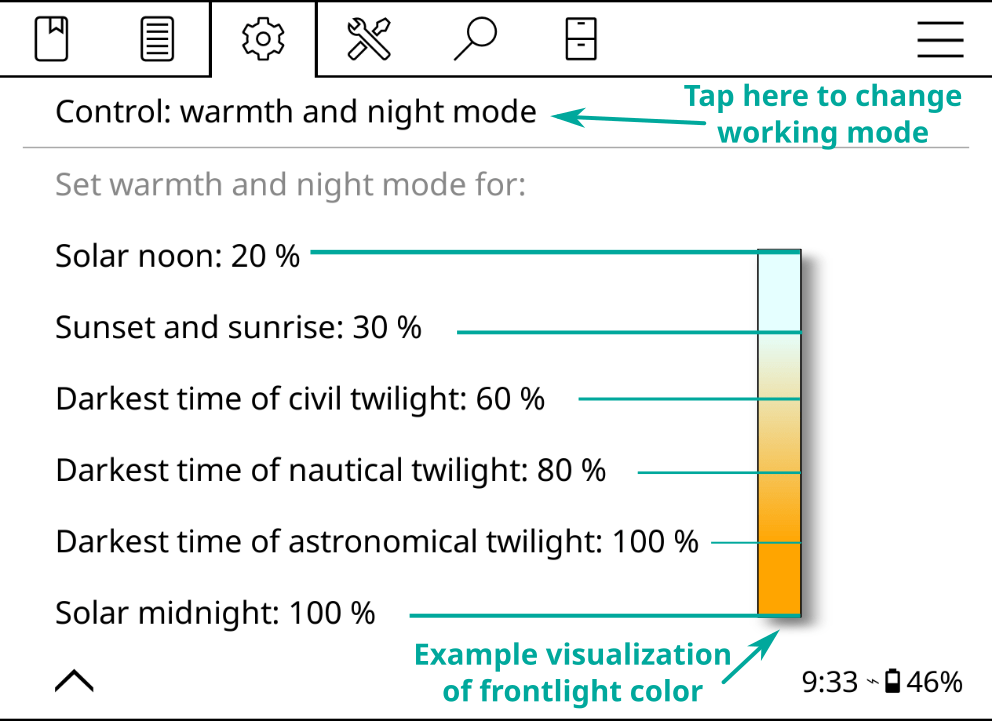
Mentres defines as porcentaxes de luz cálida para os distintos intervalos, tamén podes establecer ese intervalo como Modo nocturno, que inverte as cores da pantalla cando comeza ese intervalo. Se a túa luz frontal mínima segue sendo demasiado brillante ou se prefires un fondo de páxina escuro, podes activar esta función. Para iso, no diálogo de abaixo, pulsa a caixa de verificación Modo nocturno e pulsa Establecer.
Ao facelo, aparecerá unha icona de lúa no menú xunto a ese intervalo. Para desactivar o modo nocturno, só tes que desmarcar a caixa Modo nocturno nese intervalo.

Esta función acende a luz frontal ao solpor e apágaa ao amencer segundo os Parámetros activos actualmente deste plugin. Podes anular este cambio acendendo ou apagando manualmente a luz frontal. No seguinte amencer/solpor, AutoWarmth volverá cambiala se é necesario. Podes activala seleccionando o elemento de menú Luz frontal apagada durante o día deste plugin.
Se queres que a calidez da luz frontal cambie rapidamente en vez de facelo de forma máis gradual:
- Pon o modo en Horario fixo seguindo as instrucións de arriba
- E configura os axustes de xeito semellante ao da imaxe de abaixo:

Como podes ver nos axustes de arriba, só hai un minuto de diferenza na transición día-noite. Así, a calidez da pantalla pasa de 0 a 100 (ou ao revés) en só un minuto. Podes aumentar esta separación para que a transición dure máis.
KOReader ten unha interface de usuario sinxela, principalmente en branco e negro, porque os degradados e os distintos tons de gris poden causar parpadeos e pantasmas nas pantallas de tinta electrónica, o que pode empeorar a experiencia de lectura.
KOReader ten 2 interfaces principais: a pantalla de lectura e o explorador de ficheiros. Aquí explicaremos a pantalla de lectura. O explorador de ficheiros explícase nesta sección da guía.
A PANTALLA DE LECTURA ten dous menús:
- O MENÚ SUPERIOR inclúe elementos de menú relacionados co uso xeral de KOReader. Aquí accederás aos teus libros, ás preferencias de KOReader, aos plugins, etc.
- O MENÚ INFERIOR céntrase en opcións de formato do documento, como o peso/tamaño da fonte, o interliñado, etc. Mentres axustas a aparencia do texto, interactuarás sobre todo co MENÚ INFERIOR.

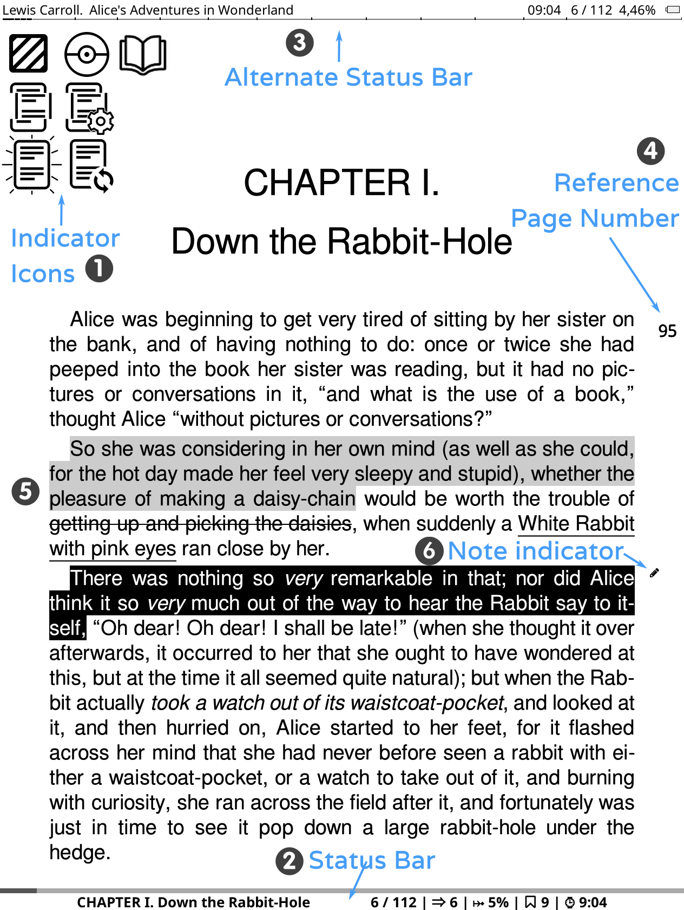
A imaxe de arriba amosa os elementos que podes ver na pantalla do lector mentres les un libro:
- Iconas indicadoras: estas iconas infórmante sobre certos procesos e estados en curso. Verás estas iconas na esquina superior esquerda da pantalla durante certas operacións. Normalmente son máis pequenas, pero aquí amosámolas máis grandes para que se vexan mellor. O seguinte apartado explica en detalle estas iconas indicadoras: Iconas indicadoras
- Barra de estado: é unha zona moi configurable onde podes ver información diversa sobre o teu libro e KOReader. Pulsa aquí para ir á sección: Barra de estado
- Barra de estado alternativa: ademais da Barra de estado por defecto, temos unha Barra de estado alternativa que aparece na parte superior da páxina se a activas. Pulsa aquí para ver os detalles: Barra de estado
- Números de páxina do editor: se o editor do teu libro incluíu os números de páxina da versión impresa en papel, verasos así. Pulsa aquí para máis información sobre os números de páxina do editor: Numeración de páxinas
- Tipos de destacado: aquí podes ver os distintos tipos de destacado. Tamén podes destacar con cores se o teu dispositivo ten unha pantalla axeitada. Pulsa aquí para ir á sección: Marcadores, textos destacados e notas
- Marcador de nota: a icona do marcador de nota aparece cando engades unha nota a un texto destacado. Temos distintos tipos de marcadores de nota. Pulsa aquí para máis información: Marcadores, textos destacados e notas
KOReader ten algúns indicadores para informarte sobre certos procesos e estados en curso, como podes ver na imaxe de arriba. Verás estes indicadores na esquina superior esquerda da pantalla durante certas operacións.
  |
Iconas de renderizado parcial Este grupo de iconas pertence ao procedemento de renderizado parcial e probablemente as verás con máis frecuencia ca as outras. Verás estas iconas cando cambies os axustes no menú inferior. Esta función permíteche previsualizar moito máis rápido os axustes da aparencia do texto, renderizando só o capítulo actual en vez do libro enteiro. Grazas a esta función, xirar a orientación da pantalla tamén é agora moito máis rápido. Esta función está ACTIVADA por defecto. Se é necesario, pódese desactivar por libro (cunha pulsación) ou globalmente (cunha pulsación longa) en: MENÚ SUPERIOR /
/ Documento / Permitir renderizados parciaisDespois de confirmar os cambios, hai que volver renderizar o libro enteiro, polo que se trata dun procedemento de varios pasos. Estas iconas amosan a fase do renderizado, como se explica a continuación: |
Nesta fase, o documento está renderizado parcialmente. O número de páxinas, a información do pé de páxina e moitas outras cousas son imprecisos. Podes ver como quedan os novos axustes e seguir axustándoos. Neste estado tamén podes pasar páxinas e seguir ligazóns. |
|
|
Estase a facer un renderizado completo en segundo plano. Aínda podes pasar páxinas, seguir ligazóns e cambiar axustes. |
|
O renderizado completo rematou, pero aínda non se aplicou porque KOReader está á espera de que esteas inactivo para recargar o resto do libro (inactivo = sen interactuar co dispositivo). Aínda podes pasar páxinas, seguir ligazóns e cambiar axustes. |
Levas un tempo inactivo, así que KOReader está agora a recargar o documento enteiro. Neste paso, KOReader está bloqueado para evitar interaccións. |
Icona de destacado Esta icona aparece cando estás no modo de seleccionar e destacar. KOReader ten un modo de destacado adicional que che permite comezar a destacar e pasar páxinas para facer textos destacados longos que poden abranguer varias páxinas. Podes ler sobre isto na sección MARCADORES, TEXTOS DESTACADOS E NOTAS desta guía. Cando comezas a destacar neste modo, amósase esta icona na esquina para lembrarche que aínda estás no modo de destacado. Desaparece cando rematas o destacado seleccionando o final da pasaxe ou cando cancelas o destacado (pulsando de novo o comezo do destacado ou esta icona de destacado). |
Icona de pokébola Esta icona aparece cando pulsas durante moito tempo sobre unha palabra (a propósito ou por accidente). KOReader ten un menú normal de pulsación longa. E un menú adicional de pulsación moi longa cando mantés o dedo máis de 3 segundos. Esta icona significa que activaches ese menú de pulsación moi longa. |
 |
Icona do modo de follear Esta icona aparece cando pulsas a esquina superior esquerda se:
Este modo amosa temporalmente a páxina completa sen recortar, escalada para encaixar na pantalla. Neste modo podes pasar páxinas. Para saír deste modo, pulsa esta icona. |
KOReader ten dúas barras de estado: unha barra de estado inferior, que está activada por defecto, e unha Barra de estado alternativa, que aparece na parte superior da páxina se a activas. Esta Barra de estado alternativa só está dispoñible en documentos redistribuíbles (epub, html, docx, rtf, txt…).
A barra de estado inferior é a máis nova e a que se mantén activamente. A Barra de estado alternativa é un resto de versións anteriores de KOReader, polo que non lle engadimos funcións novas. Porén, aínda podes activar esta Barra de estado alternativa se che resulta útil. Podes activala dende:
/ Barra de estado alternativaPodes configurar a Barra de estado alternativa dende este menú:
/ Barra de estado / Barra de estado alternativaAs instrucións do resto desta sección refírense á barra de estado inferior.
A Barra de progreso da barra de estado normalmente amosa o progreso de todo o libro. Pero tamén pode amosar o progreso do capítulo actual. Isto pode ser útil, por exemplo, se un libro ten moitos capítulos curtos. Nese caso pode ser difícil ver o progreso no capítulo actual, así que a barra de estado do capítulo pode ser máis informativa. Podes activar esta función dende este menú:
/ Barra de estado / Barra de progreso / Amosar no seu lugar a barra de progreso do capítuloTamén podes asignar un xesto para alternar entre a barra de progreso normal e a do capítulo. Podes atopar esta acción en:
Podes configurar a barra de estado inferior dende este menú. Explora con liberdade o submenú AXUSTES para personalizar a barra de estado ao teu gusto.
/ Barra de estadoHai moitos elementos que podes amosar na barra de estado. Pero, por defecto, só se amosa un de cada vez e tes que pulsar a barra de estado para alternar entre eles. Se queres amosar todos os elementos á vez, actívao dende aquí:
/ Barra de estado / Configurar elementos / Amosar todos os elementos seleccionados á vezOrdenar os elementos da barra de estado:
/ Barra de estado / Configurar elementos / Organizar elementos na barra de estado / Barra de estado / Barra de progreso / Fixar a largura no mínimoPodes cambiar a fonte dos elementos da barra de estado dende aquí:
/ Barra de estado / Configurar elementos / Fonte do elementoPodes usar todas as fontes instaladas na barra de estado. Se queres que caiba moita información, suxerímosche a fonte DINish Condensed, que podes descargar da súa páxina do proxecto e instalar seguindo o mesmo procedemento que atoparás aquí: Usar as túas propias fontes
A barra de estado de KOReader ten un elemento especial chamado recheo dinámico. Cando engades este elemento invisible á barra de estado, expándese para encher o espazo dispoñible como un globo inchado, empurrando os outros elementos cara aos dous lados, como podes ver na imaxe de abaixo (o recheo dinámico represéntase como un rectángulo azul):
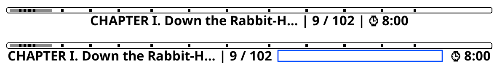
Podes activar e mover este elemento como os demais elementos da barra de estado dende o mesmo menú. Tamén podes combinar este elemento co elemento texto personalizado, explicado máis abaixo, para axustar aínda máis a disposición.
Hai un elemento especial da barra de estado chamado Texto personalizado. Este elemento pode amosar o texto que escollas na barra de estado. Tamén podes usar esta función para crear un separador entre os elementos da barra de estado, como podes ver no exemplo de abaixo:

- Primeiro activa esta opción cunha pulsación curta sobre ela neste menú
MENÚ SUPERIOR / / Barra de estado / Elementos da barra de estado / Texto personalizado: ‘KOReader’
- Despois mantén pulsado de novo para abrir os seus axustes. Introduce un carácter de "espazo" na primeira caixa e o número de repeticións na segunda, que determinará a largura do separador.
Podes escoller outro carácter como separador. Tamén podes mover este elemento como os demais elementos da barra de estado para cambiar a súa orde e axustar os teus grupos.
Tamén podes usar este elemento en combinación co elemento recheo dinámico, explicado máis arriba, para axustar aínda máis a disposición.
KOReader permíteche ter máis dunha disposición da barra de estado e cambiar entre elas. Con esta función podes ter distintas disposicións para casos como estes exemplos:
- Unha disposición que amosa máis elementos ao usar a orientación horizontal, máis ampla
- Unha disposición co elemento nome do capítulo ao ler libros concretos
- Unha disposición co elemento uso de memoria ao ler cómics grandes, para vixiar a memoria
Para crear unha configuración gardada, primeiro axusta a barra de estado ao teu gusto engadindo e ordenando elementos (como se explicou antes nesta sección). Despois selecciona:
/ Barra de estado / Configuracións gardadas da barra de estado / Gardar os axustes actuais como nova configuraciónIsto creará unha configuración gardada coa disposición actual da barra de estado. Repite isto para as outras disposicións que queiras crear. Despois diso, podes cambiar entre as novas disposicións dende o mesmo menú. Tamén podes usar xestos, perfís e o menú rápido para cambiar rapidamente entre as túas configuracións gardadas da barra de estado.
Contido externo é un elemento especial da barra de estado que permite aos plugins de KOReader amosar contido na barra de estado. Por exemplo, o plugin Temporizador de lectura usa este elemento para amosar o temporizador na barra de estado. Polo de agora non precisas activalo manualmente, pero podes atopalo aquí:
/ Barra de estado / Elementos da barra de estado / Contido externoAquí só daremos unha visión xeral dos elementos da estrutura do menú superior para que te familiarices co menú. Tes información detallada nas seccións relacionadas desta guía.
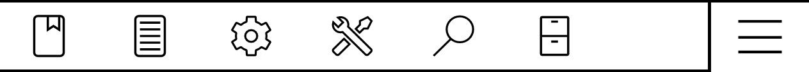
 NAVEGACIÓN Este menú contén elementos que che permiten navegar polo libro que estás a ler. Índice, marcadores, mapa do libro...
NAVEGACIÓN Este menú contén elementos que che permiten navegar polo libro que estás a ler. Índice, marcadores, mapa do libro...-
COMPOSICIÓN Este menú contén elementos que che permiten cambiar a aparencia do teu libro. Axustes da fonte, axustes de estilo...
-
AXUSTES Este menú contén os axustes de KOReader e do teu dispositivo. Axustes da tinta electrónica, da luz, dos xestos...
-
FERRAMENTAS Este menú contén plugins que poden ampliar as funcións de KOReader.
 BUSCAR Este menú contén elementos relacionados coa busca e a consulta. Busca de texto, dicionario, tradución, Wikipedia...
BUSCAR Este menú contén elementos relacionados coa busca e a consulta. Busca de texto, dicionario, tradución, Wikipedia...-
EXPLORADOR DE FICHEIROS Este botón abre o explorador de ficheiros, que é a interface para xestionar a túa biblioteca.
 PRINCIPAL Este menú contén ferramentas para acceder aos teus libros, como o historial, os favoritos e as coleccións. Neste menú tamén están os elementos de información do libro, actualización e saír.
PRINCIPAL Este menú contén ferramentas para acceder aos teus libros, como o historial, os favoritos e as coleccións. Neste menú tamén están os elementos de información do libro, actualización e saír.

Modo de vista Se cambias ao modo continuo, podes desprazar o documento como unha páxina web. Este modo é máis axeitado para pantallas que non son de tinta electrónica (LCD, OLED). No modo continuo pérdense as marxes superior e inferior, polo que o texto pode quedar cortado na primeira e na última liña da pantalla. Para solucionar este problema, podes activar Superposición de páxina:
/ Superposición de páxinaA opción Modo de renderización determina como KOReader renderiza o teu documento. O valor por defecto é WEB e, en xeral, non precisas cambiar esta opción. Cando un libro (ou unha páxina web gardada) é moi complexo (larguras ou marxes especificadas, marxes negativas, elementos flotantes, etc.) e a disposición se ve mal ou desborda a pantalla, podes probar outros modos de renderizado.
A opción Zoom (dpi) pódese entender como un factor de zoom xeral para o documento (agás o tamaño da fonte). A 96 dpi (o valor por defecto), as imaxes do documento renderízanse coas súas dimensións orixinais. Basicamente, usarás esta opción se queres facer as imaxes máis grandes sen facer o texto máis grande.
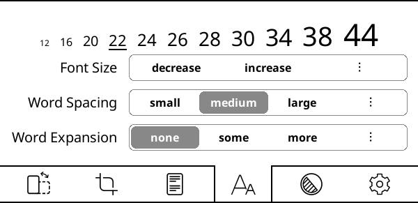
As opcións Espazado entre palabras e Expansión de palabras están relacionadas e determinan como se verá o texto cando estea xustificado. Ao xustificar o texto, engádese espazo entre as palabras para que os dous bordos de cada liña queden aliñados coas dúas marxes. Como o número de palabras das liñas non sempre é igual, no aliñamento xustificado o texto ten que comprimirse ou expandirse para encher a liña.
Espazado entre palabras Canto se poden comprimir os caracteres de espazo dunha liña de texto para que caiban máis palabras. Esta opción non afecta ás palabras, só cambia o espazo entre elas.
Expansión de palabras Se hai demasiado espazo en branco nunha liña, canto del se pode repartir nas palabras expandíndoas. Esta opción afecta á aparencia das palabras. Se non queres que as palabras se expandan, ponla en ningunha.
Podes probar distintos valores ata que o texto che resulte agradable e despois establecelos como valores por defecto nos seus respectivos diálogos.

Contraste e Peso da fonte son dúas opcións que podes usar para facer o texto máis groso (ou máis fino). Podes conseguir a mesma aparencia con calquera delas, pero usan métodos distintos para logralo. Por suposto, podes usar as dúas á vez.
As diferenzas entre elas pódense resumir así:
+ Non cambia a largura da fonte, a lonxitude do libro mantense igual
+ Non precisa volver renderizar o documento, é máis rápido
- Pode verse mal en pantallas LCD ou de baixa resolución (DPI)
+ Usará as fontes co peso axeitado se as tes instaladas
+ Vese mellor en pantallas LCD ou de baixa resolución (DPI)
- Ten que volver renderizar as fontes, é máis lento
Kerning da fonte axusta o espazado entre letras para conseguir un resultado visualmente agradable. O valor por defecto é a opción o mellor, que pode ser máis lenta ao abrir ficheiros (segundo o dispositivo), pero ofrece mellor compatibilidade coas ligaduras (consulta a imaxe de abaixo para ver un exemplo), cos glifos árabes unidos e con algúns outros sistemas de escritura. Se o teu dispositivo é lento, podes probar bo, que é máis rápida e pode verse ben igualmente con texto occidental en alfabeto latino.
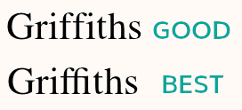
A Optimización da fonte (hinting) é unha técnica tipográfica que axusta os caracteres dunha fonte para que encaixen nunha grella de baixa resolución, como unha pantalla de tinta electrónica. Cando está activada, os caracteres resultan máis nítidos e fáciles de ler, á custa dunha lixeira distorsión do deseño orixinal da fonte.
A diferenza da optimización da fonte nótase máis en pantallas de resolución estándar ou con tamaños de fonte pequenos. Nunha pantalla de moi alta resolución, a diferenza nótase moito menos porque os píxeles son o suficientemente pequenos.
Velaquí unha comparación máis detallada:
Optimización DESACTIVADA
|
Optimización ACTIVADA
|
|
|
En KOReader, a optimización da fonte está activada por defecto e usa o algoritmo de hinting da biblioteca FreeType en vez das instrucións internas da fonte (por seguridade, xa que as instrucións internas da fonte poderían estar estragadas). Pero podes probar as instrucións do deseñador da fonte incluídas no ficheiro da fonte para ver se se ve mellor:
- desactivada A optimización está desactivada.
- nativa KOReader usa as instrucións de optimización internas da fonte.
- automática (activada por defecto) KOReader usa o algoritmo de optimización de FreeType e ignora a optimización interna da fonte. Xestiona mellor o texto CJK.

A Barra de estado alternativa activa unha barra de estado alternativa que só está dispoñible en documentos redistribuíbles (EPUB, HTML, DOCX, RTF, TXT…). Despois de activala aquí, podes configurar a barra de estado alternativa en:
/ Barra de estado / Barra de estado alternativaEstilo incrustado e fontes incrustadas determinan se se usarán (ou se ignorarán) os estilos e as fontes do editor incluídos no documento para renderizalo. Son interruptores xerais de activado/desactivado. Podes facer axustes máis finos no teu documento en:
/ Axustes de estiloEscalado de imaxes determina como se renderizan as imaxes do documento. O mellor vese máis agradable, pero é máis lento.
A interface de usuario e as opcións de KOReader poden cambiar segundo o tipo de ficheiro que abras. Hai dúas categorías principais de documentos:
- Documentos de composición fixa (pdf, djvu, ficheiros de imaxe...)
- Documentos redistribuíbles (epub, html, docx, rtf, txt…).
KOReader ten moitas funcións, polo que o seu sistema de menús reflicte esta complexidade. Temos unha función de Buscar no menú para atopar rapidamente os elementos do menú. Se lembras o nome dun elemento de menú pero non onde está, podes usar esta función:
/ Axuda / Buscar no menúTamén podes asignar esta función a un xesto ou engadila ao teu Menú rápido para acceder a ela máis rápido.
No menú inferior, se mantés pulsado o nome dunha opción, podes ver a súa explicación. |
|
Podes cambiar a lingua da interface en: MENÚ SUPERIOR /
/ Lingua |
|
Se queres cambiar o tamaño da interface de usuario, hai unha opción de DPI para iso: MENÚ SUPERIOR /
/ Pantalla / Resolución da pantallaPodes escoller un valor no menú ou seleccionar DPI personalizados para introducir un valor e axustalo con precisión: maior DPI = interface máis grande. Ten en conta que tamén hai unha opción de Zoom (dpi) na barra inferior. Esa refírese só aos documentos. Atoparás a súa explicación na seguinte sección. |
Se mantés pulsada unha opción ou un elemento de menú (peso da fonte, interliñado, etc.), podes establecer o seu valor como POR DEFECTO. O novo valor só se aplicará aos libros que abras a partir de agora. Os libros abertos anteriormente manterán os seus axustes. Podes identificar os valores por defecto por unha estrela (★) no menú ou por un bordo negro arredor dos indicadores, como se ve abaixo: 
|
Podes pechar os diálogos a pantalla completa (Historial, Índice, Estatísticas de lectura, etc.) deslizando cara abaixo. (Agás a xanela de Marcadores: para pechala podes usar calquera xesto de deslizamento múltiple) |
Podes facer unha captura de pantalla facendo un deslizamento diagonal longo co dedo. Tamén se fai unha captura ao pulsar esquinas diagonalmente opostas. Podes usar este segundo xesto, por exemplo, cando estás a ver unha imaxe. Ademais, se o teu dispositivo ten teclado, podes facer unha captura co atallo Alt + Maiús + G. |
Se queres abrir unha páxina ao chou dun libro, temos unha acción Páxina aleatoria que podes asignar a calquera xesto. Está na categoría Lector do Xestor de xestos. |
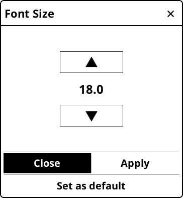 Nos diálogos con botóns de frecha para axustar valores, como o de arriba, podes manter pulsados os botóns de frecha para cambiar o valor en incrementos máis grandes. Podes pechar este tipo de diálogo (non a pantalla completa) pulsando fóra da súa xanela. Podes mover este tipo de diálogo mantendo pulsado o título da xanela e arrastrando. Podes facer que este tipo de diálogo sexa semitransparente mantendo pulsado o título da xanela (cando queiras ver o texto que hai debaixo mentres axustas un valor). |
Crear cartafoles novos: en situacións nas que tes que escoller unha localización (almacenamento na nube, plugin de mover ao arquivo, plugin de exportación), KOReader preséntache unha pantalla que se parece ao noso Explorador de ficheiros. Se queres crear un cartafol novo mentres escolles:
|
KOReader permite a consulta no dicionario en documentos EPUB e PDF/DJVU escaneados. Para ver a definición do dicionario ou a tradución, só tes que manter pulsada unha palabra. Ao manter pulsada unha palabra ábrese un diálogo onde tamén podes buscar a selección no documento para atopar máis aparicións ou consultala na Wikipedia. |
Cando ves os resultados do dicionario e da Wikipedia, podes facer unha pulsación longa sobre unha ou varias palabras nestas xanelas para buscalas tamén no dicionario/Wikipedia. Isto abrirá outra xanela co resultado, así que non perderás a busca anterior. Se abriches varias xanelas de busca, como se describe no consello anterior, podes pechalas todas á vez facendo unha pulsación longa no botón de pechar X. |
Se queres consultar a data actual, podes pulsar o reloxo no MENÚ SUPERIOR. |
KOReader ten tres tipos de desprazamento táctil. Podes acceder a eles dende:
/ Pulsacións e xestos / Desprazamento- Desprazamento clásico: este modo funciona exactamente igual que o desprazamento do teu teléfono/tableta.
- Desprazamento turbo: este modo permíteche desprazarte máis rápido que co desprazamento clásico. Ademais, podes desprazarte varias páxinas sen levantar o dedo. A cantidade de desprazamento é proporcional á distancia que moves o dedo despois de iniciar o desprazamento.
- Desprazamento ao soltar: este tipo de desprazamento é máis axeitado para pantallas de tinta electrónica, porque, a diferenza dos outros tipos, este modo non refresca a páxina continuamente mentres te desprazas. Funciona como o desprazamento clásico, pero non se amosan os pasos intermedios. Así, cando te desprazas co dedo e despois o soltas, a páxina salta a esa posición. Isto é especialmente útil para recolocar e axustar a vista se o teu libro contén imaxes ou táboas e queres velas enteiras.
Esta útil función funciona como o botón Atrás do teu navegador. Cando saltas a outra parte do libro usando o Widget para follear, a lista de marcadores, o mapa do libro, etc., KOReader lembra a túa localización anterior. Isto é útil, por exemplo, se segues unha ligazón interna ou unha referencia. Cunha soa pulsación podes volver a onde estabas. Podes acceder a esta función dende:
/ Volver á posición anteriorTamén podes ir cara adiante dende o mesmo menú. Esta función está asignada ao xesto de deslizamento múltiple . Se queres, podes asignala a outro xesto (como pulsar unha esquina) ou engadila ao teu Menú rápido.
KOReader normalmente fai un refresco completo nas páxinas que conteñen imaxes (que podes observar como un parpadeo negro). O motivo é eliminar os restos e as pantasmas da páxina anterior. Porén, isto pode non ser necesario segundo o teu dispositivo e as túas preferencias persoais. Podes desactivar este refresco automático aquí:
/ Pantalla / Axustes de tinta electrónica / Taxa de refresco completo / Refrescar sempre en páxinas con imaxesTamén podes desactivar aquí os parpadeos negros da interface de usuario se che molestan:
/ Pantalla / Axustes de tinta electrónicaEn KOReader hai distintas formas de moverse polo documento, cada unha cos seus puntos fortes. Podes usar:
- Widget para follear
- Mapa do libro
- Explorador de páxinas
O Widget para follear é unha ferramenta de navegación moi funcional. Podes usalo para:
- Saltar a calquera parte do libro pulsando directamente na barra de progreso ou introducindo o número de páxina
- Navegar entre capítulos
- Navegar entre marcadores
Como abrir o Widget para follear:
- Cunha pulsación longa na zona da Barra de estado, na parte inferior da pantalla
- Dende este menú: MENÚ SUPERIOR / / Follear documento
- Podes asignarlle un xesto
- Podes engadilo ao teu Menú rápido
Primeiro botemos unha ollada rápida ao diagrama de abaixo. Verás que temos dous Widgets para follear distintos. Teñen as mesmas funcións; só cambia o seu tamaño:
- WIDGET PARA FOLLEAR DE TAMAÑO COMPLETO: é o widget para follear por defecto que verás ao instalar KOReader. É máis grande que o widget para follear compacto, polo que os botóns son máis cómodos de pulsar. Este widget ábrese no centro da pantalla.
- WIDGET PARA FOLLEAR COMPACTO: é a versión máis estreita do widget para follear por defecto. Pode ser máis útil, por exemplo, se estás a destacar texto. Como este widget é máis pequeno e se abre na parte superior ou inferior da pantalla, non tapa tanto a páxina como o widget por defecto.
Se queres usar o widget para follear compacto, podes facelo escollendo Arriba ou Abaixo neste menú:
/ Navegación / Posición do diálogo de follear:Volvamos agora ao diagrama. Podes ver que nalgúns botóns hai dúas descricións en cores distintas: azul e laranxa . Isto significa que ese botón ten dúas funcións: unha acción de pulsación normal e outra de pulsación longa. Se pulsas normalmente, realizará a función AZUL. Se pulsas máis tempo, realizará a función LARANXA.
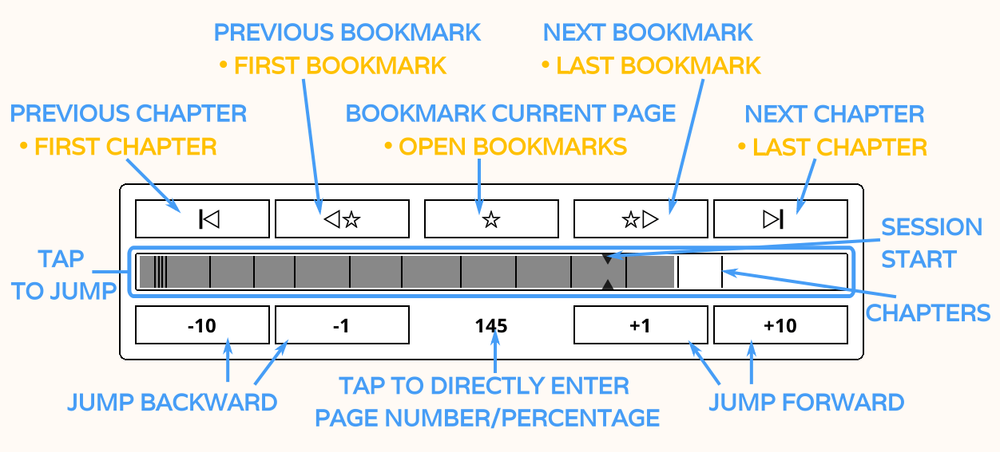
Explicación dos elementos numerados (a acción de pulsación longa, en negra):
- Saltar ao comezo do capítulo anterior / Saltar á primeira páxina do libro
- Saltar ao marcador anterior / Saltar ao primeiro marcador do libro
- Engadir un marcador na páxina actual / Abrir o diálogo de marcadores
- Saltar ao seguinte marcador / Saltar ao último marcador do libro
- Saltar ao comezo do seguinte capítulo / Saltar á última páxina do libro
- Saltar cara atrás (-) ou cara adiante (+) este número de páxinas
- Este número amosa o número da páxina actual. Se o pulsas, ábrese un diálogo que che permite introducir un número de páxina ou unha porcentaxe para saltar directamente. Se fas unha pulsación longa, lévate de volta á páxina na que abriches o widget para follear. Isto é útil, por exemplo, se queres consultar rapidamente outra parte do libro e volver á lectura onde a deixaches.
- Esta é a barra de progreso. As liñas finas son as marcas de capítulo, que indican o comezo dos capítulos. Podes pulsar nesta barra de progreso para saltar a esa parte do libro. As frechas pequenas son as frechas de inicio de sesión, que marcan o lugar onde comezaches a ler este libro na sesión actual. Estas frechas restablécense cando cambias de libro.
- Este botón do widget para follear compacto funciona igual que a función de pulsación longa do elemento número 7. Lévate de volta á páxina na que abriches o widget para follear. Isto é útil, por exemplo, se queres consultar rapidamente outra parte do libro e volver á lectura onde a deixaches.
KOReader pode amosar os límites dos capítulos dos teus documentos no WIDGET PARA FOLLEAR e na BARRA DE PROGRESO.

Se o teu documento ten demasiados niveis de título, as marcas de capítulo poden verse amoreadas, como no exemplo de arriba. Podes cambiar a profundidade dos niveis de marcas do índice visibles en:
/ Axustes / Barras de progreso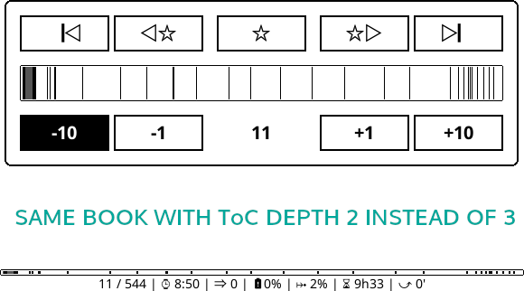
Tamén podes usar este índice reducido para:
- títulos de capítulo (se se amosan na Barra de estado)
- navegación entre capítulos
- estimacións do tempo de lectura restante
Estas opcións están no mesmo menú.
Se o teu documento non ten índice, podes activar o ÍNDICE ALTERNATIVO. Cando esta opción está activada, KOReader crea un índice a partir dos títulos do documento (se os hai) ou dos ficheiros HTML individuais do EPUB. Fai unha pulsación longa neste elemento de menú para ver información adicional:
/ Axustes / Índice alternativoPodes atopar máis información sobre as ferramentas do índice dispoñibles en KOReader nesta sección da guía: Ferramentas do índice
Despois de aprender a navegar, agora imos aprender a marcar páxinas nun documento. Isto permitiranos saltar rapidamente entre distintas partes do documento.

Se nun documento hai unha páxina á que saltas a miúdo (por exemplo, a sección de referencias dun libro), podes fixar esa páxina para saltar a ela facilmente. Só podes ter unha páxina fixada por libro, así que, se precisas máis lugares aos que saltar, consulta a función de Marcadores máis abaixo.
Como fixar ou desfixar unha páxina:
- Abre o Widget para follear.
- Pulsa o número de páxina no Widget para follear.
- Abrirase un diálogo e verás nel o botón Fixar páxina actual. Pulsa normalmente para fixar a páxina ou mantén pulsado para desfixala.
Tamén podes chegar a este diálogo dende este menú, ao que tamén podes asignar un xesto:
MENÚ SUPERIOR / / Ir á páxina
Como saltar á páxina fixada:
- Abre o Widget para follear.
- Pulsa o número de páxina no Widget para follear.
- Pulsa o botón Ir á páxina fixada no diálogo que se abre.
Como volver:
Despois de saltar á páxina fixada, podes volver á túa posición de lectura anterior con esta acción do menú:
/ Volver á posición anteriorTamén podes usar o deslizamento cun dedo deslizar á esquerda e despois á dereita para volver.
Fixar e saltar é moito máis rápido se asignas Xestos a estas accións:
- Por exemplo, podes asignar un xesto á acción Fixar páxina actual.
- Outro xesto á acción Ir á páxina fixada.
- E algún outro xesto a Volver á posición anterior
Agora podes fixar rapidamente unha páxina, saltar a ela mentres les e volver con só tres pulsacións. Por suposto, tamén podes engadir estas accións ao teu Menú rápido.

Podes engadir (e quitar) un marcador pulsando a esquina superior dereita dunha páxina. É o equivalente a dobrar a esquina da páxina nun libro impreso, e ao engadir un marcador amósase unha icona semellante na esquina.
Podes acceder aos teus marcadores dende a xanela de Marcadores e despois pulsar nos marcadores para saltar á páxina correspondente:
/ MarcadoresPodes abrir esta xanela rapidamente co xesto deslizar á esquerda con dous dedos ou co deslizamento cun dedo arriba e despois á esquerda.
O mapa do libro é unha función potente e exclusiva de KOReader que pode ser moi útil para ter unha visión xeral dun libro. Por exemplo, se estás a ler un libro de forma non lineal, saltando algunhas partes para lelas máis tarde, sería difícil seguir o teu progreso. O Mapa do libro pode amosarche dunha ollada que partes do libro xa liches.
Ademais, podes:
- Ver canto tempo pasaches en cada páxina (se o plugin de Estatísticas de lectura está activado)
- Comprobar que páxinas teñen marcadores, textos destacados e notas
- Navegar directamente a calquera parte do libro, como co WIDGET PARA FOLLEAR
Podes acceder ao Mapa do libro a través do menú e tamén podes asignarlle un xesto para acceder máis rápido:
/ Mapa do libroCando abras o Mapa do libro por primeira vez mentres les un libro, estará no modo Vista de grella, que encaixa todos os capítulos nunha soa pantalla para dar a mellor visión xeral inicial do contido do libro. Para obter información detallada sobre o seu uso, pulsa a icona de información na esquina superior esquerda. Podes pechar o Mapa do libro pulsando a X da esquina superior dereita ou con calquera xesto de deslizamento múltiple (ARRIBA-ABAIXO, ESQUERDA-DEREITA, etc.).

- Límites dos capítulos
- As barras negras indican as páxinas lidas. Canto máis altas son as barras, máis tempo se pasou na páxina.
- A icona de marcador amosa as páxinas con marcador, como o seu nome indica.
- A icona do cadrado raiado amosa as páxinas con textos destacados.
- A icona do lapis amosa as páxinas con notas.
- Os números nun círculo amosan as túas localizacións anteriores. Cando escollas Volver á posición anterior no menú, saltarás de volta aquí por orde.
- O triángulo amosa a túa páxina actual.
- A barra de desprazamento vertical amosa o teu nivel de vista actual.
- A barra de desprazamento vertical amosa o nivel actual de largura das páxinas.
Podes personalizar o Mapa do libro cambiando estas opcións:
- Primeiro proba a deslizar á ESQUERDA e á DEREITA ao longo do bordo inferior da pantalla para cambiar a largura das columnas que representan as páxinas e observa como cambia a escala do mapa.
- Despois proba a deslizar ARRIBA e ABAIXO ao longo do bordo esquerdo da pantalla para cambiar a profundidade dos títulos de capítulo e pasar á Vista plana. Mira os exemplos de abaixo.
Ademais da Vista de grella por defecto de arriba, aquí podes ver a Vista plana á esquerda e a vista de grella sen títulos de capítulo á dereita. Fíxate en como cambia a barra de desprazamento vertical esquerda entre as vistas. Se queres volver á vista por defecto, podes facer unha pulsación longa na icona de información da esquina superior esquerda.
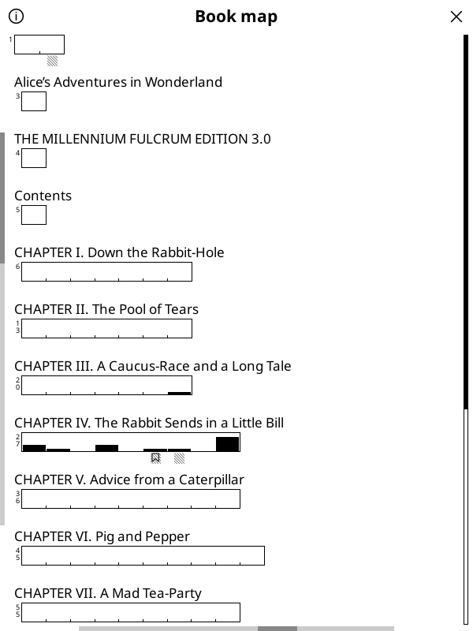
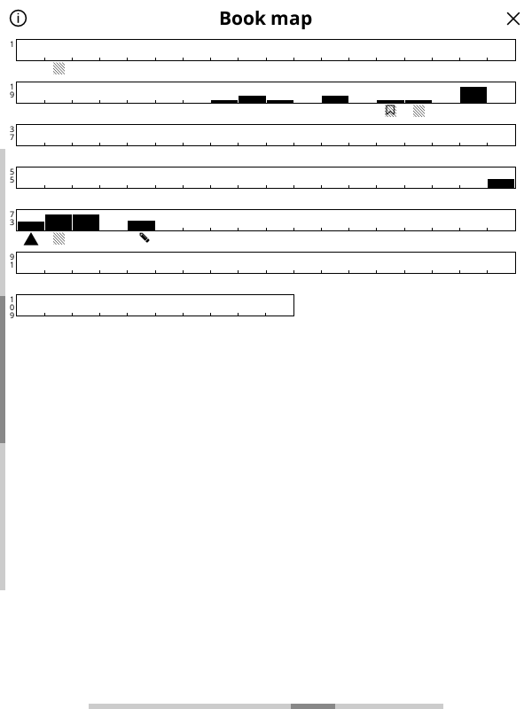
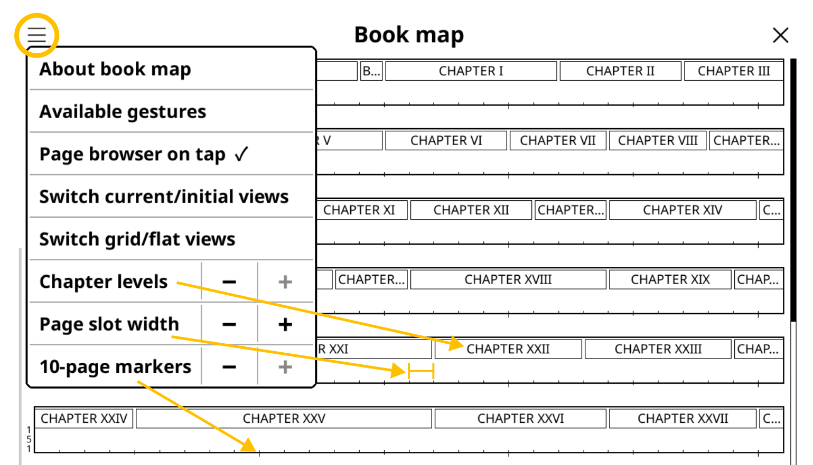
Cando pulsas a icona do menú na pantalla do Mapa do libro, amósase o menú de arriba. As opcións do menú explícanse a continuación:
- Acerca do mapa do libro: breve explicación do uso do Mapa do libro e descrición das iconas.
- Xestos dispoñibles: xestos que podes usar para cambiar os axustes do Mapa do libro en vez de usar este menú.
- Explorador de páxinas ao pulsar: se esta opción está marcada, cando pulsas unha páxina no Mapa do libro ábrese o Explorador de páxinas, que che amosa unha visión xeral da zona seleccionada. Se desactivas esta opción, unha pulsación no Mapa do libro lévate directamente a esa páxina. Pero lembra que, segundo factores como o tamaño da pantalla, a sensibilidade da pantalla táctil, a precisión da pulsación, etc., podes acabar nunha páxina contigua.
- Cambiar entre vista actual/inicial: se personalizaches a vista do Mapa do libro, ao pulsar aquí alternas entre a vista por defecto e a vista personalizada.
- Alternar vista de grella/vista plana: alterna entre as vistas de capítulos separados ou de capítulos continuos.
- Niveis dos capítulos: cambia a profundidade dos niveis de capítulo/subcapítulo.
- Ancho do espazo de páxina: fai cada espazo de páxina máis ancho ou máis estreito.
- Marcadores de 10 páxinas: ao aumentar este valor, primeiro engadirá marcadores cada 10 páxinas, despois faraos máis grandes e, finalmente, engadirá marcadores cada 5 páxinas.
O Explorador de páxinas pódese usar para navegar entre páxinas como nun álbum de fotos, amosando miniaturas das páxinas nunha grella. Podes abrir o Explorador de páxinas pulsando no Mapa do libro ou dende o menú. Tamén podes asignarlle un xesto para acceder máis facilmente.
/ Explorador de páxinas
O uso do Explorador de páxinas explícase a continuación. Tamén podes pulsar o botón do menú hamburguesa da esquina superior esquerda nesta pantalla para ver estas explicacións. Unha pulsación longa no mesmo botón engade/quita os títulos de capítulo da franxa inferior.
- Desliza á esquerda / dereita sobre este bordo superior para aumentar / diminuír o número de columnas.
- Desliza arriba / abaixo sobre este bordo esquerdo para aumentar / diminuír o número de filas.
- Desliza sobre a zona das páxinas para mover as páxinas visibles. Arriba / abaixo para desprazarte unha fila (2 páxinas no exemplo), esquerda / dereita para desprazarte unha pantalla (4 páxinas no exemplo).
- Pulsa calquera páxina para abrila na vista de lectura.
- Na zona inferior, ao pulsar unha páxina, a vista de miniaturas céntrase nesa páxina. Ao deslizar á esquerda / dereita saltarás a largura dunha franxa.
- As iconas da zona inferior son as mesmas que se usan no Mapa do libro e explícanse nesa sección.
O Mapa do libro e o Explorador de páxinas teñen un Tema alternativo cun esquema de sombreado diferente, que podes activar dende os seus menús hamburguesa. Este tema usa cores alternas para os títulos dos capítulos, de modo que os límites dos capítulos se ven mellor no Mapa do libro e no Explorador de páxinas. Porén, o uso da cor gris neste tema require parpadeos a negro, polo que pode resultar molesto para algunhas persoas. Podes probar os dous e usar o que máis che guste.
Os números de páxina na barra de estado de KOReader compórtanse de forma distinta segundo o tipo de documento: algúns son fixos e outros axústanse dinamicamente. Na imaxe de abaixo podes ver unha visión xeral do sistema de numeración de páxinas de KOReader. Podes volver a este esquema mentres les esta sección.
Como podes ver, os documentos que KOReader pode abrir pódense dividir en dúas categorías, que explicaremos a continuación:

PDF, DjVu e CBR/CBZ son exemplos deste tipo de documentos. Tamén coñecidos como non redistribuíbles, estes documentos teñen un deseño estático. Isto significa que cada elemento da páxina (texto e imaxe) está colocado con precisión e a súa posición nunca cambia, tanto se o les nunha pantalla pequena como nunha grande. O deseño que ves é sempre unha réplica exacta dunha páxina impresa.
Os documentos de composición fixa só teñen números de páxina estáticos. Cando abres este tipo de documentos en KOReader, os números de páxina que ves na barra de estado pertencen ao propio documento. Os números de páxina estáticos non cambian co tipo nin co tamaño da pantalla do dispositivo de lectura.
EPUB, MOBI, AZW e HTML son exemplos deste tipo de documentos. O deseño destes documentos non é fixo. Isto significa que o texto e o resto do contido poden adaptarse (redistribuírse) para encaixar no tamaño da pantalla ou da xanela na que ves o documento.
Podes imaxinar este tipo de documentos como ficheiros de texto ou páxinas web moi longos, que por natureza non teñen saltos de páxina. Cando abres estes documentos, KOReader calcula os números de páxina na primeira apertura dividindo este documento longo en páxinas do tamaño da pantalla. Como resultado, se abres un documento nun lector de 10 polgadas, o teu libro terá menos páxinas que nun lector de 6 polgadas, porque nunha soa páxina dunha pantalla máis grande caben máis palabras (máis palabras por páxina = menos páxinas en total).
Isto tamén significa que, se cambias a aparencia do texto, por exemplo facendo a fonte máis grande, cambiarán os números de páxina. Isto débese a que, cun tamaño de fonte máis grande, cabe menos texto na pantalla, o que aumenta o número total de páxinas.
Debido á súa natureza cambiante, os números de páxina dos documentos redistribuíbles non son moi útiles como referencia. Se abres un ficheiro PDF (que é un documento de composición fixa) no teu lector electrónico e no ordenador á vez, a páxina 42 amosará sempre o mesmo contido nos dous dispositivos. Pero nun ficheiro EPUB, a páxina 42 dun dispositivo será distinta da do outro.
Entón, quizais te preguntes: "É posible ter números de páxina que non cambien nun documento redistribuíble como un EPUB?" Si, é posible coa función de números de páxina estables. En KOReader hai dous tipos de números de páxina estables:
- Números de páxina do editor:
KOReader admite documentos coa función de números de páxina do editor, que permite aos editores incrustar os números de páxina dos libros impresos directamente na versión electrónica. Cando activas esta función, KOReader non calcula el mesmo os números de páxina, senón que che amosa os números de páxina incrustados polo editor. Isto significa que o número de páxina que ves na barra de estado coincide coa versión impresa do libro.
Podes activar esta función dende:
/ Axustes / Numeración de páxinas estable / Usar números de páxina establesSe tamén marcas a opción Amosar os números de páxina estables na marxe no mesmo menú, estes números de páxina do editor amosaranse xunto ao texto cunha fonte pequena.
- Caracteres por páxina:
E se o teu libro non ten números de páxina do editor (a maioría non os teñen), pero aínda así precisas números de páxina estables?
Nese caso podes activar a función de caracteres por páxina de KOReader. Cando usas esta función, KOReader calcula os números de páxina segundo un número definido de caracteres por páxina (en vez do tamaño da pantalla). Así, por exemplo, podes configurar KOReader para "contar 1500 caracteres como unha páxina" (o valor por defecto desta opción, que equivale aproximadamente a 250 palabras en inglés). E aproximadamente 250 palabras é unha páxina dun libro estándar en formato de peto/PA5.
Así, ao activar esta función, o teu número de páxinas será semellante ao dun libro real impreso no tamaño mencionado. Por suposto, podes cambiar esta opción de caracteres por páxina no menú para simular distintos tamaños de libro.
Se tes a versión impresa dun libro, podes axustar o número de caracteres por páxina para que o número total de páxinas coincida co do libro impreso, de modo que sexa máis fácil atopar unha pasaxe na outra versión.
Cando activas os números de páxina estables nun documento, prodúcense estes cambios:
- A barra de estado pasa a usar números de páxina estables para os contadores de páxinas lidas/restantes/totais.
- O Explorador de ficheiros amosa os números de páxina estables deste documento no número total de páxinas.
- Os Marcadores, o Índice e o Explorador de páxinas amosan números de páxina estables.
- Se exportas os textos destacados deste documento, o ficheiro exportado terá os números de páxina estables para as localizacións dos textos destacados e das notas.
Algúns dos libros dixitais que atopes poden non ter un índice axeitado (ToC). Segundo como se preparase o libro, podes ter estes problemas co índice:
- O libro non ten índice, polo que non podes saltar entre capítulos nin ver o tempo de lectura restante
- Hai un índice, pero non é moi útil porque ten títulos de capítulo incorrectos ou que faltan
KOReader ten algunhas funcións que podes usar ao ler libros cun índice problemático.
Ten en conta que o Índice alternativo non está dispoñible en documentos de composición fixa como PDF, DJVU, etc., porque precisa etiquetas HTML para crear un índice. As funcións Índice personalizado e Fluxos ocultos personalizados están dispoñibles en todos os tipos de ficheiro.
A primeira función é o Índice alternativo, que podes atopar en:
/ Axustes / Índice alternativoO Índice alternativo tenta crear un índice a partir dos títulos do teu libro (as etiquetas H1 a H6 dos ficheiros HTML do EPUB). Se o teu libro non contén ningún título, tentará crear un índice a partir dos fragmentos do documento (os ficheiros HTML individuais do libro EPUB), que apuntarán ao comezo de cada ficheiro.
Podes escoller que niveis de título incluír (ou ignorar) no índice dende este menú:
/ Axustes de estilo / Miscelánea / Referencias para o índice alternativoA función de índice personalizado permíteche crear o teu propio índice a partir das partes seleccionadas do teu libro. Este índice só pode ter un nivel, polo que non podes ter subcapítulos ao usar esta función. Para crear o teu propio índice, primeiro activa:
/ Axustes / Índice personalizadoCando activas esta función, engádense novos elementos de menú á interface de usuario que che permiten seleccionar os teus capítulos. Podes engadir un capítulo ao índice dende dous lugares:
- Dende un texto destacado: mentres les un libro, selecciona un texto como se o fose destacar ou fai unha pulsación longa sobre unha palabra. No menú emerxente verás o elemento Iniciar capítulo do índice. Ao pulsalo, verás un diálogo que che pide que introduzas o título do capítulo. O texto que seleccionaches xa estará introducido no diálogo. Edita o título se é necesario e pulsa Crear.
- Dende o Explorador de páxinas: abre o Explorador de páxinas a través de
/ Explorador de páxinasFai unha pulsación longa na miniatura da páxina que queres que sexa o comezo do capítulo e selecciona o elemento Iniciar capítulo do índice no menú emerxente. Verás un diálogo que che pide que introduzas o título do capítulo.
Cando remates de crear o índice e non queiras ver estes botóns adicionais, podes desactivalos desmarcando:
/ Axustes / Regras personalizadas de maquetaxe / Modo de ediciónCrear este índice non modificará o índice orixinal que vén co libro. Podes borrar o teu Índice personalizado dende este mesmo menú (por se queres crear un novo). E podes desactivar completamente esta función do mesmo xeito que a activaches, se queres volver ao índice orixinal. Ten en conta que, se desactivas esta función despois de crear un índice personalizado para volver ao orixinal, o teu índice personalizado non se eliminará. Poderás seguir cambiando entre o índice orixinal e o personalizado.
Algúns libros ou documentos poden conter notas ao pé longas ou seccións de bibliografía. Por exemplo, un libro científico de 250 páxinas no que as últimas 50 son apéndices, índices e referencias. Normalmente estas páxinas inclúense na barra de progreso e no cálculo do tempo de lectura, xa que forman parte do libro. Pero, en xeral, estas seccións existen como referencia e non se len completas, así que quizais queiras excluílas para que o número de páxinas restantes e as estimacións de tempo sexan máis precisos. Ou quizais tes unha antoloxía que contén algúns relatos que xa liches. A función Fluxos ocultos personalizados de KOReader permíteche excluír este tipo de partes do teu libro.
Bota unha ollada á imaxe para ter unha visión xeral do proceso. Os pasos explícanse despois da imaxe:
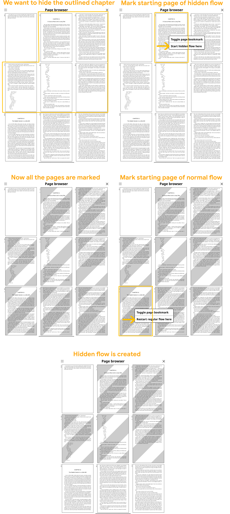
Como excluír unha sección creando un fluxo oculto:
- Vai á primeira páxina da sección que queres excluír
- Abre o Explorador de páxinas a través de:
MENÚ SUPERIOR / / Explorador de páxinas
- Fai unha pulsación longa na miniatura da páxina que queres que sexa o comezo da sección excluída e selecciona o elemento Comezar un fluxo oculto aquí no menú emerxente.
- Verás que as páxinas a partir da túa selección teñen agora un fondo raiado gris.
- Agora vai á última páxina da sección excluída. Podes navegar ata ela dende o Explorador de páxinas ou doutras formas, como co Mapa do libro, o Widget para follear, etc.
- Unha vez na última páxina da sección excluída, abre de novo o Explorador de páxinas (se non estás xa nel).
- Busca a última páxina da sección oculta e fai unha pulsación longa na páxina seguinte. Escolle Retomar o fluxo normal aquí no menú emerxente. Verás que o fondo das páxinas restantes volve á cor normal, o que indica o final do fluxo oculto e o comezo do fluxo normal.
Traballar coas seccións ocultas:
Cando creas unha sección de fluxo oculto como se describe arriba, KOReader compórtase como se arrancases esa sección dun libro de papel:
- Estas seccións de fluxo oculto omitiranse ao pasar páxinas. Por exemplo, supoñamos que creaches un fluxo oculto para o capítulo 10. Agora estás na última páxina do capítulo 9. Ao pasar a páxina, verás o capítulo 11.
- A numeración de páxinas continuará como se estas seccións de fluxo oculto non existisen.
- Estas seccións ocultas non se amosarán na Barra de progreso (pero le a explicación de abaixo) e non se terán en conta no cálculo do tempo de lectura. Porén, seguirán sendo visibles no Widget para follear.
- Seguir ligazóns directas ás páxinas incluídas nestas seccións de fluxo oculto seguirá funcionando. Ademais, aínda podes chegar a estas seccións dende o Índice, o Mapa do libro, o Explorador de páxinas e o Widget para follear.
Como dixemos máis arriba, os fluxos ocultos exclúense da Barra de progreso. Pero, se saltas a unha das seccións ocultas usando calquera dos métodos mencionados, a Barra de progreso pasa a ser temporalmente a barra de progreso desa sección oculta. Podes imaxinalo como se a barra de progreso fixese zoom nesa sección de fluxo oculto. Se saes desta sección oculta pasando a páxina ao seu final ou usando outras ferramentas de navegación, a Barra de progreso volverá amosar o libro enteiro (de novo sen que se vexan os fluxos ocultos personalizados).
Eliminar e limpar as seccións ocultas:
Podes eliminar seccións de fluxo oculto individuais dende o Explorador de páxinas do mesmo xeito que as creaches. Tamén podes quitalas todas á vez co elemento de menú:
/ Axustes / Regras personalizadas de maquetaxe / Borrar todas as marcas de páxinaMentres creas fluxos ocultos marcando páxinas como Comezar un fluxo oculto ou Retomar o fluxo normal, algunhas das marcas feitas anteriormente poden deixar de ter efecto. Por exemplo, se marcas Comezar un fluxo oculto unhas páxinas antes doutro Comezar un fluxo oculto existente, ese existente deixa de intervir. Estas marcas superpostas ou obsoletas lémbranse por motivos prácticos. Seguindo co exemplo anterior, se rematas ese segundo fluxo oculto antes do Comezar un fluxo oculto existente pero xa sen efecto, este volverá intervir. Podes borrar todas estas marcas inactivas se interfiren cos teus fluxos personalizados, ou unha vez que remates de crear os fluxos ocultos e esteas satisfeito co resultado:
/ Axustes / Regras personalizadas de maquetaxe / Desmarcar as páxinas marcadas inactivasDespois de aprender o básico de KOReader na sección anterior, probablemente agora queiras comezar a ler. Pero antes diso, por que non personalizar a aparencia do teu libro para que quede realmente ben?
Nesta sección faremos paso a paso unha "composición tipográfica dixital" para que o teu libro electrónico se pareza máis a un libro impreso. O obxectivo deste titorial é que te familiarices cos axustes da aparencia do texto de KOReader para que despois poidas cambialos ao teu gusto.
Estes son os pasos:
- Consegue unha fonte bonita: primeiro necesitamos para o noso libro unha fonte que se pareza máis á dun libro impreso (e que, ao mesmo tempo, se poida ler ben nunha pantalla de tinta electrónica). Se tes unha fonte favorita, podes usala. Se non, podes descargar unha das nosas suxestións de abaixo. Temos dúas fontes para dous estilos distintos: serif e sans-serif (se non sabes que significan, pulsa nas ligazóns para ver a diferenza):
- Transfire a fonte ao teu dispositivo: se non sabes como, consulta esta parte da guía e volve aquí despois de copiar a fonte ao dispositivo: Usar as túas propias fontes. Debes reiniciar KOReader despois de transferir a fonte para que a poida engadir á lista de fontes.
- Establece a túa nova fonte: abre o libro e vai ao menú que ves abaixo. A fonte que acabas de engadir debería aparecer ao comezo da lista de fontes. Selecciónaa:
MENÚ SUPERIOR / / Fonte
- Desactiva as Fontes incrustadas: agora temos que desactivar esta opción poñéndoa en apagado para que KOReader use a fonte que seleccionamos en vez da incluída no libro. Se a opción aparece en gris e non a podes cambiar, significa que este libro non ten fontes incrustadas, así que podes pasar ao seguinte paso:
MENÚ INFERIOR / / Fontes incrustadas
- Axusta o Tamaño da fonte: agora imos axustar o tamaño da fonte. Para Lusitana, 22.0 é un bo tamaño. Para Red Hat Text podes baixar ata 20.0. Porén, isto é unha preferencia persoal, así que podes poñer o que mellor che pareza. Establece o tamaño da fonte aquí:
- Axusta o Peso da fonte: se usas KOReader nun dispositivo de tinta electrónica, o texto verase menos negro que nas pantallas LCD/OLED. En xeral, as fontes non están deseñadas especificamente para pantallas de tinta electrónica, así que imos solucionalo escurecéndoa coa opción Peso da fonte. +1 é un bo punto de partida. Algunhas fontes finas poden precisar +2. Podes axustalo con máis precisión pulsando os tres puntos ao final da liña da opción:
MENÚ INFERIOR / / Peso da fonte
- Axusta o Espazado entre liñas: agora imos axustar o Espazado entre liñas, que determina o espazo vertical entre liñas. Este valor varía dunha fonte a outra segundo a xeometría dos caracteres. Para Lusitana podes poñelo en 135 %. Red Hat Text, cos seus caracteres máis abertos, pode permitirse un 120 % máis axustado. Establéceo aquí:
MENÚ INFERIOR /
 / Espazado entre liñas
/ Espazado entre liñas - Axusta as Marxes: a estas alturas o texto xa debería verse bastante ben. Agora imos axustar as marxes (o espazo en branco arredor do texto) como último retoque para rematar os axustes. Abre este menú e configura as opcións como ves abaixo:
MENÚ INFERIOR /

- Marxes E/D: pon o nivel 7
- Marxe superior: pon o nivel 6
- Marxe inferior: pon o nivel 6
Despois de todos estes axustes, o teu libro debería parecerse máis a un libro impreso. Se queres, podes seguir axustando estas opcións.
Entón, despois de todos estes axustes, quizais te preguntes: "Os meus outros libros tamén se verán así?" Non, non automaticamente, porque todos estes cambios só son válidos para o libro actual.
Noutras aplicacións de lectura, cando cambias unha opción, por exemplo a fonte usada nos libros, o cambio é global. Isto significa que, se cambias a fonte por defecto por Verdana, todos os libros que abras despois deste cambio (incluídos os que xa estás a ler) amosaranse con esta fonte Verdana.
O enfoque de KOReader é diferente. Gardamos os axustes da aparencia por libro. Isto dáche flexibilidade para cambiar os axustes do libro actual sen afectar aos demais. Por exemplo, se tes algúns libros de fantasía, podes cambiar a fonte por unha de aspecto medieval só nestes libros. Ou podes configurar algúns libros para que se abran en orientación horizontal ou no modo de dúas columnas.
Así é como funciona KOReader:
- As opcións de KOReader, como o tamaño da fonte, o interliñado, etc., teñen valores por defecto.
- Se abres un libro novo, KOReader usa estes valores por defecto para establecer a aparencia do libro.
- Cando fas cambios nun libro, como axustar o tamaño do texto, só afectan a ese libro concreto, porque os teus cambios non modifican os valores por defecto, polo que os libros que abras despois non se verán afectados.
- Pero tes a posibilidade de gardar os teus cambios como valores por defecto e, ao facelo, usaranse tamén nos libros que abras despois.
Vexámolo cun exemplo:
Durante este exercicio aumentamos o Peso da fonte do noso libro a +1.00. Agora abre o menú Peso da fonte e pulsa os tres puntos ao final da liña da opción Peso da fonte. Abrirase unha xanela de diálogo e verás isto: Valor por defecto: +0.00. Isto significa que, cando abras outro libro, o peso da fonte seguirá sendo 0 (valor por defecto), en vez de +1 como o configuramos antes.
Así que, para que unha opción sexa permanente, tes que establecela como valor por defecto. En KOReader hai dous métodos para establecer estes valores por defecto:
- Establecer opcións individuais como valores por defecto
- Establecer "todas as opcións" como valores por defecto dunha vez
En xeral, as opcións de KOReader pódense establecer como valores por defecto cunha pulsación longa. Bota unha ollada á captura de pantalla de abaixo:
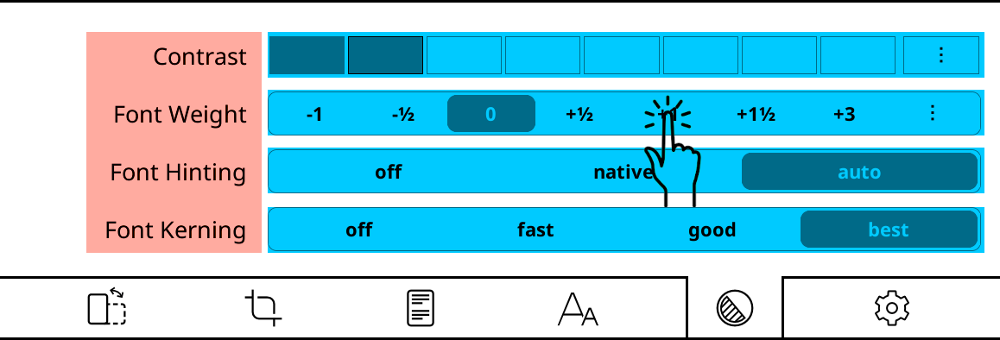
Os valores da dereita marcados en azul pódense manter pulsados para establecelos como valores por defecto. Supoñamos que queres facer o texto máis groso. Se pulsas +1 normalmente, só cambiará neste libro. Pero, se fas unha pulsación longa, verás este diálogo:

Se pulsas o botón Establecer como valor por defecto, este libro e os libros que abras no futuro terán +1 de peso da fonte.
Esta regra de "pulsación longa para establecer como valor por defecto" tamén funciona nos menús. Por exemplo, ao cambiar a fonte dende o menú superior:
- pulsación curta = cambia a fonte só para este libro
- pulsación longa = cambia a fonte para este libro e para todos os libros futuros
Os valores por defecto teñen unha estrela (★) no sistema de menús ou amósanse cun bordo negro arredor dos indicadores, como se ve abaixo:
Lembra que os libros que xa abriches manterán os seus propios axustes. Cambiar os valores por defecto non lles afecta.
Tamén tes a posibilidade de establecer todos os axustes do libro actual como valores por defecto dunha soa vez, en vez de un por un. Isto é útil se fas moitos cambios nun libro e queres que todos os teus libros se vexan así.
Podes gardar os axustes do documento actual como valores por defecto escollendo:
/ Axustes do documento / Gardar os axustes do documento como axustes por defectoIsto sobrescribirá todos os axustes cos axustes do documento actual. Así, todos os libros que abras despois de pulsar este elemento de menú veranse exactamente igual que o libro actual.
Pero que podemos facer cos libros que xa abrimos? Pois, se pulsaches o elemento de menú de arriba e estableciches os teus novos valores por defecto, agora podes aplicalos facilmente a calquera libro. Só tes que abrir o libro que queres cambiar, ir ao mesmo menú e pulsar este elemento:
/ Axustes do documento / Restablecer os axustes do documento aos valores por defectoBasicamente, isto indica a KOReader que sobrescriba os axustes do libro actual cos valores por defecto (que gardaches antes). Non te preocupes: isto só cambiará a aparencia do libro. A túa posición de lectura, os textos destacados, as notas e os marcadores conservaranse.
Ben, a estas alturas xa sabes:
- Como cambiar as opcións individuais do libro actual
- Como establecer os teus cambios como valores por defecto para que todos os libros os usen
Agora veremos outro caso de uso: imaxina que modificaches os valores por defecto ao teu gusto, de modo que cada vez que abres un libro novo xa se ve exactamente como queres. E hai pouco comezaches a ler unha serie de fantasía. Decidiches mergullarte nos libros, así que instalaches unha bonita fonte de aspecto medieval para esta serie (aquí tes unha boa se de verdade precisas algo así). Pero, como é unha fonte moi diferente, tamén tiveches que cambiar moitas opcións, como o interliñado, o peso da fonte, as marxes, etc.
Para cambiar todas estas opcións nestes libros de fantasía, segundo o que aprendemos, tes dúas opcións:
- Podes cambiar estas opcións en cada libro ao abrilo. Isto é moi pesado e non é unha boa solución.
- Podes cambiar as opcións dun libro e usar a función Gardar os axustes do documento como axustes por defecto. Pero isto afectará a todos os libros que abras despois, o que non queremos. Só queremos aplicar os axustes da fonte medieval a estes poucos libros medievais.
Por sorte, KOReader ten unha función chamada Perfís que nos permite gardar os axustes dun libro e aplicalos a outros libros (podes pensar nisto como copiar e pegar).
Volvendo agora ao noso escenario, despois de axustar todas as opcións do teu libro de fantasía medieval, vai aquí:
/ Perfís / Novo cos axustes actuais do documentoKOReader pedirache un nome para este perfil. Podes introducir algo como "Ficción medieval" e gardar. Deste xeito, creamos un perfil chamado Ficción medieval que inclúe os axustes do libro actual. Agora podes ver este perfil recén creado no menú Perfís. Para usalo, podes abrir calquera libro e executar este perfil, e aplicaranse todos os axustes gardados.
Podes executar este perfil dende:
- O menú Perfís mencionado arriba
- Cun xesto
- Dende un Menú rápido
Podes engadir as túas propias fontes a KOReader e usalas como fonte do documento, fonte da barra de estado e mesmo como fonte da interface de usuario (cun parche de usuario).
KOReader admite estes formatos de fonte habituais:
- TrueType: extensión .ttf
- OpenType: extensión .otf
- Web Open Font Format: extensións .woff e .woff2
Os ficheiros de fonte con estas extensións pódense copiar directamente no cartafol /koreader/fonts/ do teu dispositivo. Segundo o dispositivo, este procedemento de copia pode variar. Por exemplo:
- Nos dispositivos Kobo, a ruta completa é /mnt/onboard/.adds/koreader/fonts
- Nos dispositivos PocketBook, crea un cartafol para cada fonte no cartafol /applications/koreader/fonts/ e copia nel a túa fonte.
- Nos dispositivos baseados en Android, podes copiar as túas fontes a estes cartafoles:
- Internal storage/Fonts: cartafol xeral de fontes para todas as aplicacións de Android
- Internal storage/koreader/fonts: cartafol de fontes específico de KOReader.
- Na versión de escritorio, podes copiar as túas fontes na localización que podes ver dende o elemento de menú que se amosa abaixo: Abrir cartafol de fontes. Ademais, se activas a opción Activar fontes do sistema no mesmo menú, KOReader poderá acceder a todas as fontes dispoñibles no teu sistema operativo:
MENÚ SUPERIOR / / Fonte / Axustes de fontes / Abrir cartafol de fontes
KOReader admite subcartafoles dentro do cartafol Fonts, polo que podes copiar familias de fontes como cartafoles dentro del. Despois de copiar as fontes nos cartafoles mencionados, reinicia KOReader. As fontes novas deberían aparecer ao comezo da lista de fontes:
/ Fonte / Fonte / Axustes de fontes / Xerar documento de proba de fontesPodes cambiar a fonte dos elementos da barra de estado dende aquí:
/ Barra de estado / Configurar elementos / Fonte do elementoPodes usar calquera fonte instalada na barra de estado. Se precisas amosar moita información mantendo a lexibilidade, suxerímosche a fonte DINish Condensed. Podes descargala aquí e instalala seguindo o mesmo procedemento explicado arriba.
Se queres cambiar a fonte da interface de usuario de KOReader (menús e diálogos), podes facelo cun parche de usuario. Tes as instrucións aquí: Parche para cambiar a fonte da interface de usuario
Estas fontes vense ben nunha pantalla de tinta electrónica grazas ao seu maior contraste:
Suxestións serif |
Suxestións sans serif |
Na guía temos unha sección de Fontes especiais que pode ser útil se precisas unha fonte desenvolvida especificamente para mellorar a lexibilidade ou para persoas con dislexia ou TDAH.
Tamén che suxerimos consultar o proxecto WP Fonts. Ten a maior recompilación de fontes libres/de código aberto para KOReader, con correccións de erros e outras melloras, como correccións do kerning, activación de ligaduras e funcións OpenType que non estaban ben implementadas, etc.
Suxestión monoespazada
Se pensas usar a túa propia fonte monoespazada, probablemente xa tes unha favorita, así que aquí non che ofrecemos exemplos. Se o precisas, podes atopar e comparar moitas fontes monoespazadas en programmingfonts.org
Tamén podes descubrir máis fontes no sitio web de Google Fonts.
Nos documentos baseados en HTML/CSS, como os EPUB, os libros poden especificar que se usen fontes por familia en vez dun nome de fonte concreto. Estas familias poden ser Serif, Sans-Serif, Monospace, Cursive, Fantasy, Emoji, Fang Song e Math. Por exemplo, nun libro, o texto normal pode amosarse cunha fonte Sans-serif e os diálogos cunha Serif. KOReader normalmente usa a túa fonte por defecto para todas estas familias agás Monospace e Math (determinadas polo estilo dos nodos de texto, por exemplo 'font-family: serif'). Se queres que estas familias se vexan distintas, podes asignarlles fontes concretas aquí:
/ Fonte / Fontes da font-familyPara cambiar a fonte dunha familia no libro actual, só tes que pulsar o nome da fonte desexada. Se queres establecela para todos os teus libros, fai unha pulsación longa para establecela como valor por defecto (★). Se un libro abusa desta función de familias de fontes ata o punto de que case non se usa a túa fonte por defecto, podes desactivar a fonte desa familia para este libro desmarcando a asociación.

Se cambias de fonte a miúdo (por exemplo, monoespazada para libros de programación e serif para novelas), hai un truco que o fai máis doado que entrar no menú cada vez. Podes crear perfís para as túas fontes e para todos os axustes relacionados coa fonte, como o interliñado, o contraste, a negra, etc., e engadir estes perfís a un Menú rápido. Así, cun só xesto podes abrir o teu menú de selección de fontes e cambiar a fonte, como se amosa na imaxe de abaixo:

Consulta a sección MENÚ RÁPIDO E PERFÍS desta guía para aprender a facelo.
Se o teu libro inclúe partes con fontes monoespazadas (como nos libros de programación), o texto monoespazado pode verse desproporcionado aínda que tecnicamente teña o mesmo tamaño que o resto do libro. Isto débese ás distintas métricas das fontes. KOReader ten unha opción que che permite axustar o tamaño relativo da fonte monoespazada para corrixir esta diferenza:
/ Fonte / Axustes de fontes / Escalado de fonte monospaceAquí podes aumentar ou reducir o tamaño da fonte monoespazada axustando o seu escalado como porcentaxe do tamaño por defecto.
Se tes problemas cos pesos das fontes ao engadilas a KOReader, esta sección pode axudarche a comprender como funciona o procesamento de fontes de KOReader:
- Ao iniciarse, KOReader recompila as fontes dispoñibles lendo os seus metadatos/información da fonte incrustados e clasifícaas segundo a familia e o peso. KOReader tenta determinar a información da familia da fonte a partir dos metadatos incluídos na fonte, polo que os nomes das fontes non importan ao copialas ao dispositivo.
- Se tes máis dun ficheiro de fonte para unha familia, KOReader tentará encaixar as fontes nunha destas 4 categorías: Regular, Bold, Italic & BoldItalic. Un caso ideal sería así:
- Luciole-Regular.ttf asignada a Peso da fonte: 0 (Regular 400)
- Luciole-Bold.ttf asignada a Peso da fonte: +3 (Bold 700)
- Luciole-Regular-Italic.ttf
- Luciole-Bold-Italic.ttf
- Se a túa fonte só ten un ficheiro e non é Bold, KOReader asignaraa como (Regular 400) Peso da fonte: 0 e sintetizará el mesmo todos os demais pesos e variantes. Noutras palabras, KOReader simulará a cursiva e a negra para esta fonte. (Se o teu único ficheiro de fonte é unha fonte Bold, KOReader sintetizará o peso Regular a partir desta fonte negra.)
Se fas unha pulsación longa na etiqueta Peso da fonte do menú inferior, indicarache que clases de peso ofrece a túa fonte actual.
Se a túa fonte tamén ten outras variantes, a cousa pode volverse confusa. Supoñamos que copiaches unha familia de fontes ao dispositivo. E, ao iniciarse, KOReader leu estas variantes da fonte: Light, Thin, Normal, Medium, ExtraBlack, SemiBold, Bold, Black, nesta orde. Esperarías que se usase a variante Normal como fonte normal do documento (porque se chama Normal), pero KOReader usará a variante Light, porque é a primeira fonte da lista que non ten a marca de negra. E ignorará as variantes Thin, Normal e Medium, porque xa atopou unha fonte "non negra" para o documento.
E, de novo segundo esta lista, usarase ExtraBlack como fonte negra, porque é a primeira fonte da lista coa marca de negra. E KOReader ignorará as variantes SemiBold, Bold e Black, porque xa atopou a "negra" que buscaba.
Resumindo o anterior: copiamos a familia enteira e esperabamos que se escollesen as variantes Normal e Bold, pero KOReader usou as variantes Light e ExtraBlack. Isto ocorreu porque a orde na que as fontes chegan a KOReader non está baixo o noso control, así que "o primeiro que chega é o primeiro servido".
A solución é transferir só os ficheiros de fonte que queres que se usen, así:
- Garda só unha de Thin, Extra Light, Light, Normal, Medium: usarase como fonte regular (se a túa fonte Regular é demasiado fina, substitúea pola de peso Medium se a tes).
- Garda só unha de Semi Bold, Bold, Extra Bold, Black, Extra Black: usarase como fonte negra.
- Tamén podes engadir as variantes cursivas do mesmo peso (por exemplo, medium/medium-italic).
A función de axustes de estilo de KOReader permíteche modificar como KOReader renderiza o teu libro. Aquí non imos facer un curso completo de CSS. Só queremos amosarche o básico para que, cando vexas un axuste de estilo, polo menos teñas unha idea aproximada do que fai.
Podemos describir un documento EPUB como un ficheiro HTML + algunhas regras CSS. Estas regras CSS determinan como se amosarán nunha aplicación de lectura as distintas partes do libro (títulos, texto en negra, citas, etc.). Cos axustes de estilo podes cambiar como se renderizará o teu libro engadindo regras novas e/ou sobrescribindo as regras escritas polo editor e incrustadas no libro.
Vexamos isto cun exemplo de axuste de estilo:
img { width: 10px !important; height: 10px !important }
En linguaxe sinxela, esta regra di: "Ignora o seu tamaño orixinal e fai que todas as imaxes deste libro teñan 10 píxeles de largura e 10 píxeles de altura." Así, se engades este axuste de estilo a KOReader, todas as imaxes do teu libro amosaranse diminutas.
Agora expliquemos este axuste elemento por elemento:
- img: é un selector CSS que se aplica a todos os elementos img (imaxe) do libro.
- { width: 10px !important; height: 10px !important; }: é o bloque de declaracións. Contén os estilos que se aplicarán aos elementos img seleccionados.
- width: 10px !important;: esta primeira parte establece a largura dos elementos img seleccionados en 10 píxeles. A declaración !important é un interruptor de prioridade que garante que o teu valor de largura prevaleza sobre calquera outra declaración de width existente aplicada a estas imaxes.
- height: 10px !important;: esta parte establece a altura dos elementos img seleccionados en 10 píxeles. De novo, a declaración !important é un interruptor de prioridade que garante que o teu valor de altura prevaleza sobre calquera outra declaración de height existente aplicada a estas imaxes.
En resumo, esta regra CSS está pensada para establecer unha largura e unha altura fixas de 10 píxeles para todos os elementos img do teu libro, ignorando o seu estilo orixinal.
Estes son algúns axustes de estilo útiles que podes usar directamente ou modificar ao teu gusto. O seguinte apartado explica como usalos en KOReader.
- Engadir unha liña separadora enriba de cada título dun libro:
H1, H2, H3, H4 { border-top: 2px solid black; }
- Engadir algo de marxe enriba dos títulos:
H1, H2, H3, H4 { margin-top: 2em !important; }
- Ou, se o libro ten demasiada marxe enriba dos títulos, eliminala:
H1, H2, H3, H4 { margin-top: 0 !important; }
- Engadir un pequeno espazo entre parágrafos para que o texto sexa máis lexible:
p + p { margin-top: 0.5em !important; margin-bottom: 0.5em !important; }
- Desactivar todas as imaxes dun EPUB:
img { display: none !important; }
-
Facer as imaxes moi pequenas en vez de desactivalas:
img { width: 10px !important; height: 10px !important }
-
Facer máis ordenadas e lexibles as seccións de bloques de código nos libros de informática (aquí podes ver un exemplo):
pre,code { font-size: 0.6em !important; line-height: 1.8em !important; background-color: #eee !important; margin: 1em 0 !important; padding: 1em 0 !important; }
Ben, xa vimos que son os axustes de estilo. Pero como podemos usalos? En KOReader hai tres tipos de axustes de estilo:
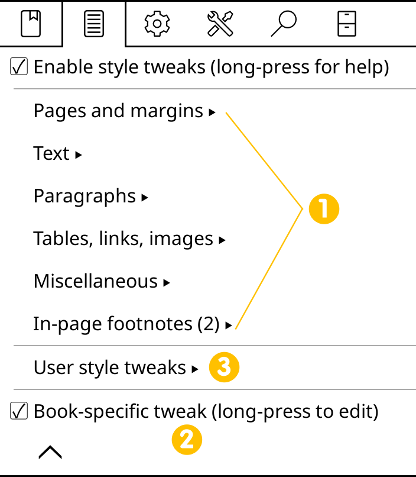
Este apartado é novo, e a captura de pantalla de arriba e de abaixo. Algo que engadir?
Estes axustes están incluídos en KOReader. Son os máis fáciles de usar, xa que só tes que activalos dende o menú. Non precisas escribir ningún código CSS:
/ Axustes de estiloEstán organizados en moitas categorías. Para aplicar un axuste só ao libro actual, marca a caixa de verificación. Se queres obter máis información sobre o axuste ou activalo para todos os libros, fai unha pulsación longa sobre o seu nome. Aparecerá un diálogo:

- Esta zona amosa o nome e a descrición do axuste
- Esta caixa amosa o código CSS do axuste. Podes pulsar nesta zona para copiar o código ao portapapeis. Despois podes pegar e modificar este código no teu Axuste específico do libro, como se explica no seguinte apartado.
- O botón Amosar na lista de accións permíteche activar/desactivar este axuste cun xesto ou engadilo a un Menú rápido. Consulta o apartado "Como usar os axustes de forma eficiente" máis abaixo para máis información.
- O botón Usar en todos os libros activa este axuste para todos os teus libros. Aparecerá unha estrela (★) xunto ao seu nome no menú, indicando que este axuste se aplicará a todos os libros. Podes desactivalo cos mesmos pasos.
Como podes adiviñar polo seu nome, este tipo de axustes só está activo no libro no que os creaches. Esta función é máis útil para probar os teus axustes ou se precisas corrixir algo no libro actual e sabes que non o necesitarás noutros libros. Despois de crear este tipo de axuste, se decides que tamén o necesitarás noutros libros (por exemplo, do mesmo editor), podes convertelo nun axuste de estilo de usuario, que explicaremos a continuación.
Para crear un axuste específico do libro, usa o editor integrado que podes atopar aquí:
/ Axustes de estilo / Axuste específico do libroEste grupo de axustes diferénciase dos anteriores na forma de crealos. Ademais, a diferenza do tipo anterior, non se limitan a un só libro: pódense aplicar globalmente a todos os teus libros.
O procedemento é aproximadamente así (explicarémolo en detalle):
- Crea o teu ficheiro de axuste de usuario
- Transfíreo ao teu dispositivo
- Activa o teu axuste dende o menú
1. Crear o ficheiro de axuste de usuario:
Un axuste de estilo de usuario é en realidade un ficheiro de texto normal coa extensión .css. Podes crear este ficheiro:
- No teu ordenador
- No teu dispositivo, se ten un editor de texto (como os dispositivos baseados en Android)
- No editor de texto integrado de KOReader, que podes atopar nos plugins
Podes copiar / pegar no teu ficheiro os exemplos que mencionamos arriba.
2. Transferir o ficheiro ao dispositivo:
Despois de crear o(s) ficheiro(s) coas túas regras CSS, gárdaos ou transfíreos ao cartafol styletweaks da túa instalación de KOReader. Dálles nomes descritivos aos ficheiros, porque o nome do ficheiro será o título do axuste no sistema de menús de KOReader. Podes usar guións baixos "_" nos nomes dos ficheiros: no menú trataranse como espazos. Tes que reiniciar KOReader despois de transferir os ficheiros para que os poida cargar.
2. Activar o axuste:
Despois do reinicio, abre un libro e vai a este menú:
/ Axustes de estilo / Axustes de estilo do usuarioAgora deberías ver o teu axuste na lista cunha caixa de verificación ao lado. Para aplicar o axuste só ao libro actual, marca a caixa. Se queres que este axuste estea activado en todos os libros, fai unha pulsación longa sobre o seu nome. Aparecerá un diálogo. Pulsa o elemento de menú Usar en todos os libros. Aparecerá unha estrela (★) xunto ao seu nome no menú, indicando que este axuste se aplicará a todos os libros. Podes desactivalo cos mesmos pasos. Mira abaixo un exemplo:

Na imaxe de arriba teño 3 ficheiros de axustes de estilo no cartafol styletweaks da miña instalación de KOReader. O primeiro está desactivado porque a caixa está baleira. O segundo está activado só para este libro, xa que a caixa está marcada pero non hai estrela. O terceiro está activado para todos os libros (★).
Quizais te decataches de que tamén hai unha icona de triángulo cara á dereita xunto ao primeiro axuste. Isto significa que este axuste se pode activar mediante xestos. Explicarase no seguinte apartado.
Ao crear os teus axustes de estilo de usuario, podes facer varios ficheiros de axustes, cada un modificando algunha parte do libro, como na imaxe de exemplo de arriba. Podes ter un ficheiro para os títulos e outros para modificar os parágrafos, as ligazóns, etc. Este sistema modular permíteche activar axustes segundo o documento.
Como dixemos arriba, podes activar/desactivar os axustes de estilo de usuario dende esta localización do menú:
/ Axustes de estilo / Axustes de estilo do usuarioAdemais, temos formas máis doadas de activar/desactivar os teus axustes de estilo que ir ao menú cada vez.
1. Podes asignar un xesto a un axuste
Para iso, primeiro temos que engadir o noso axuste de estilo de usuario á lista de accións de xestos:
- Vai ao menú de axustes de estilo de usuario e fai unha pulsación longa sobre o teu axuste de estilo
- No diálogo, pulsa o botón Amosar na lista de accións
- Aparecerá unha icona de triángulo cara á dereita xunto ao teu axuste de estilo no menú
Podes velo na imaxe de exemplo de arriba, xunto ao axuste de estilo Axustar as marxes. Agora este axuste de estilo está engadido á lista de accións. Podes atopalo na categoría Xestor de xestos > Documentos redistribuíbles. Estará ao final da lista.
2. Podes engadir un axuste ao teu Menú rápido
Para engadir un axuste ao teu Menú rápido, primeiro tes que engadilo á lista de accións, como se describe no apartado anterior. Despois podes seguir as instrucións da sección Menú rápido desta guía.
Mesmo podes combinar os dous métodos e crear un Menú rápido especial para os teus axustes de estilo e despois asignalo a un xesto. Deste xeito, cun simple xesto podes acceder a todos os teus axustes de estilo e activalos segundo os precises.
Ten en conta que, nalgúns libros, os títulos poden non estar en elementos <H1> ou <H2>, senón en algo como <p class="tit123">. Podes descubrir que selectores se usan para unha parte do texto consultando o código fonte. Para iso, selecciona o texto arredor do elemento que che interesa e escolle Ver HTML no diálogo. No exemplo de arriba, o teu axuste de estilo quedaría así:
P.tit123 { border-top: 2px solid black; }
en vez de así:
H1 { border-top: 2px solid black; }
KOReader ofréceche opcións para interactuar co teu libro como farías cun libro real. Moitas opcións da xanela de marcadores pódense cambiar aquí:
/ Axustes / MarcadoresMARCADORES:
Podes engadir (e quitar) un marcador pulsando a esquina superior dereita. É o equivalente a dobrar a esquina dunha páxina nun libro real, e amósase unha icona semellante ao activalo.
TEXTOS DESTACADOS:
Podes destacar texto en 4 estilos distintos. Na imaxe de abaixo podes ver un parágrafo normal seguido dos distintos estilos de destacado: Destacar (con fondo gris), Subliñar, Riscado e Inverter.

Podes usar todos estes estilos á vez, como se fosen marcadores fluorescentes de distintas cores. Ou podes escoller o teu estilo favorito e establecelo como valor por defecto neste menú cunha pulsación longa:
/ Estilo do destacadoAdemais, se tes un dispositivo con pantalla en cor, podes destacar texto en distintas cores:
/ Textos destacados / Cor do destacado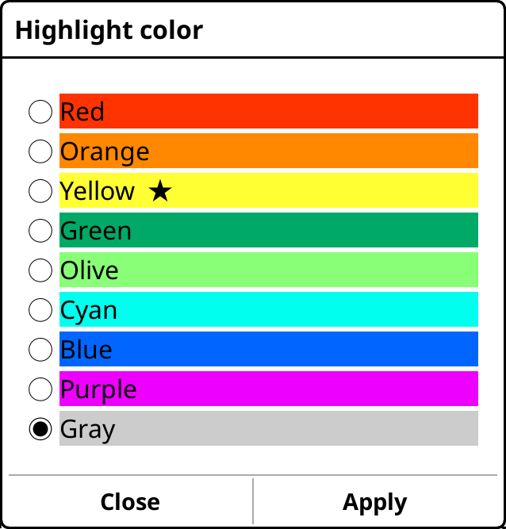
Algúns consellos para os textos destacados en cor:
- Podes cambiar a cor dun texto destacado existente pulsándoo e escollendo Cor no menú emerxente.
- Podes combinar as cores con distintos estilos de destacado, como Subliñar e Riscado, para crear un potente sistema de destacado. Por exemplo, podes usar un estilo de riscado vermello para as eliminacións ou un estilo de subliñado laranxa para os puntos importantes, etc.
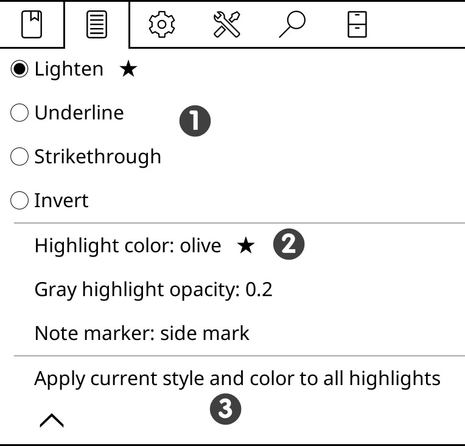
- No menú de textos destacados podes facer unha pulsación longa sobre un tipo de destacado para establecelo como valor por defecto (★)
- Despois de seleccionar unha cor, podes facer unha pulsación longa sobre o nome da cor neste menú para establecela como valor por defecto (★)
- Podes pulsar a opción Aplicar o estilo e a cor actuais a todos os textos destacados para que todos os textos destacados do libro actual sexan iguais. Ten coidado: non se pode desfacer!
NOTAS:
Tamén podes engadir notas aos teus textos destacados. Só tes que pulsar un texto destacado e escoller Engadir nota no menú emerxente. Tamén podes escoller un Marcador de nota que indica que textos destacados conteñen unha nota. Hai tres estilos: Subliñar, Liña lateral e Marca lateral (que é a icona do lapis que se ve na parte dereita da imaxe de abaixo):

Para activar esta función e escoller un estilo de Marcador de nota, vai a:
/ Estilo do destacado / Marcador de notaDespois de destacar unha parte do documento, podes pulsar no texto destacado para ver o menú de destacado. Dende este menú podes chegar a outro menú ampliado pulsando o botón ... (tres puntos), como se amosa abaixo:

Con este menú ampliado podes:
- Estender o texto destacado para incluír máis texto
- Copiar o texto ao portapapeis para pegalo noutro lugar
- Buscar o texto na Wikipedia
- Consultar o texto nun dicionario instalado
- Traducir o texto usando o servizo Google Translate
- Ver HTML: ver o código fonte da sección destacada, útil para escribir un axuste de estilo
- Xerar código QR co texto destacado, para escanealo dende outro dispositivo cunha cámara e unha aplicación lectora de códigos QR
- Buscar o texto no libro
KOReader ten dous modos de destacado para distintos casos de uso:
O modo normal é semellante a seleccionar texto co dedo nun teléfono/tableta e é máis axeitado se os teus textos destacados son máis curtos ca unha páxina.
- Fai unha pulsación longa sobre a palabra inicial
- Move o dedo ata o final da pasaxe
- Solta o dedo
Cando chegues ao límite da páxina, KOReader pasará a páxina por ti para que poidas seguir destacando (só en documentos EPUB/HTML). Podes desactivar esta función dende:
/ Pulsacións e xestos / Pulsación longa no texto / Desprazar automaticamente cando a selección chega a unha esquina / Xestor de xestos / "CALQUERA XESTO" / Dispositivo / Activar/desactivar┆Ignorar as pulsacións longas nas esquinasO modo de seleccionar e destacar é máis axeitado para destacar pasaxes longas que cruzan os límites da páxina. Tamén pode funcionar mellor se tes problemas de sensibilidade da pantalla táctil ou dificultades de control motor nas mans, porque neste modo de destacado non tes que arrastrar o dedo pola pantalla.
/ Pulsacións e xestos / Pulsación longa no texto / Buscar no dicionario ao seleccionar unha soa palabraComo destacar:
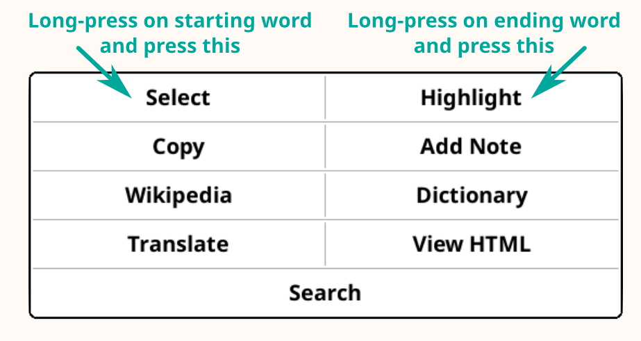
- Fai unha pulsación longa (ou arrastra, se tes activada a consulta no dicionario como se describiu arriba) sobre a palabra inicial; aparecerá un menú emerxente.
- Pulsa Seleccionar: agora estás no modo de destacado. Cando estás neste modo, verás un indicador na esquina superior esquerda da pantalla (que podes pulsar para obter máis información). Podes cancelar o destacado pulsando de novo o comezo do texto destacado. Neste modo podes pasar páxinas con pulsacións/deslizamentos e navegar libremente polo documento (índice, follear, etc.).
- Fai unha pulsación longa (ou arrastra, se tes activada a consulta no dicionario como se describiu arriba) sobre a palabra final do destacado; o menú aparecerá de novo.
- Esta vez pulsa Destacar para rematar de destacar a pasaxe.
Este diálogo normalmente ábrese no centro da pantalla. Se queres que se abra máis preto do lugar do destacado, podes cambiar aquí a opción centro por posición do xesto (situada na segunda páxina deste menú):
/ Pulsacións e xestos / Pulsación longa no texto / Posición do diálogo de destacado / Pulsacións e xestos / Pulsación longa no texto / Seleccionar e destacar / Estilo do destacadoCando destacas, KOReader tenta incluír os signos de puntuación relacionados arredor da selección. Por exemplo, se destacas dende a primeira ata a última palabra dunha oración, KOReader incluirá automaticamente no destacado os signos de puntuación dos dous extremos da oración.
Pero, se comezas a destacar dende o medio dunha oración, o punto final non se incluirá, porque KOReader supón que queres facer un destacado parcial. Así que, se queres que se engadan os signos de puntuación ao destacado, asegúrate de seleccionar a oración completa. Tamén podes engadir estes signos máis tarde facendo unha pulsación longa nos botóns de edición do destacado.
Cando pulsas un texto xa destacado (sen nota), verás este menú emerxente. Os elementos Eliminar e Engadir nota explícanse por si sós. Os elementos do menú da fila inferior úsanse para ampliar ou reducir o texto destacado.

Cando pulsas un texto xa destacado que ten unha nota, verás este menú emerxente. Pulsa Editar o destacado para abrir o menú de arriba, onde podes editar tanto o texto destacado como a nota que contén:

Na páxina de Marcadores podes filtrar a vista para ver só un tipo de marcador pulsando a icona do menú ( ). Tamén podes filtrar polo estilo de destacado:

Ademais de engadir unha nota, KOReader tamén che permite editar o propio texto destacado que se amosa na túa lista de marcadores. Nalgunhas situacións isto pode ser máis útil que engadir unha nota a un texto destacado. Por exemplo, imaxina que estás a revisar un texto. Queres destacar unha oración que contén moitas datas e unha delas é incorrecta. Se engades unha nota para sinalar este erro, tes que especificar na nota cal é a incorrecta. Pero, se editas o texto do destacado, podes escribir directamente "(hai que comprobar esta data)" xunto á data problemática.
Ten en conta que esta edición non cambia o contido do libro nin a pasaxe destacada na páxina. Seguirás vendo a mesma oración destacada no lector. A túa edición verase na lista de marcadores. E, cando exportes os textos destacados máis tarde, o texto editado será o que se exporte.
Para editar o texto dun destacado, podes:
- Pulsar o texto destacado
- Pulsar Detalles no menú emerxente
- Pulsar Editar texto no diálogo de detalles
Tamén podes facelo dende a xanela de Marcadores:
- Vai á lista de marcadores a través do menú ou dun xesto
- Fai unha pulsación longa sobre o texto destacado que queres editar
- Pulsa Editar texto no menú
- Cambia o texto no diálogo e pulsa o botón Gardar
Se queres reverter un texto editado ao destacado orixinal, segue os pasos de arriba e, no paso 3, en vez de Editar texto, pulsa o botón Restablecer o texto.
Normalmente, cando abres a lista de marcadores, só se amosa o contido dos textos destacados. Se engadiches unha nota a un texto destacado, na lista de marcadores só verás unha icona de lapis. Podes facer unha pulsación longa sobre un elemento desta lista para amosar (e editar) a nota engadida. Se tamén queres ver o texto da nota na lista de marcadores, podes configuralo aquí:
/ Axustes / Marcadores / Amosar nos elementosPodes escoller amosar:
- Só o texto destacado (comportamento por defecto)
- Tanto o texto destacado como a nota
- A nota se a hai; se non, o texto destacado
/ Axustes / Marcadores / Número máximo de liñas por marcadorDespois de rematar un libro, podes movelo a un cartafol concreto para arquivalo ou procesalo. Activa o plugin Mover ao arquivo e define o cartafol de destino nos axustes do plugin (Definir o cartafol do arquivo). Despois diso, podes mover un libro ao cartafol do arquivo usando:
- O menú do plugin Mover ao arquivo
- Cun xesto ou
- Cunha entrada do Menú rápido
KOReader ofrece distintas formas de exportar os teus textos destacados e notas dende o dispositivo de lectura:
Este versátil plugin pode exportar os teus textos destacados a ficheiros locais ou a servizos en liña.
Exportación local
Podes exportar os teus textos destacados ao dispositivo nestes formatos de ficheiro:
- Texto (.txt)
- HTML (.html)
- Markdown (.md)
- Recortes de Kindle (.txt)
- JSON (.json)
Podes escoller os formatos de exportación que prefiras en:
/ Exportar os textos destacados / Escoller formatos e servizosPodes ver a localización da exportación (e tamén cambiala se queres):
/ Exportar os textos destacados / Escoller o cartafol de exportaciónServizos en liña
Tamén podes exportar a estes servizos a través da rede:
- Joplin: unha aplicación para tomar notas
- Readwise: unha aplicación en liña de marcadores/textos destacados
- Memos: un centro de notas de código aberto autoaloxado
- Flomo: un servizo en liña para tomar notas
- XMNote: un organizador de marcadores para Android en chinés
Podes atopar instrucións de configuración detalladas para estes servizos na nosa páxina da wiki relacionada.
Despois de seleccionar os formatos, podes exportar as notas do libro actual ou de todos os libros da túa biblioteca dende o mesmo menú do plugin.
Se queres exportar só algúns dos libros da túa biblioteca, podes facelo dende o Explorador de ficheiros:
- Selecciona varios libros no Explorador de ficheiros
- Pulsa o botón do menú (amosado como unha marca de verificación) na esquina superior dereita
- Selecciona Exportar os textos destacados no menú que se amosa
Tamén podes exportar só os estilos de destacado escollidos: destacar, subliñar, riscado e inverter. Normalmente KOReader expórtaos todos. Podes escoller en:
/ Exportar os textos destacados / Escoller os estilos de destacadoPodes personalizar o nome do ficheiro das exportacións dende o menú do plugin (Configurar nome de ficheiro da exportación) para incluír información de data/hora e outros datos útiles.
KoHighlights é un programa externo que podes instalar no teu ordenador. Pode acceder ás notas e aos textos destacados dos teus libros cando conectas o lector ao ordenador. Consulta a páxina do proxecto en GitHub para descargalo e ver as instrucións.
Calibre é un programa externo que podes instalar no teu ordenador. Podes importar textos destacados á túa base de datos de Calibre co seu plugin KOReader Sync. Podes instalar ese plugin dende a propia aplicación Calibre. Consulta a páxina do proxecto para descargalo e ver as instrucións.
KOReader ofréceche distintas formas de ler no teu dispositivo de pantalla pequena un documento PDF/DJVU optimizado para tamaños de páxina máis grandes (xeralmente A4 ou carta):
1. Podes activar a Redistribución
A redistribución tenta extraer a parte de texto do teu documento (se está dispoñible) e formatala nunha única columna. Os resultados adoitan ser satisfactorios. Tamén podes establecelo como valor por defecto mantendo pulsado sobre el.
2. Podes activar Zoom ao contido
 /
/ 
Con esta opción, KOReader tenta recortar as marxes do documento para que o texto se vexa máis grande na pantalla. No mesmo menú podes poñer axustar en largura, o que tentará axustar só a largura da páxina en vez da páxina enteira, polo que o texto verase máis grande.
3. Podes probar a usar o dispositivo en orientación horizontal
Isto fará a pantalla máis ancha, polo que o documento pode verse o suficientemente grande para ler comodamente.

4. Podes ampliar ao 100 % do tamaño e, en cambio, desprazar a pantalla para ler as distintas partes
Isto é especialmente útil cos cómics. Primeiro activa o modo columna neste elemento de menú:
/ Despois selecciona no mesmo menú unha dirección de fluxo axeitada para o teu documento:

- Por exemplo, se estás a ler un artigo con dúas columnas, desprazaraste cara abaixo ata o final da páxina lendo a columna esquerda e despois irás á parte superior dereita para seguir lendo a columna dereita:

- Ou, se estás a ler un cómic, quererás ir “dereita / abaixo á esquerda / dereita” en zigzag:
- Nun cómic xaponés (orde das viñetas de dereita a esquerda), isto pode ser ao revés:

Neste modo tamén podes axustar a superposición horizontal/vertical e o número de columnas no mesmo menú para que o texto encaixe mellor na pantalla. Proba con liberdade estas opcións.

A opción Contraste axusta os niveis de negro do documento. Ten en conta que o mesmo valor de contraste se aplica tanto ao texto como ás imaxes do documento. Se o pos moi alto, as imaxes poden quedar demasiado escuras.
Quitar filigrana elimina as marcas de auga do documento renderizado. Tamén se pode usar para eliminar fondos grises. Esta función pode converter un documento en escala de grises ou en cor a branco e negro para producir máis contraste e facilitar a lectura.
Calidade de renderización (só activa no modo de redistribución) establece a calidade do procesamento e da saída da extracción de texto e imaxes. alta é máis agradable, pero pode ser moito máis lenta (varios segundos por cambio de páxina) que a por defecto, segundo o documento. Se os teus ficheiros PDF/DJVU van lentos, esta é a primeira opción que debes revisar.

Lingua do documento establece a lingua que usará o motor de OCR.
OCR forzado, como o seu nome indica, forza o uso de OCR aínda que o documento teña unha capa de texto.
Dirección da escritura (só activo no modo de redistribución) establece a dirección do documento orixinal. Ponla en RTL para linguas como o árabe e o hebreo.
Columnas do documento (só activo no modo de redistribución) establece o número de columnas de texto do documento orixinal.

A función Endereitar automaticamente pode endereitar as páxinas dun documento problemático, por exemplo as páxinas dun PDF escaneadas en ángulo. Está dispoñible en documentos PDF, DJVU e CBZ/CBT e en ficheiros de imaxe. Para activala, escolle o ángulo de inclinación máximo que KOReader tentará corrixir. Se non o corrixe, quizais teñas que escoller un ángulo maior. Ten en conta que esta función pode facer máis lento o teu lector, segundo varios factores.
Para gardar os teus textos destacados, podes usar a función Exportar os textos destacados de KOReader, explicada nunha sección anterior.
Se estás a destacar texto nun documento PDF, KOReader tamén pode gardar os textos destacados directamente no ficheiro PDF. Isto pode ser útil en certas situacións porque, con este método, os textos destacados pasan a formar parte do ficheiro PDF. Isto significa que podes velos noutras aplicacións ou plataformas sen instalar KOReader. Por exemplo, se lle envías a outra persoa un ficheiro con textos destacados, non ten que instalar KOReader para velos. Só tes que enviar o ficheiro PDF cos textos destacados gardados nel e poderá abrilo e velos cun lector de PDF compatible.
Esta función debería funcionar en todos os lectores de PDF. Probamos e confirmamos estes: Adobe Acrobat Reader, navegador Chrome, Deepin Reader, Evince, navegador Firefox, Foxit Reader, Ghostscript, LibreOffice, Moon Reader, MuPDF, Okular, Xpdf e Zathura.
/ Sincronización do progreso / Método de comparación de documentosComo destacar texto para usalo máis tarde pode supoñer un esforzo considerable, se pensas usar esta función deberías entender como funciona para evitar situacións frustrantes.
RESUMO RÁPIDO: se queres poder eliminar ou exportar máis tarde os textos destacados do PDF, tes que copiar o cartafol .sdr asociado ao libro cando fagas unha copia de seguranza ou copies o libro a outros dispositivos. Sen este cartafol, KOReader aínda pode amosar os textos destacados gardados, pero non pode saber onde están no ficheiro, polo que non pode modificalos. Continúa lendo para máis información sobre isto.
Como funcionan os textos destacados normais en KOReader
Cando destacas texto en KOReader, tanto se o documento é un EPUB coma un PDF, ese destacado escríbese nun ficheiro de axustes. Por exemplo, se estás a ler Alice in Wonderland.epub, terás un cartafol chamado Alice in Wonderland.sdr no mesmo cartafol que o libro. Os teus textos destacados gardaranse nun ficheiro dentro deste cartafol .sdr. Isto significa que, se eliminas este cartafol .sdr asociado ao teu libro, perderás os textos destacados.
Como funcionan os textos destacados de PDF en KOReader
A función de textos destacados de PDF funciona un pouco distinto do descrito arriba. Como mencionamos antes, ao gardar os textos destacados no PDF, escríbense directamente no ficheiro PDF, o que significa que pasan a formar parte do propio ficheiro. Por iso podes enviarlle este PDF a outra persoa e poderá ver os textos destacados cun lector de PDF compatible. Non necesitará o teu cartafol .sdr, que contén un rexistro dos textos destacados, porque agora estes están incrustados directamente no ficheiro PDF.
Expliquemos cun exemplo o problema que pode xurdir ao usar esta función. Imaxina que estás a ler un libro en PDF no teu lector electrónico con KOReader:
- Estás a destacar texto e a opción Gardar os textos destacados no PDF está activada, así que, a medida que destacas, KOReader garda os textos destacados no ficheiro PDF.
- Queres seguir lendo o libro no teu teléfono con KOReader, así que copias este ficheiro PDF do lector electrónico ao teléfono (pero non copias o cartafol .sdr, só o ficheiro PDF).
- Cando abres o libro no teléfono con KOReader, ves que os textos destacados seguen aí.
Agora a situación nos dous dispositivos parece idéntica. Tanto o KOReader do lector electrónico coma o do teléfono amosan o ficheiro PDF cos mesmos textos destacados. Pero só parece idéntica: en realidade hai unha gran diferenza.
O KOReader do lector electrónico sabe que textos destacados deste ficheiro PDF fixo KOReader, porque ten o cartafol .sdr. Pero o KOReader do teléfono non o sabe: só ten o ficheiro PDF.
A diferenza aparece cando tentas eliminar ou exportar os textos destacados do PDF. O lector electrónico pode tanto eliminar coma exportar estes textos destacados. Pero o KOReader do teléfono non pode porque, como dixemos, non ten o cartafol .sdr do libro, así que, dende o seu punto de vista, os textos destacados parecen parte do libro orixinal.
En resumo, se queres poder eliminar ou exportar máis tarde os textos destacados do PDF, tes que copiar o cartafol .sdr asociado ao libro cando fagas unha copia de seguranza ou copies o libro a outros dispositivos.
KOReader pode importar textos destacados de ficheiros PDF marcados con outras aplicacións de PDF. Non podemos dar unha lista de aplicacións compatibles, pero a función de importación adoita funcionar cos lectores de PDF populares.
Para importar os textos destacados:
- Abre o ficheiro PDF con KOReader
- Abre o diálogo de Marcadores dende aquí:
MENÚ SUPERIOR / / Marcadores
- Pulsa o botón na esquina superior esquerda.
- No diálogo que se abre, escolle Importar anotacións incluídas. Os teus textos destacados engadiranse á lista de Marcadores.
Despois do proceso de importación, os textos destacados do PDF converteranse en textos destacados normais de KOReader. Isto significa que podes:
- Engadirlles notas
- Cambiar o seu estilo e cor
- Eliminalos (consulta a nota de abaixo)
- Exportalos en varios formatos
Como funciona a eliminación: ao importar textos destacados, KOReader non modifica os textos destacados orixinais do PDF, senón que engade os textos destacados importados como unha capa por riba dos orixinais. Así, se eliminas un texto destacado importado, só se elimina esta capa engadida. Os teus textos destacados orixinais non se eliminan do ficheiro PDF. Podes abrir este PDF con outro lector e seguirás vendo os textos destacados orixinais.
/ Textos destacados / Gardar os textos destacados no PDFO OCR (recoñecemento óptico de caracteres) é o proceso de extraer texto de imaxes. No contexto de KOReader, úsase xeralmente para extraer texto das páxinas de libros escaneadas en ficheiros PDF. KOReader usa para esta tarefa o motor de OCR de código aberto Tesseract.
Para usar esta función tes que:
- Instalar os datos de lingua de Tesseract no teu KOReader
- Engadir as linguas recén instaladas ao ficheiro de configuración koreader/defaults.lua (só é necesario se a túa lingua non é o inglés nin o chinés)
Os cómics xeralmente precisan refrescos de páxina máis frecuentes ca o contido de só texto. Para o texto normal, podes poñer o intervalo de refresco da páxina en números altos sen problema. Pero as imaxes poden deixar máis restos e causar pantasmas, sobre todo segundo o panel do teu lector electrónico.
KOReader permíteche asignar calquera xesto para cambiar entre distintas frecuencias de refresco. Por exemplo, podes configurar deslizar cara arriba no bordo esquerdo para o refresco cada páxina ao ler cómics e deslizar cara abaixo no bordo esquerdo para o refresco cada x páxinas nos libros só de texto. Así, cando abras un cómic, podes cambiar a un refresco máis frecuente cunha simple pulsación ou deslizamento (ou viceversa).
Esta acción está en:
/ Pulsacións e xestos / Xestor de xestos / "CALQUERA XESTO" / Pantalla e iluminación / Taxa de refresco completoEsta función facilita a lectura de cómics en pantallas pequenas. Podes activala mentres les un documento PDF, DJVU, CBZ ou CBT a través de:
/ Zoom de viñeta (manga/cómic)Cando esta opción está activada, KOReader tenta atopar os límites das viñetas rectangulares na pantalla. Se fas unha pulsación longa sobre unha viñeta, KOReader amplíaa e amosa só esa viñeta.
Como podes adiviñar, esta función funciona mellor cos cómics que teñen límites de viñeta claros. Ademais, debido a este problema dos límites, neste modo non hai paso de páxina para saltar á seguinte viñeta. Tes que pechar a viñeta ampliada e facer unha pulsación longa na seguinte. Para iso, só tes que deslizar cara abaixo sobre a viñeta ampliada. Tamén podes usar calquera xesto de deslizamento múltiple (calquera combinación de arriba, abaixo, esquerda e dereita) para saír desta vista.
Podes ver o procedemento abaixo:
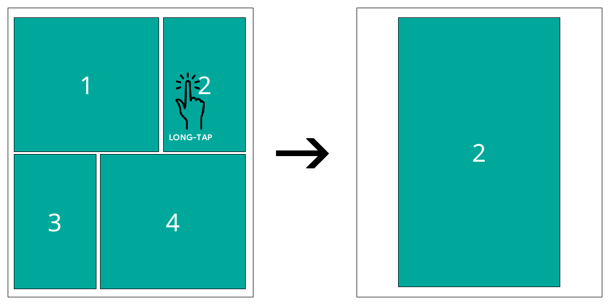
Se queres usar esta función con outros tipos de ficheiro, como EPUB, FB2, HTML ou ficheiros de imaxe, debes abrir o ficheiro cun motor distinto: no Explorador de ficheiros, fai unha pulsación longa sobre o nome do ficheiro, pulsa Abrir con… e selecciona MuPDF.
Cando chegas á última páxina dun libro, KOReader amósache un diálogo. Neste diálogo hai unha acción Abrir o seguinte ficheiro que abrirá o seguinte ficheiro do mesmo cartafol que o libro actual. Así, podes poñer as túas series en cartafoles separados e lelas unha tras outra sen volver ao Explorador de ficheiros.

Ao abrir este seguinte ficheiro, KOReader omite os ficheiros que marcaches como rematados. Esta función é útil, por exemplo, cando tes un cartafol de ficheiros de manga e xa liches algúns deles. Podes marcar un ficheiro como rematado dende o diálogo de fin do libro amosado arriba. Tamén podes marcalo dende o Explorador de ficheiros facendo unha pulsación longa sobre o ficheiro. Despois de copialos ao dispositivo, podes:
- Abrir o Explorador de ficheiros en KOReader
- Facer unha pulsación longa sobre os que xa remataches e pulsar Marcar como rematado
Agora podes ler todos os ficheiros só con pulsar Abrir o seguinte ficheiro ao final do libro. KOReader omitirá os que xa liches.
Se che gusta ler manga no teu dispositivo de tinta electrónica, hai algúns consellos que poden mellorar a túa experiencia. Preparar os teus propios ficheiros de manga é a mellor solución se non estás satisfeito con como se ven os cómics no teu dispositivo.
Os tipos de ficheiro como MOBI e EPUB non son axeitados para xestionar contido principalmente de imaxes (por exemplo, manga/cómics). A compatibilidade con MOBI en KOReader é mínima ou inexistente, e as prioridades de renderizado de texto do EPUB poden causar problemas ao amosar imaxes a páxina completa. Para máis detalles técnicos, visita esta incidencia de GitHub.
A mellor opción é crear un ficheiro CBZ, que funciona mellor en KOReader. Un ficheiro coa extensión .cbz é un ficheiro zip (sen compresión) que é unha colección de imaxes. Garda varias imaxes, normalmente ficheiros .png ou .jpeg, organizadas nas páxinas do cómic. KOReader tamén pode abrir ficheiros CBT, que son semellantes aos ficheiros CBZ, pero usan o formato de arquivo TAR.
A forma máis doada de converter un manga a CBZ é obter o manga como imaxes de distintos sitios web e despois convertelas con Kindle Comic Converter. Ten algunhas opcións útiles, como xirar automaticamente as dobres páxinas a horizontal e aplicar tramado, para que os degradados renderizados en tinta electrónica se vexan suaves e sen capas serradas.
Os mellores resultados conséguense redimensionando as imaxes exactamente ao tamaño da pantalla do teu lector electrónico. Un CBZ específico para a pantalla, feito para o tamaño exacto da pantalla do dispositivo, evita reescalar durante a lectura. KOReader reduce as imaxes ao tamaño da pantalla mentres les, pero isto non se recomenda porque KOReader engade un paso de tramado antes de escalar, o que provoca perda de calidade.
Pero, se queres usar o teu CBZ feito a man en máis dun dispositivo ou queres conservar unha alta resolución pensando no futuro, a mellor opción pode ser facer o CBZ para o dispositivo de maior resolución. Ou escoller unha resolución "alta" arbitraria, se cadra unha que coincida coa orixe. 300 PPI ou máis (ata 450 ou mesmo 600), salvo, claro, que a orixe sexa inferior. Se supoñemos un tamaño de pantalla de 8", 1500×2000 é unha boa resolución obxectivo. Para imaxes máis grandes, deberías probalas no teu dispositivo e ver se as pode manexar. Sobre todo os Kindle antigos con pouca memoria poden ter problemas con tamaños como 3000×4000, por exemplo. Se automatizas o proceso, pode pagar a pena crear dúas versións, unha de menor e outra de maior calidade (por exemplo, a 200/400 ou 300/600 DPI).
/ Pulsacións e xestos / Paso de páxina / Inverter as pulsacións e os deslizamentos de paso de páxina / botónsVelaquí un procedemento de exemplo para procesar un ficheiro de manga:
- Descarga Kindle Comic Converter (KCC) dende https://github.com/ciromattia/kcc
- Descarga o teu manga da fonte que prefiras (por exemplo, HakuNeko)
- Descomprime o ficheiro de manga. Agora deberías ter un cartafol que só conteña imaxes (ou subcartafoles con imaxes, sen arquivos comprimidos)
- Procesa este cartafol con KCC. Cada cartafol producirá un único ficheiro CBZ, así que, se queres facer varios volumes á vez, selecciona varios cartafoles á vez
Algunhas opcións útiles de KCC:
Spread splitter: esta función detecta as dobres páxinas e permíteche xiralas ou cortalas en dúas.
Upscaling: amplía as imaxes que son máis pequenas que a resolución obxectivo.
Debido á tecnoloxía das pantallas de tinta electrónica en cor, é posible ver artefactos de cor semellantes a un arco da vella ao ler cómics/manga en branco e negro con sombreados finos ou tramas de puntos. Se tes este problema, hai un plugin de KOReader chamado Derainbowify que o soluciona. Podes ver a información detallada e as instrucións de instalación na páxina de GitHub deste plugin.
Se queres gozar do teu manga dun xeito máis inmersivo, asegúrate de seleccionar en KCC exactamente a mesma resolución que a da pantalla do teu dispositivo ao crear o ficheiro CBZ. Tamén podes ocultar a barra de progreso inferior mentres les o manga en KOReader. Así terás unha vista inmersiva a pantalla completa do teu manga, sen obstáculos.
Despois de usar KCC para crear un ficheiro CBZ, podes aplicar un tramado adicional ás imaxes. Deste xeito, os degradados renderizados en tinta electrónica veranse suaves, sen capas serradas. Este paso producirá volumes de manga axustados finamente que se ven mellor en KOReader.
Podes usar ImageMagick para procesar as imaxes. ImageMagick é un potente conxunto de programas de código aberto para amosar, crear, converter, modificar e editar imaxes rasterizadas. Podes descargar ImageMagick e usalo dende a liña de ordes para procesar moitas imaxes á vez.
- Descomprime o ficheiro CBZ preparado que creaches con KCC,
- Descarga o seguinte ficheiro dither_pack.zip (aloxado en Yandex Disk), que contén dous ficheiros por lotes (.BAT) e un modelo de cores GIF.
- Extrae estes tres ficheiros xunto ás imaxes que vas procesar
- Edita o ficheiro _magick_manga_ditherN_resize.bat e cambia a resolución pola do teu dispositivo (nos dous lugares do ficheiro BAT).
O seguinte paso substituirá todas as imaxes do cartafol polas procesadas. Así que asegúrate de ter unha copia delas noutro cartafol se queres conservar as orixinais.
- Executa _magick_manga_ditherN_resize.bat para redimensionar as imaxes e aplicarlles o tramado.
- Se tes instalado 7-Zip, executa _batch_archive.bat para empaquetar todas as imaxes procesadas nun arquivo CBZ.
Podes facer que KOReader pase as páxinas de esquerda a dereita, de modo que os deslizamentos e as zonas táctiles se intercambien. Para activalo, engade as seguintes liñas:
["/storage/emulated/0/Books/manga"] = {
["inverse_reading_order"] = true,
["kopt_zoom_direction"] = 0,
},
a este ficheiro:
/koreader/settings/directory_defaults.luaonde /storage/emulated/0/Books/manga é a ruta absoluta ao cartafol que contén os teus mangas. Despois deste cambio, cando abras un ficheiro dese cartafol, os deslizamentos e as zonas táctiles estarán intercambiados.
Verás a interface do explorador de ficheiros cando executes KOReader por primeira vez. É unha das dúas interfaces principais de KOReader. Aquí farás todas as operacións con ficheiros e cartafoles. Podes acceder a ela dende a pantalla de lectura mediante:
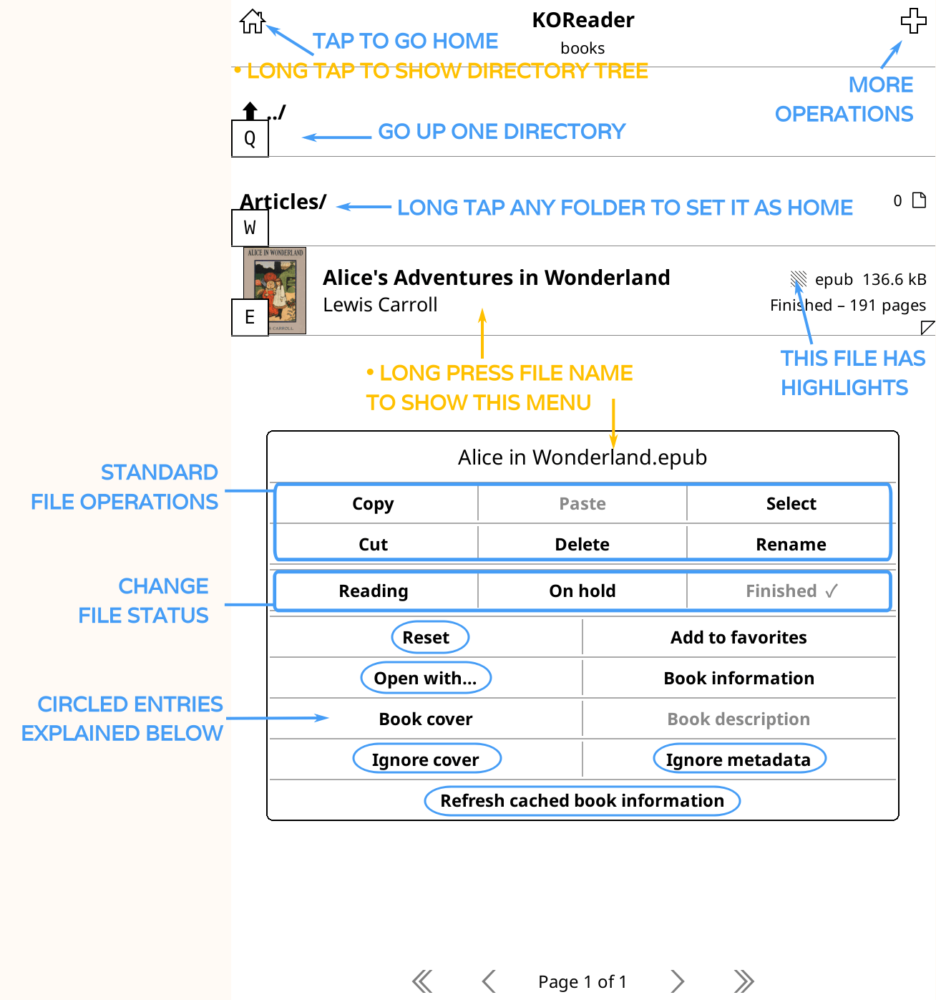
Por defecto, o explorador de ficheiros amosa o teu cartafol INICIO, que é o cartafol principal da túa biblioteca. Podes cambialo facendo unha pulsación longa sobre calquera cartafol. Podes cambiar moitas opcións do explorador de ficheiros, como a forma de amosar ou ordenar os libros, a través do MENÚ SUPERIOR, deslizando cara abaixo dende a parte superior da pantalla.
Os elementos rodeados na imaxe explícanse a continuación:
RESTABLECER: esta opción permíteche restablecer algunhas propiedades do documento, como o progreso de lectura, os marcadores, a portada personalizada, etc., que podes escoller nun diálogo posterior.
ABRIR CON: KOReader ten distintos motores para renderizar distintos tipos de ficheiro. Nalgúns casos, podes abrir un ficheiro cun motor diferente para obter outras funcións. Consulta as seccións Ver ficheiros comprimidos e Ver ficheiros de imaxe xusto debaixo.
IGNORAR A PORTADA: se por algún motivo queres desactivar a portada deste libro (pode ter unha portada incorrecta ou que non se ve ben na pantalla de tinta electrónica), podes seleccionar isto.
IGNORAR OS METADATOS: se os metadatos do teu libro non son correctos, o campo do nome pode amosar información inútil. Selecciona esta opción para amosar o nome do ficheiro en vez dos metadatos.
ACTUALIZAR A INFORMACIÓN DOS LIBROS NA CACHÉ: KOReader garda na caché os metadatos e a portada dun libro cando o engades á túa biblioteca. Se fas algúns cambios no libro despois de copialo ao dispositivo, pode ser necesario actualizar esta información. Se ves unha portada ou uns metadatos incorrectos, podes actualizar a información do libro con este elemento de menú.
Normalmente, o explorador de ficheiros de KOReader non amosa estes dous grupos de ficheiros e cartafoles:
- Ficheiros e cartafoles ocultos: son ficheiros e cartafoles que comezan por un punto (.), como .screensavers. Se queres ver estes cartafoles e ficheiros, activa esta opción:
(EXPLORADOR DE FICHEIROS) MENÚ SUPERIOR / / Axustes / Amosar ficheiros ocultos
- Tipos de ficheiro non compatibles: son os tipos de ficheiro que KOReader non pode abrir directamente, como os ficheiros de fonte coa extensión .ttf. KOReader pode abrir directamente estes tipos de ficheiro: documentos PDF, EPUB, DJVU, MOBI, CBR, CBZ, CBT, DOCX, RTF, HTML, HTMLZ, TXT, XPS, FB2, PDB, CHM e MD, ficheiros de imaxe e arquivos ZIP/RAR, polo que só estes ficheiros son visibles no explorador de ficheiros. Se tamén queres ver os tipos de ficheiro non compatibles, podes activar esta opción:
(EXPLORADOR DE FICHEIROS) MENÚ SUPERIOR / / Axustes / Amosar ficheiros non compatibles
O Explorador de ficheiros permíteche realizar algunhas operacións (como copiar, mover, eliminar ou exportar textos destacados) en moitos ficheiros á vez. Para este procedemento, primeiro tes que seleccionar os ficheiros. Actualmente hai tres formas distintas de seleccionar ficheiros para operacións en lote no explorador de ficheiros:
- No primeiro método, fai unha pulsación longa sobre o nome dun ficheiro e escolle Seleccionar no diálogo emerxente. Isto activará o Modo de selección. Agora podes pulsar outros ficheiros para engadilos á selección. Cando remates de seleccionar os ficheiros, pulsa a icona da marca de verificación na esquina superior dereita da pantalla. Podes escoller que facer con estes ficheiros no diálogo. Ou saír do modo de selección dende o mesmo diálogo.
- No segundo método, pulsa a icona + (máis) na esquina superior dereita e escolle Seleccionar ficheiros no diálogo. Isto activará o Modo de selección e o resto é igual que no primeiro método.
- No terceiro método, podes escoller os ficheiros a partir dunha busca ( Buscar ficheiros ). Isto é útil se precisas facer unha operación en moitos ficheiros repartidos en distintos cartafoles. Por exemplo, queres mover a un cartafol novo todos os ficheiros da túa colección escritos por Tolkien. Os pasos para esta acción serán:
- No Menú superior, pulsa a pestana Buscar (coa icona da lupa) e escolle Buscar ficheiros.
- Marca a opción Incluír subcartafoles se tamén queres buscar dentro dos cartafoles. Podes marcar Buscar tamén nos metadatos se queres que KOReader busque nos metadatos dos libros. Se non, KOReader só buscará a palabra introducida nos nomes dos ficheiros.
- Podes iniciar a busca dende o Cartafol de inicio da túa biblioteca ou dende o Cartafol actual pulsando o botón correspondente.
- Cando remate a busca, verás unha lista de ficheiros (se se atopa o termo buscado, claro). Agora podes pulsar a icona do menú hamburguesa na esquina superior esquerda da pantalla para entrar no Modo de selección.
- Pulsa todos os ficheiros cos que queres operar e pulsa a icona da marca de verificación na esquina superior esquerda da pantalla. Verás un diálogo que contén Seleccionar no explorador de ficheiros. Selecciona esta opción.
- Agora volverás ao Explorador de ficheiros e os ficheiros que seleccionaches no diálogo de busca tamén estarán seleccionados aquí.
- Pulsa a icona da marca de verificación na esquina superior dereita da pantalla. Agora podes escoller no diálogo que facer con estes ficheiros.
KOReader permíteche engadir os teus cartafoles favoritos a un menú de atallos a cartafoles de acceso rápido. Por exemplo, se tes un cartafol Archive na túa biblioteca que está en Home>Articles>Scientific>Archived, podes crear un atallo a este cartafol Archived e acceder a el rapidamente mesmo mentres les un libro.
Engadir un atallo a un cartafol:
Hai dúas formas de engadir un cartafol á túa lista de Atallos a cartafoles:
- Cando esteas no explorador de ficheiros, pulsa o botón do menú + (máis) da esquina dereita, despois pulsa o elemento Engadir aos atallos a cartafoles e introduce un nome descritivo para este atallo. Isto engadirá o cartafol no que estás.
- Cando esteas no explorador de ficheiros, fai unha pulsación longa sobre o nome dun cartafol para abrir o menú contextual. Pulsa o elemento Engadir aos atallos a cartafoles e introduce un nome descritivo para este atallo. Isto engadirá o cartafol que pulsaches.
Os cartafoles que están na túa lista de Atallos a cartafoles terán unha estrela (★) no Explorador de ficheiros.
Podes quitar un cartafol dos atallos do mesmo xeito, facendo unha pulsación longa sobre el e seleccionando Quitar dos atallos a cartafoles.
Ver os teus atallos a cartafoles:
Podes abrir os teus Atallos a cartafoles dende o Explorador de ficheiros ou dende a pantalla de lectura mentres les un libro.
- Dende o explorador de ficheiros: co menú + (máis) da esquina superior dereita, escollendo Atallos a cartafoles, ou asignando un xesto.
- Dende a pantalla de lectura: asignándolle un xesto.
Está na sección Explorador de ficheiros do Xestor de xestos. Podes aprender a configurar xestos na sección correspondente desta guía.
Se tes libros en formato .txt (algo máis habitual en chinés e en linguas con alfabeto cirílico), podes probar a activar a función Detección automática da estrutura de ficheiros TXT. Nalgúns casos pode mellorar o renderizado e facer que o texto pareza máis "de libro". Cando está activada, o motor de renderizado usará heurísticas (texto axustado a certa lonxitude máxima de liña, liñas en branco simples ou dobres que marcan os parágrafos, sangrías ou texto centrado considerado título...) para adiviñar como renderizar mellor o texto e tentará crear un índice.
Podes activar esta función aquí (só é visible se estás a ler un ficheiro .txt):
/ Estilo / Detección automática da estrutura de ficheiros TXTTen en conta que esta función pode estragar debuxos de arte ASCII e formatos baseados en caracteres de espazo. Se o teu libro ten este tipo de elementos, pode ser mellor usar o modo por defecto, no que o ficheiro de texto se renderiza tal cal cunha fonte monoespazada.
KOReader pode ler ficheiros gardados/comprimidos en ficheiros ZIP. Podes abrir ficheiros ZIP, CBZ e EPUB (xa que tamén son arquivos ZIP) co visor de arquivos para ver os ficheiros que conteñen:
- No Explorador de ficheiros, fai unha pulsación longa sobre o nome do ficheiro
- Pulsa Abrir con…
- Pulsa Visor de arquivos
Un ficheiro ZIP pode conter moitos tipos de documentos, como html, txt ou imaxes. KOReader pode abrir correctamente o teu ficheiro ZIP só se lle das unha pista sobre o tipo de ficheiro que hai no arquivo ZIP. Se lle pos ao ficheiro só a extensión .zip, KOReader suporá que este arquivo contén imaxes e tentará abrilo como un ficheiro CBZ.
CASO PREDETERMINADO: nomedoficheiro.zip: suponse que é un ficheiro zip de imaxes (e ábreo o motor MuPDF)
Se o teu ficheiro zip contén un destes tipos (en vez de só imaxes), ponlle o nome correspondente:
- FictionBook: nomedoficheiro.fb2.zip
- HTML: nomedoficheiro.htm.zip / nomedoficheiro.html.zip
- Ficheiros de rexistro de texto: nomedoficheiro.log.zip
- Markdown: nomedoficheiro.md.zip
- Rich Text Format: nomedoficheiro.rtf.zip
- Texto simple: nomedoficheiro.txt.zip
Se os documentos non teñen este tipo de nome, é probable que se use un motor de lectura/formato incorrecto e verás a mensaxe Non hai un motor de lectura para este documento ou o ficheiro non é válido. Podes renomear o ficheiro como se explicou arriba ou facer unha pulsación longa sobre o nome do ficheiro e escoller Abrir con... para seleccionar o motor correcto.
Podes abrir os ficheiros de imaxe co visor de imaxes en vez de abrilos como un libro. Os ficheiros abertos así non aparecen no historial e escálanse e xíranse mellor.
- No Explorador de ficheiros, fai unha pulsación longa sobre o nome do ficheiro
- Pulsa Abrir con…
- Pulsa Visor de imaxes
KOReader ofrece dúas opcións para ler documentos Markdown.
- Podes abrir o documento directamente como un libro pulsando nel. Este modo non ofrece formato, así que o teu ficheiro .md verase como se o abrises nun editor de texto.
- Podes converter o teu documento Markdown a HTML. Esta acción xerará un ficheiro HTML a partir do documento Markdown co formato correcto e cun índice creado a partir dos títulos.
Para converter un ficheiro .md, fai unha pulsación longa sobre el no Explorador de ficheiros e pulsa Converter no menú emerxente. Crearase un ficheiro novo co mesmo nome, pero con extensión HTML, no mesmo cartafol. Ten en conta que a conversión pode tardar un pouco, segundo o ficheiro Markdown e a velocidade do dispositivo.
Tamén podes configurar asociacións de ficheiros para os tipos de ficheiro que KOReader non recoñece automaticamente. Para asociar un ficheiro a un dos provedores de KOReader, primeiro fai unha pulsación longa sobre o ficheiro no Explorador de ficheiros e despois escolle o motor que o debe abrir. Podes marcar:
- Usar sempre este motor para este ficheiro para asociar este provedor só a este ficheiro concreto
- Ou marca Usar sempre este motor para este tipo de ficheiro para asociar este provedor a todos os ficheiros coa mesma extensión ca este
- No mesmo diálogo, podes ver as asociacións que fixeches pulsando Ver os valores por defecto para tipos de ficheiro
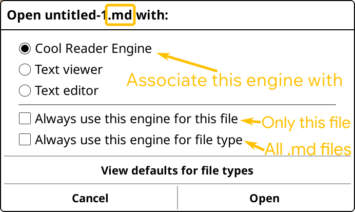
A función de Coleccións de KOReader pode axudarche a organizar a túa biblioteca de forma máis eficiente. Nunha definición moi sinxela, as coleccións son listas dos teus libros creadas por ti. Por exemplo, podes crear dúas coleccións chamadas Ficción e Non ficción para organizar os teus libros. Por suposto, tamén podes usar cartafoles para isto, pero as coleccións dan máis flexibilidade.
Algunhas vantaxes das coleccións fronte á organización por cartafoles:
- Engadir un libro a unha colección non move o ficheiro do libro. Así, os teus libros poden estar en distintos cartafoles pero aparecer na mesma colección.
- Un libro pode estar en moitas coleccións, algo que non é posible cos cartafoles. Por exemplo, podes ter unha colección de Ciencia ficción e outra de Ficción bélica. Un libro pódese engadir ás dúas coleccións á vez.
- Podes activar perfís con coleccións. Isto explicarase máis abaixo, se non coñeces a función de perfís de KOReader. (Por suposto, tamén podes activar perfís con cartafoles, pero as coleccións non te obrigan a mover os libros para usar, por exemplo, perfís temporais.)
Podes crear coleccións que reflictan calquera tipo de clasificación. Algunhas ideas de exemplo:
- Xéneros: ficción, non ficción, memorias...
- Estado do libro: lendo agora, quero ler, seguinte, non rematado...
- Series: O Señor dos Aneis, Harry Potter...
- Tipo de documento: libros, artigos científicos, artigos web...
Podes crear coleccións dende o diálogo de Coleccións, situado aquí:
/ ColecciónsPodes acceder a este diálogo dende a vista de lectura ou dende o Explorador de ficheiros. Ao abrir este menú, amosarache unha lista das túas coleccións. Por defecto verás nela Favoritos como unha colección que inclúe os libros que xa engadiches á túa lista de Favoritos.
- Engadir unha colección nova: usa o menú hamburguesa situado na esquina superior esquerda desta pantalla > Nova colección
- Eliminar unha colección: pulsación longa sobre o nome da colección > Eliminar a colección
- Renomear unha colección: pulsación longa sobre o nome da colección > Renomear a colección
- Cambiar a orde das coleccións: usa o menú hamburguesa situado na esquina superior esquerda desta pantalla > Organizar coleccións
Hai tres lugares distintos en KOReader dende os que podes engadir libros ás coleccións:
1. Dende o explorador de ficheiros e a pantalla de historial
Podes engadir un libro ás túas coleccións dende o Explorador de ficheiros ou dende a pantalla de Historial. Dende a pantalla de Historial podes engadir os libros dun en un. Fai unha pulsación longa sobre o libro e escolle Coleccións.... Despois podes escoller a que coleccións queres engadir este libro.
Se vas engadir varios libros, podes facelo dende o Explorador de ficheiros. Para varios libros, o procedemento é este:
- Fai unha pulsación longa sobre un libro
- Escolle Seleccionar no menú emerxente
- Selecciona outros libros
- Pulsa a icona da marca de verificación (✔️) na esquina superior dereita
- Pulsa Coleccións
Para engadir un só libro, fai unha pulsación longa sobre el no Explorador de ficheiros e escolle Coleccións no menú emerxente.
2. Dende o menú de coleccións
Este método permíteche engadir un ou varios libros ás túas Coleccións. A maior diferenza co método do Explorador de ficheiros é que podes engadir cartafoles enteiros e os seus subcartafoles ás coleccións dunha vez. Isto é moi útil se os teus libros xa están organizados en cartafoles. Por exemplo, se todos os teus libros de ciencia ficción están nun único cartafol, podes crear unha colección chamada Ciencia ficción e engadir este cartafol dunha vez.

Na imaxe de arriba, a caixa 1 amosa as opcións para engadir libros. Podes chegar a este menú dende o menú hamburguesa da pantalla de coleccións:
/ Coleccións / Nome da túa colección / - Engadir todos os libros dun cartafol: como indica o seu nome, esta opción permíteche seleccionar un cartafol para engadir todos os seus libros a esta colección. Ten en conta que esta opción non engade os libros dos subcartafoles do cartafol escollido. Por exemplo, se seleccionas o teu cartafol Ficción e tes dentro cartafoles chamados Ciencia ficción e Ficción bélica, non se engadirán con esta opción.
- Engadir todos os libros dun cartafol e os seus subcartafoles: esta é a opción que engadirá todos os subcartafoles do cartafol escollido. Ten coidado con esta opción, porque baixará ata o fondo ao engadir os libros. Así que, se tes moitos niveis de cartafoles aniñados, pode haber moitos máis libros dos que pensabas.
- Engadir libro á colección: esta é a opción básica que che permitirá engadir un só libro.
Podes quitar un libro das coleccións dende o Explorador de ficheiros, a pantalla de Historial ou a pantalla de Coleccións. Nas pantallas do Explorador de ficheiros e do Historial, fai unha pulsación longa sobre o libro e escolle Coleccións.... Verás unha marca de verificación xunto ás coleccións ás que engadiches este libro. Desmarca as que queiras pulsando nelas para quitar o libro desa colección. Tamén dende a pantalla de Coleccións podes facer unha pulsación longa sobre un libro e escoller Quitar da colección.
As coleccións poden estar moi cheas, pero KOReader permíteche atopar os libros facilmente ofrecendo moitas opcións de filtrado. Se miras a imaxe de arriba, podes ver as opcións de filtrado na caixa 2 e na caixa 3. A caixa 2 permíteche filtrar polo estado do libro (novo, lendo, rematado, pendente) e a caixa 3 permíteche filtrar polos metadatos do libro (autor, serie, lingua, palabras clave). Ademais, podes combinar estes dous grupos de filtros como neste exemplo: "Amósame os libros novos desta colección escritos por Isaac Asimov (Filtrar por autores -> Isaac Asimov) que aínda non comecei (Filtrar por estado -> Novo)."
Podes actualizar os metadatos do libro facendo unha pulsación longa sobre el no Explorador de ficheiros e escollendo Información do libro no menú. Na xanela emerxente, podes facer unha pulsación longa sobre calquera campo para cambiar metadatos como o autor ou as palabras clave. Tamén podes usar para esta tarefa Calibre, unha aplicación de terceiros que fai moito máis doado xestionar os metadatos dos libros.
Hai dous tipos de busca que podes facer nas coleccións: podes buscar unha frase nos títulos e metadatos dos libros ou tamén podes buscar dentro do texto dos libros. Podes abrir o diálogo de busca dende:
/ Coleccións / / Busca de colecciónsSe queres facer unha busca no texto dos libros, ten en conta estes puntos:
- Este tipo de busca só está dispoñible se abres as coleccións dende o explorador de ficheiros. Non está dispoñible dende a pantalla de lectura.
- Esta busca pode ser lenta (uns 2 segundos por cada libro da colección). Así que, se tes unha colección moi chea, pode tardar moito.
A función de busca depende de onde esteas na xanela de coleccións. Se estás no nivel raíz, onde ves todas as túas coleccións, a busca farase en todas as coleccións. Se queres buscar só nunha colección concreta, tes que pulsala e entrar nela. Isto é especialmente importante se tamén buscas no texto dos libros, porque é unha operación lenta.
Cando fas unha busca, os resultados gárdanse automaticamente como unha colección nova.
Despois de crear as túas coleccións e engadirlles libros, probablemente quererás mantelas sincronizadas con algúns cartafoles. Por exemplo, imaxina que creaches unha colección Ciencia ficción. E tamén tes un cartafol SF na túa biblioteca onde pos os teus libros de ciencia ficción. Se queres que a colección de ciencia ficción se actualice soa cando engadas un ficheiro novo a este cartafol, podes facelo coa función de cartafoles conectados das coleccións.
Con esta función podes conectar un ou máis cartafoles á túa colección. Despois diso, KOReader analizará (de novo) os cartafoles para engadir ou quitar libros das coleccións nestas condicións:
- Ao conectar un cartafol a unha colección
- Ao incluír os subcartafoles dun cartafol conectado
- Ao amosar a colección
- Ao iniciar o programa
Como conectar un cartafol á túa colección:

- Vai á pantalla de Coleccións que se ve na imaxe de arriba.
- Fai unha pulsación longa sobre o nome da colección á que queres conectar cartafoles (1).
- Selecciona Conectar cartafoles no menú emerxente (2).
- Abrirase a pantalla da lista de cartafoles conectados.
- Engade un cartafol pulsando a icona MÁIS da esquina superior esquerda desa pantalla, que abrirá a pantalla de selección de cartafol.
- Repite o último paso se queres conectar máis cartafoles.
As coleccións con cartafoles conectados terán unha icona de cartafol, como podes ver na imaxe de arriba (3).
Pode que tamén queiras incluír na sincronización os subcartafoles dun cartafol. No paso 4 de arriba, cando abras a pantalla da lista de cartafoles conectados, podes facer unha pulsación longa sobre un cartafol para incluír/excluír subcartafoles dende o menú emerxente.
Como desconectar un cartafol da túa colección:
- Vai á pantalla de Coleccións que se ve na imaxe de arriba.
- Fai unha pulsación longa sobre o nome da colección á que queres conectar cartafoles (1).
- Selecciona Conectar cartafoles no menú emerxente (2).
- Abrirase a pantalla da lista de cartafoles conectados.
- Fai unha pulsación longa sobre o cartafol que queres desconectar e escolle Desconectar o cartafol no menú emerxente.
As túas coleccións pódense usar coa función de perfís de KOReader. Se aínda non coñeces os perfís, velaquí unha descrición da nosa sección de Perfís:
Un perfil é basicamente un conxunto de accións que se poden activar cun só xesto (como unha macro).
Como exemplo, imaxina que, ao ler certo tipo de libros, sempre:
- Xiras a pantalla á orientación horizontal
- Aumentas o tamaño da fonte e o contraste e
- Acendes a luz da pantalla
Co plugin de perfís, podes facer todo isto á vez cunha soa acción.
Podes executar un perfil manualmente, pero o verdadeiro potencial dos perfís está na súa función de execución automática. Con esta función, podes activar un perfil segundo certas condicións. Velaquí a ligazón á sección correspondente da guía: Execución automática de perfís. Polo de agora, só explicaremos aquí unha condición de activación: Coleccións.
Basicamente, podes crear algúns perfís e configuralos para que se executen automaticamente se o libro aberto está nunha colección concreta. Algúns exemplos útiles:
- Podes engadir todo o teu manga a unha colección Manga e crear un perfil que cambie a dirección de paso de páxina a dereita a esquerda e inverta as pulsacións e deslizamentos de paso de páxina cando abras un libro de manga desta colección.
- Podes engadir os teus cómics a unha colección que active un perfil para reducir o intervalo de refresco da pantalla a cada páxina e evitar as pantasmas.
- Podes engadir os teus PDF problemáticos a unha colección, de modo que, ao abrilos, un perfil active o OCR automático ou o modo de redistribución.
KOReader está deseñado para funcionar de forma eficiente mesmo no hardware limitado dos lectores de libros electrónicos. Pero sempre haberá documentos mal formatados que fan que KOReader vaia máis lento. Aquí darémosche algúns consellos para optimizar o teu documento segundo o tipo de ficheiro.
- Os ficheiros EPUB están compostos basicamente de texto e imaxes, con algunhas regras que determinan como se formatan estes elementos na pantalla. En condicións ideais, é un proceso bastante sinxelo, polo que os ficheiros EPUB adoitan ir rápido en KOReader. Pero algúns libros EPUB engaden tal cantidade de regras de formato que KOReader ten que facer moitos cálculos só para amosar unha simple frase. Isto fará máis lento abrir o libro, pasar as páxinas e cambiar as propiedades de aparencia, como o peso da fonte ou o espazado entre liñas.
KOReader non admite os EPUB de composición fixa. Ábrense, pero renderízanse como EPUB redistribuíbles e probablemente non se verán ben nin serán lexibles.
- Os ficheiros EPUB son en realidade arquivos ZIP que conteñen ficheiros HTML. Algúns libros poden ser un único ficheiro HTML, mentres que outros poden estar compostos por varios ficheiros HTML, por exemplo cada capítulo do libro nun ficheiro HTML separado. Se o teu libro é un único ficheiro HTML, o renderizado parcial non pode funcionar. Polo tanto, os cambios de aparencia serán máis lentos que nos libros divididos en capítulos, porque, para cada cambio, KOReader ten que calcular igualmente o libro enteiro en vez de só o capítulo actual.
- Outro caso pouco habitual de lentitude dáse cando o contido está dentro dunha etiqueta HTML table. KOReader ten que renderizar/debuxar cada cela en cada paso de páxina, así que, se unha cela (que contén moitos parágrafos) ocupa 50 páxinas, o paso de páxina será bastante lento.
Solucións:
- Podes poñer Estilo incrustado en non no menú inferior para ver se, ignorando todas as follas de estilo do documento, vai máis rápido (por suposto, probablemente perderás o bo formato, pero saberás cal é o culpable).
- Se tes coñecementos de HTML e CSS, podes inspeccionar os ficheiros HTML e CSS directamente dende KOReader e xulgar ti mesmo a súa calidade ou complexidade innecesaria. Para iso, podes facer unha pulsación longa sobre un texto e escoller Ver HTML no menú emerxente.
- Se tes o problema do “contido dentro dunha táboa” mencionado arriba na sección de problemas, podes engadir este axuste de estilo específico do libro table, tr, td { display:block; } en:
MENÚ SUPERIOR / / Axustes de estilo / Axuste específico do libro
- O editor de libros electrónicos de Calibre pode comprobar se os ficheiros EPUB teñen problemas e ten ferramentas para corrixir algúns deles.
Podes descargar Calibre dende aquí.
Podes ver as instrucións da ferramenta Check book de Calibre aquí.
- A aplicación EPUBCheck pode comprobar a validez dos ficheiros EPUB e detectar moitos tipos de erros. Podes ler aquí un exemplo de incidencia na que o problema se detectou con EPUBCheck.
Podes descargar a versión de liña de ordes dende aquí.
Ou descargar unha versión con interface gráfica dende aquí.
Os ficheiros PDF poden ir lentos por estes problemas:
- O propio ficheiro PDF pode ser demasiado grande para a memoria do teu dispositivo.
- O ficheiro PDF pode conter ficheiros de imaxe moi grandes. Mesmo nos documentos cunha capa de texto normal (que podes seleccionar e destacar), pode haber outra capa de imaxe incrustada (xeralmente un escaneo da páxina). Isto fai máis lento abrir o documento e pasar as páxinas, porque estas imaxes grandes teñen que reescalarse para caber na pantalla, e este proceso pode consumir moita CPU.
- O ficheiro PDF pode ter moitos elementos individuais que precisan unha colocación precisa, como unha páxina de revista con moitas imaxes e caixas de texto. Neste caso, KOReader ten que calcular e debuxar todos estes elementos, o que pode levar tempo.
- A función Endereitar automaticamente (que che permite axustar a inclinación da páxina) tamén pode facer máis lento o lector.
- Se pos a CALIDADE DE RENDERIZACIÓN en ALTA mentres a REDISTRIBUCIÓN está ACTIVADA, o texto será máis agradable, pero pode ser moito máis lento (ata varios segundos por paso de páxina) ca en POR DEFECTO, segundo o documento.
MENÚ INFERIOR / / Calidade de renderización
Por desgraza, para os ficheiros PDF malos non hai moitas solucións. Xeralmente, a mellor solución cos PDF problemáticos é tentar atopar unha versión mellor. Ou, se hai outro tipo de ficheiro dispoñible para descargar, como EPUB en vez de PDF (ou ao revés), podes probar ese formato.
Tamén podes tentar converter os teus documentos ao formato EPUB, máis flexible. Velaquí algunhas aplicacións que poden axudarche a traballar con PDF:
- Calibre pode converter os teus documentos entre moitos formatos. Tamén ten un editor integrado que che permite editar libros electrónicos (e corrixir problemas) nos formatos de libro electrónico máis populares, EPUB e Kindle.
- K2pdfopt optimiza os ficheiros PDF/DJVU para lectores electrónicos móbiles e teléfonos intelixentes. Funciona ben cos ficheiros PDF/DJVU de varias columnas e pode redistribuír o texto mesmo en ficheiros PDF escaneados. Tamén se pode usar como ferramenta xeral para copiar, recortar, redimensionar ou facer OCR de PDF.
- OCRmyPDF é unha aplicación de liña de ordes que pode engadir unha capa de texto OCR aos ficheiros PDF escaneados (que só conteñen imaxes sen texto), para poder buscar neles ou copiar e pegar. Pode ser especialmente útil para ler libros antigos escaneados. Tamén pode optimizar as imaxes para reducir o tamaño do ficheiro.
Temos unha sección específica para optimizar manga e cómics: Optimizar manga
KOReader ten un motor de procesamento de texto moi eficiente. Ademais, os libros gárdanse na caché a primeira vez que se abren, para que KOReader poida abrilos máis rápido a seguinte vez. Pero, a pesar destas optimizacións, os ficheiros de texto inusualmente grandes poden seguir tardando máis en abrirse. Por exemplo, sábese que as novelas chinesas en liña chegan a decenas de millóns de palabras e adoitan gardarse como ficheiros de texto.
O problema dos ficheiros de texto grandes é o atraso ao renderizar o libro por primeira vez e ao modificar despois a aparencia do texto. Se tentas cambiar o tamaño da fonte dun libro .txt moi grande, pode haber un gran atraso despois de cada axuste, porque todo o libro ten que renderizarse de novo. KOReader ten un sistema de renderizado parcial que reduce moito este tipo de atraso. Pero esta función non se pode usar con ficheiros de texto, porque estes ficheiros non están divididos en capítulos (podes ler máis sobre o renderizado parcial aquí).
Para aproveitar a aceleración do renderizado parcial, podes converter o teu ficheiro de texto grande ao formato EPUB coa aplicación Calibre. Calibre dividirá automaticamente o ficheiro de texto en ficheiros individuais máis pequenos durante a conversión e empaquetaraos nun ficheiro EPUB estándar. Despois desta conversión, podes cambiar a aparencia do libro moito máis rápido. Podes descargar Calibre dende esta páxina e atopar titoriais en liña sobre o procedemento de conversión de TXT a EPUB.
SingleFile é unha extensión de navegador para Mozilla Firefox, Google Chrome e Microsoft Edge. Esta extensión permite gardar unha páxina web como un único ficheiro .html con todos os recursos (imaxes, follas de estilo, scripts) incrustados. Despois podes copiar este único ficheiro ao teu dispositivo e lelo con KOReader.
Un catálogo OPDS (Open Publication Distribution System) é unha fonte en liña que funciona como o índice dunha biblioteca dixital. KOReader é compatible con OPDS, polo que podes explorar estas bibliotecas dixitais, buscar libros nelas e descargar os libros directamente no teu dispositivo.
KOReader vén preconfigurado con algúns catálogos OPDS grandes, como Project Gutenberg e Standard Ebooks, e podes engadir outros catálogos OPDS. Para abrir o diálogo de OPDS, vai a:
/ Catálogo OPDSUsar servidores OPDS persoais
Ademais dos catálogos públicos, podes usar o sistema OPDS para xestionar a túa propia biblioteca. Coa aplicación Calibre, podes servir os libros do teu ordenador como un catálogo OPDS que podes explorar directamente dende KOReader. Pulsa aquí para ver as instrucións de Calibre sobre como configurar un servidor OPDS.
Kavita tamén é un servidor de lectura de código aberto, multiplataforma e con moitas funcións. Podes configurar o teu propio servidor e compartir a túa colección de lecturas coa familia e as amizades. Tamén é compatible con OPDS e coa sincronización do progreso de KOReader. Con esta aplicación, podes acceder á túa biblioteca dende o lector e sincronizar as posicións de lectura entre distintos dispositivos para continuar lendo onde o deixaches. A páxina do proxecto está aquí. A documentación sobre OPDS e a sincronización do progreso para usuarios de KOReader está aquí.
Despois de configurar os teus propios servidores OPDS, tes que engadilos a KOReader. As instrucións están aquí.
Se usas KOReader en varios dispositivos, como un lector electrónico, un teléfono, unha tableta ou un ordenador, KOReader pode sincronizar o teu progreso de lectura entre eles. Coa función Sincronización do progreso, podes seguir lendo sen interrupcións, por exemplo ao pasar do lector electrónico na casa ao teléfono no transporte.
Desta función encárgase o plugin Sincronización do progreso. Configurar a sincronización implica estes tres pasos, que explicaremos a continuación:
- Crear unha conta de sincronización
- Iniciar sesión na túa conta de sincronización en todos os dispositivos que queres sincronizar
- Sincronizar o progreso de lectura de forma automática ou manual
Para crear unha conta de sincronización, conecta o dispositivo a unha rede e abre o plugin Sincronización do progreso en KOReader:
/ Sincronización do progresoe pulsa o botón Rexistrar/Iniciar sesión.
Na xanela que se abre, introduce un nome de usuario e un contrasinal e despois pulsa o botón Rexistrar. Isto creará unha conta no servidor de sincronización de KOReader, que gardará o teu progreso de lectura.
Abre o mesmo menú nos dispositivos que queres sincronizar. Introduce o teu nome de usuario e o contrasinal e esta vez pulsa o botón Iniciar sesión. Despois disto, os teus dispositivos estarán conectados á túa conta de sincronización.
Podes darlles nomes recoñecibles aos teus dispositivos. De novo no mesmo menú, pulsa Nome do dispositivo na rede e introduce un nome para o dispositivo actual.
Cando todo estea configurado, podes sincronizar o progreso de lectura de forma automática ou manual:
- Sincronización automática: para sincronizar automaticamente, activa o elemento de menú Manter os documentos sincronizados automaticamente. A partir de agora, sempre que peches un libro ou suspendas/esperte o dispositivo, KOReader enviará o teu progreso de lectura ao servidor (por suposto, isto require unha conexión de rede dispoñible).
- Sincronización manual: se non tes conexión a internet constante no dispositivo por motivos de batería ou dispoñibilidade, podes escoller sincronizar manualmente. Tes moitas opcións para iniciar unha sincronización:
- Dende o menú: no menú do plugin Sincronización do progreso, podes pulsar o elemento Enviar agora o progreso dende este dispositivo para enviar ao servidor o progreso do dispositivo actual. Para recibir o progreso máis recente do servidor, pulsa o elemento Obter agora o progreso dende outros dispositivos.
- Con xestos: estas accións (enviar/obter o progreso) están dispoñibles no Xestor de xestos, polo que podes asignalas a calquera xesto que queiras.
- Co menú rápido: podes engadir estas accións ao teu Menú rápido.
- Dende os perfís: podes engadir estas accións aos teus Perfís. Sobre todo coa función de execución automática dos perfís, podes iniciar a sincronización con diversos filtros e condicións.
Para sincronizar o progreso dun documento en dous dispositivos distintos, KOReader primeiro ten que identificar estes dous ficheiros como "o mesmo". Ás veces isto pode ser complicado, así que temos dous métodos entre os que podes escoller, segundo o uso que fagas de KOReader. Podes cambiar o método na opción Método de comparación de documentos do menú de sincronización do progreso.
Comparación binaria (por defecto)
Por defecto, a sincronización do progreso usa o método de comparación binaria para identificar os ficheiros. Neste método, KOReader xera un hash MD5 parcial do contido do ficheiro (que ten este aspecto: 0b229176d4e8db7f...). Calquera cambio mínimo no ficheiro cambia completamente este hash, polo que o método de comparación binaria só funciona se os dous ficheiros son perfectamente idénticos.
Se copias manualmente exactamente o mesmo ficheiro a todos os teus dispositivos, este método debería funcionar. Pero, por exemplo, se usas Calibre para enviar libros aos teus dispositivos, a comparación binaria fallará.
Isto ocorre porque Calibre escribe a súa propia información, como o progreso do visor, directamente no ficheiro, o que cambia o cálculo do hash do ficheiro, polo que KOReader tratará estes ficheiros (o orixinal e o modificado por Calibre) como dous libros distintos. Se tes este problema, podes usar o método alternativo que se explica a continuación.
Comparación polo nome do ficheiro
Este é un método de comparación "máis flexible", pensado para as persoas cuxos ficheiros poden variar lixeiramente entre dispositivos debido aos cambios que outros programas, como Calibre, fan nos documentos, como se explicou arriba.
Neste método, KOReader só comproba se os nomes de ficheiro (incluída a extensión) dos dous documentos son idénticos para emparellalos. Así que, se usas Calibre ou outro programa de xestión de bibliotecas para xestionar a túa biblioteca en distintos dispositivos, podes cambiar á comparación polo nome do ficheiro.
- O servidor de sincronización de KOReader, o programa que xestiona o proceso de sincronización de KOReader, é un proxecto de código aberto. Podes atopar máis información, incluído o código fonte, na súa páxina de GitHub.
- O servidor de sincronización non garda o nome nin o contido dos ficheiros. Isto significa que o servidor non pode saber o que estás a ler. Cando sincronizas o progreso dun documento, só se transfire e se garda no servidor esta información:
- Nome de usuario (o que escolliches)
- Identificador único do documento (hash MD5 do ficheiro, que ten este aspecto: 0b229176...)
- Posición de lectura máis avanzada neste documento
- O teu contrasinal non se garda no servidor (só se garda un hash MD5).
- Toda a comunicación entre KOReader e o servidor de sincronización está protexida con HTTPS.
Tamén tes a opción de aloxar o teu propio servidor de sincronización, se queres. Podes usar o servidor de sincronización de KOReader oficial ou unha das alternativas que podes ver nesta páxina.
Tamén hai outros proxectos, como Calibre-Web, que son solucións de xestión de bibliotecas cun servidor de sincronización de KOReader integrado.
Primeiro explicaremos como se comporta KOReader ao eliminar ficheiros, para que entendas mellor a función de Arquivo cos metadatos do libro:
Normalmente, cando copias un documento ao dispositivo e o abres por primeira vez, KOReader crea un cartafol novo cun nome como nome_do_teu_documento.sdr e usa este cartafol para gardar os axustes, as anotacións e o progreso deste documento.
Cando eliminas un documento co Explorador de ficheiros de KOReader, KOReader tamén elimina este cartafol .sdr. Isto significa que perdes todos os axustes, as anotacións e o progreso do documento eliminado. Se volves copiar este documento ao lector electrónico e o abres con KOReader, será como abrilo por primeira vez.
Pero, por exemplo, e se queres eliminar os libros rematados (quizais non che gusta a desorde na biblioteca ou quedas sen espazo), pero tampouco queres perder os textos destacados deses libros? A función de Arquivo cos metadatos do libro permíteche facelo.
Como funciona esta función:
- Primeiro tes que activar a función escollendo unha localización do arquivo aquí:
MENÚ SUPERIOR / / Documento / Arquivo cos metadatos do libro / Lugar do arquivo:
- Agora, cando elimines un documento dende o Explorador de ficheiros, verás esta opción activada no diálogo de confirmación: [ ] gardar o libro no arquivo de metadatos
- Se marcas esta opción ao eliminar, KOReader copiará o ficheiro de axustes deste documento ao cartafol de arquivo que escolliches no primeiro paso.
- Despois, KOReader eliminará o documento e o cartafol nome_do_teu_documento.sdr asociado.
O documento elimínase, pero os seus axustes quedan no arquivo. Se volves copiar este documento ao dispositivo e o abres, KOReader detectará que os axustes deste documento están no arquivo e diráche isto: "Este libro xa se abriu antes neste dispositivo. Queres restaurar os seus metadatos dende o arquivo?" O botón Restablecer usará este ficheiro de axustes arquivado para este documento, así que recuperarás os axustes, as anotacións e o progreso deste documento.
Podes ver a lista de documentos arquivados aquí:
/ Documento / Arquivo cos metadatos do libro / Lista de libros arquivadosDende esta lista, podes acceder á información/metadatos e aos marcadores do documento arquivado pulsando o nome do documento. Tamén podes eliminar o documento do arquivo.
Gardar metadatos no arquivo ao pechar o libro
Se activas esta opción no mesmo menú mencionado arriba, KOReader gardará unha copia do ficheiro de axustes de cada documento ao pechalo. Aínda que elimines un documento e o seu cartafol .sdr fóra de KOReader (co xestor de ficheiros de Android, cando está conectado ao PC...), seguirás tendo unha copia de seguranza dos axustes do documento.
Se a opción Gardar metadatos no arquivo ao pechar o libro está activada, pero desmarcas a opción gardar o libro no arquivo de metadatos no diálogo de eliminación do ficheiro, KOReader eliminará o ficheiro de arquivo de axustes creado anteriormente para este documento.
KOReader garda os axustes e a información adicional relacionada cos teus libros no mesmo cartafol ca o ficheiro do libro. Chamámoslle a isto metadatos, e inclúe:
- Os axustes visuais do libro
- O progreso de lectura do libro
- Os textos destacados, os marcadores e as notas
Nun cambio recente, engadimos novas formas de gardar estes metadatos para solucionar certos problemas relacionados coa sincronización entre dispositivos. Actualmente hai tres métodos distintos para gardar os metadatos, e cada método ten as súas vantaxes e inconvenientes.
Podes cambiar este axuste neste menú:
/ Documento / Localización para os metadatos dos libros / Documento / Localización para os metadatos dos libros: cartafol do libroEste é o método por defecto nunha instalación nova de KOReader. Neste método, cando copias Alice in Wonderland.epub ao dispositivo e o abres por primeira vez, crearase un cartafol chamado Alice in Wonderland.sdr no mesmo cartafol. Este cartafol contén os ficheiros cos axustes, as anotacións e o progreso de lectura deste libro.
Vantaxes
- Podes facer manualmente copias de seguranza dos axustes de cada libro e restauralos.
- Cando sincronizas cartafoles ou fas copias de seguranza cun sistema como Syncthing ou Dropbox, os teus axustes sincronizaranse xunto cos libros.
- Podes renomear os cartafoles que conteñen o libro; isto non confunde a KOReader.
Inconvenientes
- Se reorganizas a túa biblioteca movendo ou renomeando os ficheiros dos libros ou os seus cartafoles .sdr fóra do explorador de ficheiros de KOReader, perderás os metadatos deses libros sen ningún aviso.
- Estes cartafoles .sdr serán visibles cando explores os cartafoles da túa biblioteca con outro explorador de ficheiros ou dende o ordenador, o que pode desordenar a vista.
/ Documento / Localización para os metadatos dos libros: ./docsettingsEste método é esencialmente igual ao método por defecto de arriba. A diferenza é que, neste método, todos os cartafoles .sdr dos teus libros estarán nun único cartafol dentro da estrutura de cartafoles principal de KOReader, en vez de no cartafol da biblioteca, xunto aos ficheiros dos libros.
Vantaxes
- Os cartafoles .sdr dos libros só serán visibles para KOReader e só os usará el. Non desordenarán a vista dos cartafoles da biblioteca cando a explores con outro explorador de ficheiros ou dende o ordenador.
Inconvenientes
- Se reorganizas a túa biblioteca movendo ou renomeando os cartafoles da biblioteca, os ficheiros dos libros ou os seus cartafoles .sdr fóra do explorador de ficheiros de KOReader, perderás os metadatos deses libros sen ningún aviso.
- Como os metadatos dos teus libros non estarán nos cartafoles da biblioteca, ningunha sincronización nin copia de seguranza da biblioteca os incluirá.
/ Documento / Localización para os metadatos dos libros: ./hashdocsettingsEste método é semellante ao anterior, xa que os cartafoles .sdr estarán nun cartafol interno. Pero este método desenvolveuse para resolver as carencias do método anterior. Porque, normalmente, se renomeas un libro fóra de KOReader (co xestor de ficheiros ou o lector nativo do dispositivo, ou dende un ordenador conectado), o nome do seu cartafol .sdr deixará de coincidir e perderanse os metadatos dese libro. Se só usas o explorador de ficheiros de KOReader para as operacións con ficheiros, isto xestiónase automaticamente, polo que non hai consecuencias.
Neste método con HASH, os cartafoles .sdr non se identifican pola ruta nin polo nome de ficheiro do libro. En vez diso, úsase un hash MD5 parcial para vincular os libros cos seus axustes. Este hash úsase como identificador único do libro e calcúlase a partir do contido do ficheiro do libro. O mesmo hash úsase tamén para nomear o seu cartafol .sdr.
Vantaxes
- Os cartafoles .sdr dos libros só serán visibles para KOReader e só os usará el. Non desordenarán a vista dos cartafoles da biblioteca cando os explores con outro explorador de ficheiros ou dende o ordenador.
- Podes renomear, mover e copiar os teus libros con outro explorador de ficheiros ou dende o ordenador. KOReader seguirá recoñecendo os libros despois destas operacións.
- Neste método, KOReader asocia o mesmo cartafol .sdr a todas as copias do libro, aínda que estas copias estean en dispositivos distintos. Por exemplo, se usas Syncthing, este método permíteche sincronizar o teu cartafol /hashdocsettings xunto cos ficheiros dos libros en moitos dispositivos que teñan KOReader instalado. A pesar de que eses libros teñan rutas relativas distintas en cada dispositivo, podes ter as anotacións e o progreso sincronizados entre os teus dispositivos. Isto non é posible cos outros métodos.
Inconvenientes
- Calquera operación que modifique directamente o ficheiro (como escribir textos destacados en PDF ou descargar dende Calibre) cambiará o ficheiro, polo que o seu identificador MD5 cambiará (a diferenza de renomear ou mover, que é seguro con este método). Neste caso, KOReader non podería recoñecer o libro, así que eses libros perderán os seus metadatos.
- Calcular os identificadores dos ficheiros pode facer máis lenta a navegación polo Explorador de ficheiros ao explorar cartafoles grandes.
Hai moitos tipos de xestos que podes usar para controlar KOReader. Algúns xestos teñen limitacións sobre en que parte da pantalla se poden usar e que direccións admiten. Estas limitacións indícanse a continuación.

|
PULSACIÓN / DOBRE PULSACIÓN Pulsación simple ou dobre cun SÓ dedo FUNCIONA: en calquera parte da pantalla |
 |
MANTER PULSADO Manter pulsado cun SÓ dedo FUNCIONA: só nas catro esquinas |
|
PULSACIÓN CON DOUS DEDOS Pulsación simple con DOUS dedos á vez FUNCIONA: só nas catro esquinas |
|
ESPALLAR E BELISCAR Igual que ampliar e reducir nun teléfono ou nunha tableta. FUNCIONA: en calquera parte da pantalla Este xesto pode funcionar con menos fiabilidade segundo o dispositivo. Se é o caso, escolle outro tipo de xesto. |
|
 |
DESLIZAR CUN DEDO Movemento de deslizamento cun SÓ dedo FUNCIONA: nos bordos da pantalla (HORIZONTAL e VERTICAL) e en calquera parte excepto nos bordos (DIAGONAL) |
DESLIZAR CON DOUS DEDOS Movemento de deslizamento con DOUS dedos á vez FUNCIONA: en calquera parte da pantalla |
|
 |
DESLIZAMENTO MÚLTIPLE Máis dun deslizamento feito un tras outro sen levantar o dedo. Por exemplo, como debuxar a letra U (ABAIXO-DEREITA-ARRIBA) FUNCIONA: en calquera parte da pantalla |
Iconas de Econceptive de Noun Project |
Esta sección enumera os xestos que están activados ao instalar KOReader. Podes cambiar estes xestos segundo as túas preferencias en:
/ Xestor de xestosPodes ver un resumo dos xestos definidos actualmente aquí:
/ Pulsacións e xestos / Vista xeral de xestosEsquina superior esquerda > Activar/desactivar modo de follear páxinas
Esquina superior dereita > Poñer/quitar marcador
Esquinas diagonalmente opostas á vez > Captura de pantalla
Lado esquerdo > Ir -10 páxinas
Lado dereito > Ir +10 páxinas
Deslizamento diagonal curto > Refresco de toda a pantalla
Deslizamento diagonal longo > Captura de pantalla
- Volver á posición anterior
- Ir ao último marcador
- Follear documento
- Marcadores
- Índice
- Amosar o diálogo da luz frontal
- Activar/desactivar redistribución de texto
- Historial
- Estado do libro
- Ir á páxina
- Atrás
- Capítulo anterior
- Capítulo seguinte
- Abrir o documento anterior
- Favoritos
Esta é unha lista de todas as accións que podes asignar a un xesto co menú Xestor de xestos. Podes usar a función de busca do navegador (xeralmente Ctrl+F) para buscar aquí unha acción. Estas accións tamén se poden usar no teu propio Menú rápido. Consulta a sección correspondente da guía para máis información.
Podes ver un resumo dos xestos definidos actualmente aquí:
/ Pulsacións e xestos / Vista xeral de xestos- Vista xeral de xestos
- Explorador de ficheiros
- Abrir o documento anterior
- Historial
- Buscar no historial
- Favoritos
- Coleccións
- Busca de coleccións
- Explorador de marcadores
- Buscar no dicionario
- Cargar grupo de dicionarios
- Percorrer os grupos de dicionarios
- Buscar na Wikipedia
- Amosar o menú
- Buscar no menú
- Abrir o seguinte ficheiro no cartafol do último libro
- Abrir o ficheiro anterior no cartafol do último libro
- Ficheiro de caderno
- Captura de pantalla
- Activar/desactivar o servidor SSH
- Amosar efemérides
- Estatísticas de lectura
- Estatísticas de lectura: activar/desactivar
- Estatísticas de lectura: amosar progreso
- Estatísticas de lectura: amosar o intervalo de tempo
- Estatísticas de lectura: amosar a vista de calendario
- Estatísticas de lectura: amosar a liña temporal de hoxe
- Estatísticas de lectura: sincronizar
- Lector rápido
- Lectura RSVP
- Saír da pantalla de repouso
- Iniciar o modo de almacenamento USB
- Suspender
- Reiniciar KOReader
- Reiniciar o dispositivo
- Apagar
- Saír de KOReader
- Activar/desactivar pulsación longa nas esquinas
- Ignorar as pulsacións longas nas esquinas
- Activar entrada táctil
- Desactivar entrada táctil
- Activar/desactivar entrada táctil
- Inverter botóns de pasar páxina
- Establecer a inversión dos botóns de pasar páxina
- Activar/desactivar a repetición de tecla
- Activar/desactivar o acelerómetro
- Activar o acelerómetro durante 5 segundos
- Activar/desactivar o bloqueo da rotación automática na orientación actual
- Bloquear a rotación automática na orientación actual
- Rotación
- Cambiar a orientación
- Inverter rotación
- Rotar 90° en sentido horario
- Rotar 90° en sentido antihorario
- Acender a wifi
- Apagar a wifi
- Activar/desactivar a wifi
- Amosar a información da rede
- Estatísticas da batería
- Estatísticas do sistema
- Amosar o diálogo da luz frontal
- Activar/desactivar luz frontal
- Axustar o brillo da luz frontal
- Aumentar o brillo da luz frontal
- Reducir o brillo da luz frontal
- Axustar a calidez da luz frontal
- Aumentar a calidez da luz frontal
- Reducir a calidez da luz frontal
- Activar/desactivar modo nocturno
- Establecer o modo nocturno
- Refresco de toda a pantalla
- Taxa de refresco completo (sempre)
- Taxa de refresco completo (non no modo nocturno)
- Taxa de refresco completo (en modo nocturno)
- Refrescar sempre nos límites dos capítulos
- Activar/desactivar refresco de pantalla nos límites dos capítulos
- Non refrescar nunca a pantalla na segunda páxina dun capítulo
- Activar/desactivar refresco de pantalla na segunda páxina dun capítulo
- Refrescar sempre en páxinas con imaxes
- Activar/desactivar refresco de pantalla en páxinas con imaxes
- Calidez automática desactivada
- Usar posición do sol para a calidez automática
- Usar horario para a calidez automática
- Calidez automática: usar o máis próximo á medianoite
- Calidez automática: usar o máis próximo ao mediodía
- Calidez automática: percorrer os modos
- Establecer o modo de presentación
- Ordenar por
- Ordenación inversa
- Cartafoles e ficheiros mesturados
- Amosar o menú +
- Activar/desactivar modo de selección
- Refrescar contido
- Atallos a cartafoles
- Buscar ficheiros
- Resultados da última busca de ficheiros
- Cartafol superior
- Ir á páxina
- Atrás
- Almacenamento na nube
- Exportar todas as notas de todos os libros do historial
- Amosar menú inferior
- Activar/desactivar barra de estado
- Activar/desactivar barra de progreso do capítulo
- Cargar configuración gardada da barra de estado
- Capítulo anterior
- Capítulo seguinte
- Primeira páxina
- Última páxina
- Páxina aleatoria
- Pasar páxinas
- Ir á páxina
- Follear documento
- Fixar páxina actual
- Ir á páxina fixada
- Marcador anterior
- Seguinte marcador
- Primeiro marcador
- Último marcador
- Marcador máis recente
- Atrás
- Volver á posición anterior
- Avanzar á seguinte posición
- Seguir a ligazón máis próxima
- Seguir a ligazón interna máis próxima
- Activar/desactivar pulsar para abrir ligazóns
- Engadir a posición actual ao historial
- Baleirar o historial de posicións
- Buscar no texto completo
- Últimos resultados da busca de texto completo
- Busca de texto completo: volver á páxina de orixe
- Índice
- Mapa do libro
- Mapa do libro (vista xeral)
- Explorador de páxinas
- Marcadores
- Busca de marcadores
- Poñer/quitar marcador
- Estado do libro
- Información do libro
- Descrición do libro
- Portada do libro
- Traducir páxina actual
- Inverter as pulsacións e os deslizamentos de paso de páxina
- Inverter a dirección de paso de páxina
- Activar/desactivar índice personalizado
- Activar/desactivar fluxos ocultos personalizados
- Establecer a acción de destacado
- Percorrer as accións de destacado
- Percorrer os estilos de destacado
- Gardar os metadatos do libro
- Exportar anotacións
- Exportar todas as notas do libro actual
- Exportar todas as notas de todos os libros do historial
- Mover o libro actual ao arquivo
- Estatísticas de lectura: libro actual
- Establecer a sincronización automática do progreso
- Activar/desactivar a sincronización automática do progreso
- Enviar o progreso dende este dispositivo
- Obter o progreso dende outros dispositivos
- Establecer a lingua das regras tipográficas
- Activar/desactivar puntuación colgante
- Fonte
- Aumentar o tamaño da fonte
- Reducir o tamaño da fonte
- Tamaño da fonte
- Espazado entre palabras
- Expansión de palabras
- Contraste
- Peso da fonte
- Optimización da fonte
- Kerning da fonte
- Dúas columnas
- Marxes E/D
- Igualar marxes S/I
- Marxe superior
- Marxe inferior
- Modo de vista
- Modo de renderización
- Zoom
- Espazado entre liñas
- Barra de estado alternativa
- Estilo incrustado
- Fontes incrustadas
- Escalado de imaxes
- Inverter imaxes
- Activar/desactivar os axustes de estilo
- Editar axuste específico do libro
- Activar/desactivar o axuste de estilo específico do libro
- Activar/desactivar modo de follear páxinas
- Activar/desactivar o modo de follear marcadores
- Activar/desactivar redistribución de texto
- Modo de zoom
- Cambiar o factor de zoom
- Activar/desactivar zoom de viñeta
- Recortar páxina
- Marxe
- Superposición horizontal
- Superposición vertical
- Axustar
- Axustar zoom a
- Número de columnas ou filas nas que dividir a páxina
- Factor de zoom
- Dirección
- Modo de vista
- Separación entre páxinas
- Espazado entre liñas
- Aliñamento
- Tamaño da fonte
- Cambiar o tamaño da fonte
- Separación entre palabras
- Redistribución
- Contraste
- Quitar filigrana
- Calidade de renderización
- Lingua do documento
- OCR forzado
- Dirección da escritura
- Inverter documento
- Columnas do documento
- Endereitar automaticamente
Se tes un dispositivo con teclado, como o Kindle 2 e o Kindle 3, incluídos teclados Bluetooth e emuladores, podes usar as teclas do teclado, os botóns do dispositivo e os atallos para controlar KOReader. Tamén se admite o Kindle 4, que non ten teclado completo pero si botóns dabondo para que sexa funcional neste contexto. Nestes dispositivos, KOReader activará un menú adicional chamado Atallos de teclado, ao que podes acceder aquí:
/ Navegación / Botóns físicos / Atallos de tecladoEste menú é moi semellante á interface do Xestor de xestos. Neste menú:
- Podes ver os atallos dispoñibles no teu dispositivo
- Podes ver as accións predefinidas dalgúns atallos
- Podes asignar accións aos atallos dispoñibles
Todas as accións do Xestor de xestos tamén están dispoñibles para asignalas a atallos de teclado. Isto significa que podes controlar case todas as funcións de KOReader con estes atallos.
Na táboa de abaixo podes ver as asignacións por defecto de teclas e atallos:
Modo explorador de ficheiros | |
| Abrir o menú superior | F1 |
| Ir ao inicio | Inicio |
| Moverse pola lista de ficheiros | Arriba / Abaixo |
| Abrir o libro seleccionado | Enter |
| Saír da aplicación | Esc |
Modo de lectura | |
| Abrir o menú superior | F1 |
| Abrir o menú inferior | Enter |
| Atrás/saír da aplicación | Esc |
| Marcadores | Shift + Esquerda |
| Poñer/quitar marcador | Shift + Dereita |
| Buscar no dicionario | Ctrl + D (Alt + D nos Kindle) |
| Buscar na Wikipedia | Ctrl + W |
| Buscar no texto completo | Ctrl + S |
| Busca de ficheiros | Ctrl + F |
Ligazóns | |
| Seleccionar a seguinte ligazón da páxina | Tab |
| Seleccionar a ligazón anterior da páxina | Shift+Tab |
| Abrir a ligazón seleccionada da páxina | Enter |
Visor de imaxes (pulsación longa sobre a imaxe) | |
| Ampliar | Page Down |
| Reducir | Page Up |
Destacado | |
| Entrar no modo de destacado | H |
| Iniciar/deter o destacado | Enter |
| Mover o indicador de destacado | Esquerda/Dereita Arriba/Abaixo |
| Mover o indicador máis rápido | Shift + Esquerda/Dereita/Arriba/Abaixo |
| Saír do modo de destacado | Esc |
Navegar polo libro | |
| Pasar páxina | Esquerda-Dereita / Arriba-Abaixo Page Up-Page Down |
| Índice | Shift + Arriba |
| Mapa do libro | Shift + Abaixo |
| Ir ao principio | 1 |
| Ir ao 11% do libro | 2 |
| Ir ao 22% do libro | 3 |
| Ir ao 33% do libro | 4 |
| Ir ao 44% do libro | 5 |
| Ir ao 55% do libro | 6 |
| Ir ao 66% do libro | 7 |
| Ir ao 77% do libro | 8 |
| Ir ao 88% do libro | 9 |
| Ir ao final | 0 |
No diálogo Follear documento | |
| Ir ao principio | Q |
| Ir ao 11% do libro | W |
| Ir ao 22% do libro | E |
| Ir ao 33% do libro | R |
| Ir ao 44% do libro | T |
| Ir ao 55% do libro | Y |
| Ir ao 66% do libro | U |
| Ir ao 77% do libro | I |
| Ir ao 88% do libro | O |
| Ir ao final | P |
Zoom da páxina Só para PDF, DJVU e imaxes | |
| Axustar á páxina | A |
| Axustar á largura da páxina | S |
| Axustar á altura da páxina | D |
| Axustar ao contido | Shift + A |
| Axustar á largura do contido | Shift + S |
| Axustar á altura do contido | Shift + D |
O Menú rápido é unha función recente de KOReader que che permite ter un menú personalizado de acceso rápido, como na imaxe de exemplo de abaixo. Podes asignar este menú a un xesto e acceder a el cun só deslizamento. Mesmo podes ter un menú máis longo ca a pantalla, xa que se pode desprazar.
Basicamente, calquera acción que poidas asignar a un xesto pódese engadir ao Menú rápido. As súas vantaxes son:
- Non tes que memorizar moitos xestos para cada acción.
- Algunhas accións pouco frecuentes quizais non merezan un xesto, pero pode ser demasiado traballo buscalas no sistema de menús. Podes engadir a este menú este tipo de accións pouco usadas.
- Se instalas KOReader para un familiar ou unha amizade, podes engadir a este menú as súas accións favoritas para que nin sequera teñan que entrar no sistema de menús mentres usan KOReader.
Un exemplo de menú rápido:

Hai dous métodos para crear un Menú rápido: doado e avanzado. Se só precisas un menú, o método doado debería chegarche. Se queres amosar menús distintos con xestos distintos, tes que usar o método avanzado. Outra vantaxe do método avanzado é que é máis doado reasignar o xesto. Se queres cambiar o xesto do teu menú, podes movelo facilmente a outro xesto dende o menú do método avanzado. Se queres usar outro xesto co método doado, tes que volver crear o menú no novo xesto.
- Vai ao menú Xestor de xestos a través de:
MENÚ SUPERIOR / / Pulsacións e xestos / Xestor de xestos
- Escolle un xesto para abrir o teu menú e púlsao.
- Escolle no menú de configuración do xesto as accións que queres ver no teu menú. Por suposto, podes seleccionar moitas accións á vez.
- Despois de seleccionar todas as accións, indicaraslle a KOReader que trate este xesto como un menú. Para iso, activa o elemento Amosar como Menú rápido na segunda páxina, como podes ver na imaxe de abaixo.
- Podes ordenar os elementos do menú coa opción Organizar accións e separadores do Menú rápido do mesmo menú.
Agora podes abrir o teu menú co xesto que seleccionaches. Se queres cambiar os elementos do menú, podes abrir a páxina do xesto e engadir ou quitar elementos.

Este Menú rápido é en realidade un Perfil que aparece na pantalla como un menú. Así que primeiro tes que aprender sobre os Perfís. Se xa sabes usalos, podes seguir lendo; se non, salta ao apartado Perfís (seguinte sección), crea un Perfil con algúns elementos e volve aquí.
Antes de continuar, supoñemos que xa creaches un Perfil como se indicou no parágrafo anterior. Agora converteremos o noso Perfil nun Menú rápido.
1. Vai ao Perfil que acabas de crear e activa Amosar na lista de accións (amósase na imaxe de abaixo). Isto fará que o teu Perfil sexa visible no Xestor de xestos. Activa tamén Amosar como Menú rápido (tamén na imaxe de abaixo), para que o perfil se amose como un menú en vez de executarse en silencio.
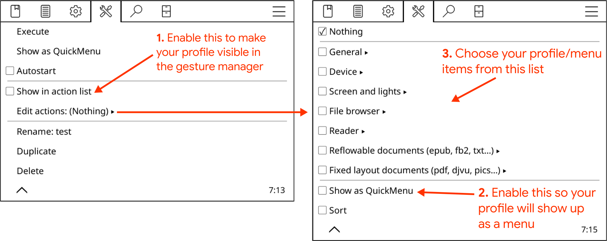
2. Agora precisamos unha forma de acceder ao noso menú. Vai ao Xestor de xestos e escolle un xesto da lista para asignalo ao noso menú. Digamos que queremos pulsar a esquina da pantalla para amosar o menú. Pulsa Pulsar unha esquina e despois escolle Abaixo esquerda. Agora pulsa Xeral e vai á segunda páxina. Atoparás o teu perfil como Perfil x, onde x é o nome que lle deches a este Perfil. Pulsa a súa caixa de verificación para asignar o perfil a este xesto.
Despois de todos os pasos, deberías ver o teu menú ao pulsar a esquina inferior esquerda. Podes editar o menú indo á páxina do seu Perfil, onde podes engadir ou quitar elementos. Alí tamén hai un elemento Ordenar para cambiar a orde dos elementos do menú.
Como dixemos, un Menú rápido é en realidade un Perfil. Isto significa que podes ter máis dun menú. Se queres, podes crear outro Perfil e seguir os mesmos pasos para crear outro menú.
Normalmente, despois de seleccionar un elemento do menú rápido, o menú desaparece da pantalla. Ás veces pode que queiras manter o menú aberto despois de seleccionar un elemento. Isto permíteche axustar opcións como nestes exemplos:
- Cambios progresivos, como subir/baixar o brillo, aumentar/reducir o tamaño da fonte, páxinas ou capítulos anteriores/seguintes, etc.
- Grupos de opcións que activas unha tras outra (pero non á vez), como acender a wifi e despois iniciar o servidor SSH
Podes activar esta opción no seguinte menú se tes un menú rápido baseado no Xestor de xestos (método doado):
/ Pulsacións e xestos / Xestor de xestos / "O xesto do teu menú rápido" / Manter aberto o Menú rápidoOu neste menú, se tes un menú rápido baseado en perfís (método avanzado):
/ Perfís / "O perfil do teu menú rápido" / Editar accións / Manter aberto o Menú rápidoNormalmente, o menú rápido ábrese centrado no medio da pantalla. Se usas o lector electrónico cunha soa man, podes activar unha opción que abrirá o menú na posición do xesto. Así, o menú estará máis preto do teu dedo e será máis doado acceder a el. Para usar esta función, activa esta opción:
/ Pulsacións e xestos / Xestor de xestos / "O xesto do teu menú rápido" / Ancorar o menú rápido á posición do xestoAdemais de engadir accións ao teu menú rápido, tamén podes engadir os teus perfís como elementos do menú. Así, podes executar moitas accións á vez cun só elemento do menú.
Supoñemos que tes un menú rápido que funciona e un perfil que queres engadir a este menú. Con isto listo, segue estas instrucións:
- Vai aos Axustes do perfil que queres usar como "elemento do menú" e activa Amosar na lista de accións. Isto fará que o perfil sexa visible no Xestor de xestos.
- Agora podes engadir este perfil ao teu menú rápido como unha acción normal dende o Xestor de xestos. Atoparás este perfil na última páxina do submenú Xeral do Xestor de xestos.
Despois de engadir o perfil como elemento do menú, podes abrir o menú rápido e pulsar este elemento para executar todas as accións do perfil. Tamén podes engadir un perfil como submenú, o que che permite ter un menú aniñado. Este método explícase no seguinte apartado.
Tamén podes engadir un menú rápido como elemento doutro menú rápido. Isto darache unha estrutura de menús aniñados. É útil cando tes moitos menús rápidos pero non queres asignar un xesto distinto a cada un.
- Vai aos Axustes do perfil que queres usar como "menú fillo" e activa Amosar na lista de accións. Isto fará que o perfil sexa visible no Xestor de xestos.
- Despois entra no menú Editar accións nos mesmos Axustes do perfil do menú fillo. Agora activa a opción Amosar como Menú rápido, que está na segunda páxina. Isto indicaralle a KOReader que trate este perfil como outro menú no que podes entrar, en vez de executar todas as súas accións ao pulsalo.
- Agora podes engadir este perfil ao teu menú rápido pai, como as outras accións do Xestor de xestos. Atoparás o perfil do menú fillo na pestana Xeral, na última páxina.
Un perfil é basicamente unha colección de accións que se poden activar cun só xesto (como unha macro).
Como exemplo, imaxina que, ao ler certo tipo de libros, sempre:
- Xiras a pantalla á orientación horizontal
- Aumentas o tamaño da fonte e o contraste e
- Acendes a luz da pantalla
Co plugin de perfís, podes facer todo isto á vez cunha soa acción.
Para crear un perfil, primeiro asegúrate de que o plugin Perfís está activado. Se non o ves en:
/ Perfísentón tes que activalo en:
/ Máis ferramentas / Xestionar pluginsNo menú Perfís, pulsa Novo e dálle un nome descritivo ao perfil. Agora deberías ver o novo perfil no menú. Púlsao e verás a pantalla da esquerda. Dende este menú tamén podes Eliminar, Renomear ou Duplicar un perfil.

Cando pulsas o elemento de menú Editar accións, verás o menú da dereita. É o mesmo menú ca o de selección de xestos e ten accións en moitas categorías. Isto significa que podes realizar calquera acción de Xesto usando un Perfil.
Agora podes seleccionar varios elementos de todas estas categorías. As accións que selecciones aquí realizaranse cando actives este perfil.
Hai moitas formas de activar un perfil:
- Coa acción Executar do seu menú.
- Usando un xesto. Para iso, tes que activar Amosar na lista de accións no menú do perfil. Agora podes seleccionalo en:
MENÚ SUPERIOR / / Pulsacións e xestos / Xestor de xestos / "CALQUERA XESTO" / Xeral / Perfil "NOME DO TEU PERFIL"
- Dende o teu Menú rápido.
- Tamén podes activar un perfil automaticamente segundo certas condicións. Consulta o seguinte apartado para aprender a usar esta potente función.
Podes executar un perfil manualmente, como se explicou arriba, pero o verdadeiro potencial dos perfís está na súa función de execución automática. Con esta función, podes activar un perfil segundo certas condicións e subcondicións:
| Activador | Subcondicións |
| Só dentro do intervalo
Esta opción non é un activador, senón un limitador. Podes usala para definir un intervalo de tempo para a execución do perfil. Por exemplo: "aumenta a fonte cando abra un libro dunha certa colección, pero só se é pola noite". |
- |
| Ao iniciar KOReader Executar este perfil cada vez que se inicie KOReader. Ten en conta que isto só é posible cando KOReader se inicia co Explorador de ficheiros ou co Último ficheiro. | - |
| Ao espertar
Executar este perfil cada vez que o dispositivo esperte | - |
| Ao saír da pantalla de repouso
Executar este perfil cada vez que o dispositivo saia da pantalla de repouso | - |
| Ao rotar
Executar este perfil cando a pantalla xire á rotación ou rotacións seleccionadas. Exemplos: cambiar a unha disposición de dúas columnas cando o dispositivo xire a horizontal. Activar o modo nocturno cando o dispositivo se poña do revés. |
|
| Ao amosar un cartafol
Executar este perfil cando entres neste cartafol no explorador de ficheiros. Podes usar este activador para cambiar o modo de presentación do explorador de ficheiros. Por exemplo, cando entras nun certo cartafol, podes cambiar o modo de presentación de mosaico a vista detallada. |
|
| Ao abrir o libro
Este activador execútase cando abres un libro, combinado (opcionalmente) con subcondicións específicas. As 4 primeiras subcondicións combínanse con OU, polo que calquera delas basta para activar a execución do perfil. |
|
| Ao pechar o libro
Esta opción é igual á anterior, pero actívase cando pechas un libro. Podes usala, por exemplo, para activar/desactivar as estatísticas de lectura cando abres certos documentos, para excluílos das túas estatísticas. |
|
| Ao expirar o temporizador de lectura
Executar este perfil cada vez que remate o temporizador de lectura | - |
| Ao activar o modo nocturno automático
Executar este perfil cada vez que se active ou desactive o modo nocturno (cores da pantalla invertidas) ou se cambie a calidez da pantalla |
Este activador activarase en cada cambio de calidez. Podes limitalo activando a opción Só dentro do intervalo. |
Exemplos de execución automática de perfís:
Velaquí algúns exemplos de perfís dos nosos desenvolvedores para darche ideas sobre como usar esta potente función de KOReader. Os exemplos tamén inclúen condicións de execución automática e funcións de coleccións:
- Activar o modo de dúas columnas cando xiras o dispositivo á orientación horizontal.
- Activar o modo nocturno cando pos o dispositivo do revés.
- Engade todo o teu manga a unha colección. Despois crea un perfil que cambie a dirección de paso de páxina a dereita a esquerda e inverta as pulsacións e deslizamentos de paso de páxina cando abras un libro de manga desta colección.
- Engade os teus cómics a unha colección que poida activar un perfil para reducir o intervalo de refresco da pantalla a cada páxina e evitar as pantasmas.
- Activar un perfil que axuste o tipo de letra e o tamaño da fonte e active o modo de dúas columnas ao abrir un ficheiro por primeira vez dende o cartafol Periodicals.
- Engade os teus PDF problemáticos a unha colección, de modo que, ao abrilos, un perfil active o OCR automático ou o modo de redistribución.
- Cambiar o modo de presentación (portadas, lista detallada, etc.) do explorador de ficheiros cando entras en certos cartafoles.
- Desactivar as estatísticas de lectura ao abrir un libro dunha colección Libros de consulta. Volver activalas ao pechar o libro.
- Se expós os axustes de estilo no xestor de xestos, podes crear un perfil para activalos ou desactivalos segundo certas condicións. Por exemplo, podes activar un perfil "desactivar os estilos do editor E aplicar os meus axustes de estilo" segundo a localización/colección do libro ou unha palabra clave nos seus metadatos. Consulta a sección Axustes de estilo da guía para máis información.
Normalmente, cando executas un perfil, execútanse todas as accións do perfil na orde que escolliches no menú Organizar as accións.
Pero tamén tes a opción de executalas unha a unha. Isto significa que cada vez que invoques este perfil, executarase só unha das accións (a seguinte) en vez de todas.
Velaquí un exemplo útil:
- Crea un perfil con estas accións
- Ir á páxina fixada
- Volver á posición anterior
- Asígnao a un xesto doado, como pulsar a esquina inferior dereita
- Activa a opción Executar un a un no menú Editar accións do perfil
Agora, cada vez que pulses a esquina dereita, cambiarás entre a túa páxina fixada e a túa posición de lectura. Isto pode ser útil, por exemplo, para saltar rapidamente á sección de referencias e volver.
Os perfís execútanse automaticamente cun pequeno atraso para non interferir con outras operacións/eventos de KOReader. Pero nalgúns casos, como ao pechar un documento, o perfil ten que executarse de inmediato para poder realizar as súas accións.
Podes activar esta opción de execución inmediata en:
/ Perfís / "Nome do teu perfil" / Execución automática / Executar de inmediatoCando activas esta opción, por exemplo nun perfil co activador ao pechar o libro, o perfil executarase antes de que se peche o documento. Esta orde de execución é necesaria para que funcione ben neste caso.
Sempre que actives a Execución automática dun perfil, recomendámosche activar tamén esta opción Executar de inmediato. Se observas que o perfil non funciona correctamente, podes probar a desactivala.
En KOReader temos un conxunto de accións/axustes, e este conxunto pódese crear de dúas formas:
- Como un perfil (que se explica como o método avanzado e se garda en settings/profiles.lua)
- Como unha lista de accións asignadas a un xesto (que se explica como o método doado e se garda en settings/gestures.lua)
Este conxunto tamén se pode executar de dúas formas distintas:
- Aplicando cada acción na orde (establecida) ao activalo (como un Perfil)
- Amosándoo como un Menú rápido
Engadir/quitar accións dun conxunto e activar/ordenar o Menú rápido faise dende o mesmo menú de accións. A única diferenza é que o menú de accións do Xestor de xestos ten dous elementos máis (Deixar pasar), e por iso os elementos Amosar como Menú rápido e Ordenar están na segunda páxina.
Os plugins son pequenos programas de KOReader, semellantes aos complementos dos navegadores, que amplían as capacidades do programa base. KOReader ten 3 categorías de plugins:
Os plugins internos forman parte do programa principal.
- Pódese acceder a eles directamente dende o menú de plugins de KOReader.
- Non precisan instalación. Podes activalos dende o menú.
- Revísaos o equipo de desenvolvemento, polo que se consideran seguros.
- Actualízanse automaticamente cando actualizas KOReader.
Podes activalos/desactivalos en:
/ Máis ferramentas / Xestionar pluginsEste grupo contén plugins non oficiais que non forman parte da lóxica principal de KOReader.
- Teñen que instalarse manualmente e despois activarse dende o menú de plugins.
- Deben actualizarse manualmente.
- Revísaos o equipo de desenvolvemento no momento en que se engadiron ao noso repositorio, polo que se consideran seguros.
Podes acceder a eles dende esta páxina. Xeralmente instálanse descargando o cartafol do plugin dende a páxina anterior e copiándoo no cartafol koreader/plugins do dispositivo. Pero consulta a páxina do plugin por se hai outras instrucións.
Son plugins desenvolvidos de forma independente do equipo de KOReader.
- Teñen que instalarse manualmente e despois activarse dende o menú de plugins.
- Deben actualizarse manualmente.
- NON os revisa o equipo de desenvolvemento, así que ten en conta que usalos pode ter riscos.
Algúns exemplos destacados destes plugins externos, con ligazóns ás súas páxinas de GitHub:
-
Plugins de IA que che permiten usar modelos na nube ou locais para interactuar co texto que estás a ler:
- Plugin KOAssistant: un plugin de IA moi potente e personalizable. Podes traducir/explicar texto, comparar libros/artigos, etc., creando accións personalizadas con contextos e instrucións adicionais. Admite modelos locais executados no teu ordenador grazas á compatibilidade con Ollama. Na páxina de GitHub do plugin ligada hai instrucións moi detalladas.
- Plugin Assistant: AI Helper: podes usar este plugin para simplificar, explicar, comentar ou traducir texto a outras linguas. Admite varios provedores de IA e indicacións integradas/personalizadas.
- Plugin de Anki: plugin de KOReader que permite xerar tarxetas de Anki (un programa de tarxetas de memoria de código aberto) para as palabras buscadas no dicionario interno.
- Plugin de Zotero: este plugin permíteche explorar dende KOReader as túas coleccións de Zotero (un programa de xestión de referencias de código aberto).
- Plugin de Syncthing: este plugin permíteche executar en KOReader o programa de sincronización de ficheiros entre pares Syncthing (só probado en dispositivos Kobo, pero segundo o autor pode funcionar noutros dispositivos). Isto permite sincronizar ficheiros automaticamente entre o lector electrónico e o ordenador/teléfono.
Temos que repetir que estes plugins externos non forman parte do proxecto KOReader. Así que ten coidado ao instalalos e usalos.
Podes atopar máis plugins en GitHub con estas ligazóns:
- Esta ligazón abre os resultados dunha busca de proxectos de plugins de KOReader.
- Esta páxina amosa unha lista de repositorios coa etiqueta koreaderplugin.
Coa programación con IA, o número de proxectos de plugins de KOReader aumentou moito, polo que agora é bastante máis difícil decidir que plugin usar. Estas listas seleccionadas de recursos de KOReader son útiles para atopar plugins interesantes:
- Repositorio Awesome KOReader
- Outro repositorio Awesome KOReader
Luz frontal automática - Acende ou apaga a luz frontal automaticamente segundo o nivel de luz ambiental (só dispoñible en Kindle Voyage e Oasis)
Calidez e modo nocturno automáticos - Permíteche axustar a calidez da luz frontal nos dispositivos con luz natural (amarela/laranxa) e activar o modo nocturno automaticamente segundo un horario
Aforro de enerxía automático - Pon o dispositivo en espera, suspensión ou apágao despois dos períodos de inactividade indicados
Suspensión automática - Suspende o dispositivo despois do período de inactividade escollido (dispoñible en todos os dispositivos de tinta electrónica excepto Android)
Paso automático - Pasa a páxina automaticamente despois dun período de tempo establecido
Estatísticas da batería - Recompila e amosa as estatísticas de uso da batería do dispositivo (só dispoñible nalgúns dispositivos)
Atallos a libros - Permite engadir un atallo a un libro a un xesto
Calibre - Podes enviar documentos da túa biblioteca de Calibre directamente aos teus dispositivos con KOReader a través dunha conexión wifi. Consulta a nosa páxina da wiki para saber como.
Explorador de portadas - Permite modos de presentación con portadas para o explorador de ficheiros e o historial
Imaxe de portada - Garda a portada do libro actual como ficheiro (dispoñible en dispositivos Android/PocketBook/reMarkable)
Exportar os textos destacados - Exporta os textos destacados e as notas a ficheiros locais ou servizos en liña
Xestos - Ofrece compatibilidade con xestos en KOReader
HTTP Inspector - Permíteche controlar o dispositivo dende outro dispositivo a través da wifi - Consulta máis información abaixo
Compatibilidade co xaponés - Compatibilidade coa lingua xaponesa en KOReader que amplía o dicionario integrado e o sistema de selección
Manter activo - Mantén o dispositivo esperto para evitar desconexións automáticas da wifi
Mover ao arquivo - Move o documento actual ao cartafol de arquivo
Descargador de novas - Obtén entradas de novas RSS e Atom e gárdaas como ficheiros HTML. Consulta a nosa páxina da wiki para saber como. (só dispoñible nalgúns dispositivos)
OPDS - Permíteche descargar libros de catálogos en liña
Extensor de percepción - Axuda a usar a visión periférica para ler máis rápido. Explícase nesta sección da guía: Plugins para ler máis rápido
Perfís - Permite combinar varios axustes para crear perfís intercambiables
Sincronización do progreso - Sincroniza o teu progreso de lectura entre distintos dispositivos con KOReader. Consulta a nosa páxina da wiki para saber como.
QR a partir do portapapeis - Xera un código QR a partir do contido do portapapeis
Temporizador de lectura - Un temporizador de conta atrás que amosa unha mensaxe despois do tempo que definas
Estatísticas de lectura - Calcula estatísticas das sesións de lectura e a velocidade de lectura para estimar o tempo que falta para rematar o capítulo/libro
SSH - Permite acceder ao dispositivo mediante o protocolo SSH. Podes acceder con aplicacións de FTP ou mesmo co teu xestor de ficheiros, se o admite. Consulta a nosa páxina da wiki para saber como.
Estatísticas do sistema - Con este plugin podes ver a información de CPU/RAM/BATERÍA en:
/ Axuda / Estatísticas do sistemaEmulador de terminal - Inicia unha shell (liña de ordes) no dispositivo que pode executar aplicacións de terminal completas
Editor de texto - Un editor de texto básico para crear e editar ficheiros de texto simple
Sincronización de hora - Sincroniza a hora do dispositivo con servidores NTP
Modificar axustes do documento - Permite modificar os axustes dun documento antes de cargalo segundo factores externos (só dispoñible nalgúns dispositivos)
Wallabag - Descarga os artigos máis recentes dun servidor de Wallabag como ficheiros EPUB individuais. Consulta a nosa páxina da wiki para máis información.
Este plugin permíteche controlar o dispositivo dende outro dispositivo a través da wifi. Funciona executando no dispositivo un servidor HTTP sinxelo que serve unha páxina cos controis de KOReader. Podes acceder a esta páxina a través da túa rede e controlar o lector. Podes ler un exemplo de uso deste plugin no foro de MobileRead.
Pero ten en conta estes puntos ao usar este plugin:
- É un plugin experimental, así que úsao baixo a túa responsabilidade
- Este plugin está activado por defecto, pero o servidor NON se inicia por defecto. Podes inicialo manualmente ou configuralo para que se inicie automaticamente.
- Só deberías executar este plugin en redes de confianza, xa que é moi inseguro (sen HTTPS, sen restrición de acceso, sen autenticación)
Para ver o que podes controlar remotamente co plugin HTTP Inspector:
- Inicia o servidor HTTP Inspector no dispositivo:
MENÚ SUPERIOR / / Máis ferramentas / KOReader HTTP Inspector / Iniciar o servidor HTTP
- Abre esta páxina http://IP-do-teu-lector:8080/koreader/event nun dispositivo conectado á mesma rede ca o teu lector electrónico
A lista encherase segundo os plugins e os parches de usuario instalados.
É unha aplicación de Android que che permite controlar KOReader dende un dispositivo Android na mesma rede. Usa o plugin KOReader HTTP Inspector para comunicarse con KOReader. Podes realizar remotamente moitas accións, como pasar páxinas, introducir texto, axustar a luz da pantalla ou activar perfís.
Podes ver as instrucións e descargar a aplicación na páxina do seu proxecto: KOReader Companion App
Os parches de usuario son pequenos ficheiros escritos en linguaxe Lua. Poden cambiar o funcionamento de KOReader sen modificar a túa instalación de forma permanente. Poden escribilos o equipo de desenvolvemento, outras persoas ou ti (se tes os amplos coñecementos necesarios sobre o funcionamento interno de KOReader).
Podes atopar unha lista actualizada de Parches de usuario na nosa wiki e na lista de incidencias de GitHub marcadas coa etiqueta User patch available. Podes velas seguindo esta ligazón.
- Crea un cartafol chamado patches dentro do cartafol koreader do dispositivo (en Android este cartafol está na tarxeta SD)
- Descarga o ficheiro do parche coa extensión .lua e ponlo neste cartafol patches
- Reiniciar KOReader
Cando creas un cartafol de parches como se indicou, despois de reiniciar KOReader aparece no menú de plugins un novo plugin chamado Xestión de parches. Con este plugin podes ver a lista e o estado dos teus parches de usuario e activalos/desactivalos. Podes pulsar o elemento de menú Acerca do xestor de parches para ver máis información.
A orde de execución dun parche determínaa a primeira cifra do número do nome do parche. Por exemplo: 2-TOC-title-patch.lua. Se hai varios parches que comezan pola mesma cifra, a orde de execución é a orde natural (1<10<11<12<13<…<109<…<10010). Se só descargas un parche xa feito, non tes que cambiar o nome do ficheiro.
Nomes que comezan por:
- 0 - Execútase moi cedo e só unha vez despois dunha actualización
- 1 - Execútase moi cedo en cada inicio de KOReader (pero despois do 0, se procede)
- 2 - Execútase cando UIManager está listo, en cada inicio de KOReader
- 3-7 - Reservados
- 8 - Execútase antes de saír e antes de que se garden os axustes
- 9 - Execútase xusto antes de saír
Se tes un problema cun parche de usuario, podes volver á configuración anterior eliminando o ficheiro do parche.
Nesta sección explicaremos primeiro dous plugins de KOReader que poden mellorar a túa velocidade de lectura. Despois enumeraremos algunhas fontes que poden mellorar a velocidade de lectura e a comprensión.
Cando o activas, este plugin engade dúas liñas verticais á área de lectura, preto dos bordos esquerdo e dereito, como podes ver na imaxe de abaixo. Estas liñas serven como marcas de inicio/fin para os teus ollos ao ler unha liña do libro. O principio de funcionamento deste plugin baséase en que non tes que mirar directamente as primeiras e últimas palabras dunha liña, porque con algo de práctica podes percibilas coa visión periférica.

- Liñas verticais grises: indicadores do extensor de percepción
- Liña vermella: os teus ollos seguindo o texto normalmente
- Liña azul: os teus ollos saltando entre os indicadores (distancia máis curta)
Para usar este plugin, primeiro tes que activalo en:
/ Máis ferramentas / Xestionar plugins / Extensor de percepciónDespois de activar o plugin, terás un novo elemento de menú aquí:
/ Módulo lectura rápida - perception expanderDende este menú podes activar/desactivar as liñas do extensor e tamén configurar os indicadores ao teu gusto e segundo o teu nivel de visión periférica. Podes ver aquí o vídeo de Tim Ferriss que inspirou este plugin.
Este plugin é un lector RSVP (Rapid Serial Visual Presentation). Esta técnica baséase en amosar rapidamente a palabra ou palabras no centro da pantalla. Ao ler así, os ollos non teñen que moverse, polo que a velocidade de lectura pode ser maior. E se melloras a técnica, podes percibir máis dunha palabra á vez, o que aumenta aínda máis a velocidade de lectura.
Para usar este plugin, primeiro tes que activalo en:
/ Máis ferramentas / Xestionar plugins / FastReaderDespois de activar o plugin, terás un novo elemento de menú aquí:
/ Máis ferramentas / FastReaderPodes iniciar o plugin dende este menú e tamén configurar opcións como:
- Velocidade RSVP - Velocidade de visualización en PPM (palabras por minuto)
- Palabras de vista previa - Cantas palabras se amosan á vez
Podes empezar a usar o plugin no modo de unha soa palabra e poucas PPM (máis lento), e ir aumentándoas a medida que melloras.
Nesta sección amosarémosche algunhas fontes que poden mellorar a túa experiencia de lectura. Estas fontes non son unha función exclusiva de KOReader, pero incluímolas aquí porque ás veces as persoas usuarias preguntan por elas nas nosas incidencias e debates.
Podes instalar estas fontes como calquera outra fonte. Se non sabes como engadir fontes ao teu dispositivo, explicámolo na sección Usar as túas propias fontes.
Resumo das fontes desta sección (ten en conta que todas as fontes desta imaxe teñen o mesmo tamaño, 11 pt, pero larguras, alturas de liña e lexibilidade moi distintas):

Atkinson Hyperlegible
Deseñada polo Braille Institute, esta familia tipográfica pretende mellorar a lexibilidade para as persoas con baixa visión. Ten letras e números claros e moi distintivos. Podes ver a fonte e descargala aquí
B612
B612 é unha familia tipográfica moi lexible, deseñada para usarse nas pantallas das cabinas dos avións de Airbus. O seu deseño lexible faina especialmente axeitada para contextos degradados e pretende reducir a fatiga visual e a carga cognitiva. Estes principios de deseño fan que tamén sexa unha fonte axeitada para os lectores electrónicos. Podes ver a fonte e descargala en Google Fonts
Lexend
O deseño desta fonte baséase en principios derivados de estudos educativos que pretenden mellorar o rendemento lector do alumnado. Podes ler sobre a fonte aquí e descargala en Google Fonts
Luciole
Esta fonte cumpre unha ducia de criterios de deseño específicos para ofrecer a mellor experiencia de lectura posible ás persoas con discapacidade visual. Pon énfase no espazo "interior" das letras e ten números e símbolos matemáticos extremadamente claros e distintos. Podes ver a fonte e descargala aquí
Open Dyslexic
Esta fonte está deseñada para mellorar a lexibilidade para as persoas lectoras con dislexia. As letras teñen a parte inferior máis grosa para salientar a dirección. As formas únicas de cada letra poden evitar confusións por inversións e trocos. Podes descargala aquí
Shantell Sans
Esta fonte deseñouna unha persoa autora con dislexia como un tipo de letra lexible, accesible e doado de ler. Tamén funciona ben para texto pequeno grazas ás súas letras máis anchas e ao seu espazado folgado. Podes descargala en Google Fonts
Fast Font
É unha fonte especial que substitúe as primeiras letras de cada palabra pola súa variante en negra (o número de letras calcúlase segundo a lonxitude da palabra). Estas letras en negra actúan entón como puntos de fixación artificiais para que o ollo salte sobre eles, como podes ver nesta frase. En teoría, isto podería aumentar a velocidade de lectura, pero, por suposto, os resultados persoais poden variar. Curiosamente, as persoas lectoras con TDAH adoitan informar de beneficios.
Esta fonte depende de funcións especiais de OpenType que KOReader admite. Así que só tes que descargar a fonte, copiala ao dispositivo e usala como calquera outra fonte. Podes ver os exemplos e descargar esta fonte e as súas variantes (serif, monoespazada e de puntos) dende o seu repositorio de GitHub
- Cambiar rapidamente entre documentos
- Número de liñas/palabras nunha páxina
- Cambiar a portada dun libro
- Crear un fondo para a pantalla de repouso a partir de documentos
- Evitar abrir ligazóns por accidente
- Estatísticas de lectura despois da medianoite
- Ler libros con formato vertical
Se precisas cambiar entre dous documentos (por exemplo, para comparalos), hai unha forma máis rápida que pasar polo Explorador de ficheiros. KOReader pode abrir o último documento cun xesto (deslizamento múltiple ). Se defines como acción dun xesto Abrir o documento anterior, podes cambiar rapidamente entre dous documentos, de forma semellante á función Alt+Tab dos ordenadores. Podes atopar esta función en:
/ Pulsacións e xestos / Xestor de xestos / "CALQUERA XESTO" / Xeral / Abrir o documento anteriorTamén podes usar o diálogo Historial para cambiar rapidamente entre documentos. A pantalla do historial pódese abrir co xesto de deslizamento múltiple . Por suposto, tamén podes definir calquera outro xesto para isto.
Se queres saber cantas liñas ou palabras se amosan na páxina actual, podes velo en:
/ Información do libroPodes cambiar a portada do libro neste menú:
/ Información do libro / (pulsación longa) Imaxe de portada: / PersonalizarAlgúns libros non traen unha portada axeitada. Ou poden ter a portada na segunda páxina, polo que non se amosa correctamente. Ou quizais a portada non é axeitada para a tinta electrónica (demasiado clara ou escura). Ou prefires poñer como portada algunha imaxe do libro.
En situacións coma estas, podes facer rapidamente unha captura de pantalla e poñela como portada do libro actual. Hai dous xestos de captura de pantalla, segundo onde esteas:
- O xesto de captura de pantalla por defecto, deslizamento diagonal longo, se estás no modo de lectura ou no explorador de ficheiros
- O xesto de captura de pantalla alternativo, pulsación con dous dedos en esquinas diagonalmente opostas, se estás no visor de imaxes
No visor de imaxes, podes ampliar e desprazar a imaxe antes de facer a captura, de modo que se recorte ao tamaño e á proporción exactos do dispositivo sen deformarse.
Despois de facer a captura, podes seleccionar Establecer como portada do libro no diálogo.
Podes quitar a portada personalizada do libro neste menú:
/ Información do libroNa páxina de información do libro, fai unha pulsación longa sobre o elemento Imaxe de portada e despois selecciona Restablecer o orixinal.
Tamén podes restablecer a portada do libro co diálogo Restablecer, ao que podes acceder facendo unha pulsación longa sobre o nome do ficheiro no Explorador de ficheiros.
Se o teu documento ten ligazóns e as pulsas por accidente ao pasar a páxina ou usar outros xestos, podes desactivar Pulsar para abrir ligazóns neste elemento de menú:
/ Pulsacións e xestos / Ligazóns / Pulsar para abrir ligazónsDespois de desactivar este axuste, para seguir unha ligazón tes que facer unha pulsación longa sobre ela e seleccionar Seguir ligazón no menú emerxente. Se tes o problema contrario e queres que sexa máis doado pulsar as ligazóns, podes activar Aumentar a área sensible das ligazóns no mesmo menú.
Nas estatísticas de lectura podes cambiar o comezo do día usado nos cálculos. Isto é útil, por exemplo, se les despois da medianoite e queres que a sesión de lectura conte como de hoxe en vez do día seguinte. Isto só se aplica á vista da liña de tempo do día e, opcionalmente, á vista de calendario; non se aplica a ningún dos outros informes de estatísticas. Podes configurar esta hora en:
/ Estatísticas de lectura / Axustes / A liña temporal diaria comeza ás...Actualmente, a versión oficial de KOReader non admite renderizar libros con formato de texto vertical (tategaki - 縦書き), pero unha persoa usuaria creou unha bifurcación (fork) que pode facelo. É basicamente unha copia de KOReader coa renderización de texto vertical engadida.
A escritura vertical xaponesa é o obxectivo principal deste fork. Pero, como a implementación admite EPUB writing-mode: vertical-rl no nivel do motor de renderizado, tamén pode funcionar con outras linguas de escritura vertical. Segundo os comentarios de usuarios chineses, polo menos tamén pode renderizar chinés.
Ten en conta que é un fork (non un plugin nin un parche de usuario), polo que substitúe completamente o teu KOReader. Pero os libros horizontais normais compórtanse case igual ca no KOReader oficial, así que esta substitución debería ser funcionalmente equivalente.
Podes cambiar a este fork sen desinstalar antes o teu KOReader actual. Só tes que seguir as instrucións do repositorio do fork. O debate sobre o desenvolvemento no noso repositorio está aquí.
Se cambias a este fork, usa o repositorio do fork para as preguntas/incidencias relacionadas co texto vertical, en vez do repositorio oficial de KOReader.
- Actualizar KOReader
- Engadir un bloqueo con contrasinal
- Controlar KOReader dende outro dispositivo
- Atenuación automática da pantalla
- Optimizar a saúde da batería
- Consultar os detalles do consumo da batería
- Consultar as estatísticas detalladas do dispositivo
- Vixiar o uso da memoria
KOReader pode actualizarse a si mesmo a través da wifi. Podes iniciar a comprobación neste elemento de menú:
/ Actualizar / Buscar actualizaciónsEn KOReader non temos unha opción directa para isto. Pero hai unha solución alternativa para conseguir este tipo de pantalla de bloqueo. Podes configurar KOReader para que manteña a pantalla de repouso ata que fagas un xesto escollido. Para iso:
- Escolle calquera xesto (incluídos os complexos con deslizamentos múltiples personalizados) e convérteo no teu xesto de "desbloqueo" en:
MENÚ SUPERIOR / / Pulsacións e xestos / Xestor de xestos / "CALQUERA XESTO" / Dispositivo / Saír da pantalla de repouso
- E despois activa esta opción:
MENÚ SUPERIOR / / Pantalla / Pantalla de repouso / Pospor a actualización da pantalla tras espertar / Ata o xesto 'Saír da pantalla de repouso'
Cunha aplicación de Android de código aberto, podes controlar KOReader dende un dispositivo Android que estea na mesma rede. Usa o plugin KOReader HTTP Inspector para comunicarse con KOReader. Podes realizar remotamente moitas accións, como pasar páxinas, introducir texto, axustar a luz da pantalla ou activar perfís.
Podes ver as instrucións e descargar a aplicación na páxina do seu proxecto: KOReader Page Turner Companion
KOReader pode atenuar a luz frontal para aforrar batería se o dispositivo leva un tempo inactivo. Podes activar e axustar esta función en:
/ Pantalla / Atenuación automáticaAs baterías de ion-litio degrádanse máis nos extremos dos seus niveis de carga. Para minimizar esta degradación e prolongar a vida da batería, podes limitar o nivel mínimo de descarga ao 20% e o nivel máximo de carga ao 80% (como nos vehículos eléctricos e nalgúns teléfonos máis novos). Isto significa que empezas a cargar o dispositivo cando a batería baixa ao 20% e o desconectas cando chega ao 80% (ou 30%-70% se queres ser moi prudente).
KOReader pode avisarte cunha alerta cando o nivel de carga chega aos límites que definiches:
/ Dispositivo / Alertas de estado do dispositivo / Nivel de bateríaPodes ver as estatísticas detalladas de uso da batería neste elemento de menú:
/ Máis ferramentas / Estatísticas da bateríaPodes ver a información do sistema, como o uso de CPU/ESPAZO EN DISCO/RAM, neste elemento de menú:
/ Axuda / Estatísticas do sistemaNos dispositivos Kindle máis antigos, algunhas persoas usuarias informaron de peches inesperados por falta de memoria. O uso de memoria de KOReader pode aumentar se abres moitos ficheiros nunha sesión, sobre todo os PDF. Podes engadir un indicador de memoria á túa BARRA DE ESTADO e reiniciar KOReader se este valor sobe moito, para evitar peches ou reinicios.
/ Barra de estado / Elementos da barra de estado / Uso de memoria de KOReaderTamén podes configurar KOReader para que se reinicie automaticamente se o uso de memoria chega a un límite en:
/ Dispositivo / Alertas de estado do dispositivoSe non atopas nesta guía unha solución ao teu problema, podes abrir unha incidencia na páxina de GitHub do proxecto ou publicar unha mensaxe na sección de KOReader do foro Mobileread. Consulta a sección CONTACTO desta guía para máis detalles.
- Problemas de consumo de batería
- O meu libro vai lento
- Pantasmas ao pasar as páxinas
- Pantasmas na pantalla de repouso
- Problemas coa sincronización do progreso
- Problemas de suspensión coa funda
- As pulsacións recoñécense como pulsacións longas ou dobres pulsacións
- KOReader non pode escribir na tarxeta SD
- Facer unha copia de seguranza dos axustes de KOReader
- Restablecer KOReader en dispositivos Android
- Desactivar os anuncios nos dispositivos Amazon Kindle
- Números pequenos no lateral ao ler
- Desapareceu a miña barra de estado
- Problemas coa sangría do texto
- Borrar a base de datos da caché de portadas
- Borrar a caché de ficheiros
- Que é unha versión Nightly?
KOReader usa a batería de forma moi eficiente. Así que, se a batería do teu lector electrónico empezou a descargarse de forma anormal ao usar KOReader, xeralmente o primeiro sospeitoso é o desgaste da batería.
Pero, se estás seguro de que a batería está en bo estado e a descarga só ocorre en KOReader, a causa pode ser:
- Unha actualización de firmware problemática
- Un plugin de terceiros
- Un parche de usuario
Estes son os pasos que debes seguir se tes un problema de consumo:
- Actualiza o dispositivo á última versión do firmware. Se non hai actualizacións de firmware para o teu dispositivo, pasa ao seguinte paso.
- Se actualizar o firmware non soluciona o problema de consumo, elimina todos os plugins de terceiros e parches de usuario que instalaches e reinicia KOReader.
- Se o problema de consumo continúa despois dos dous primeiros pasos, a última opción é restablecer o dispositivo aos valores de fábrica e reinstalar KOReader (non esquezas facer unha copia de seguranza do cartafol principal da biblioteca).
Se o problema continúa, podes abrir unha incidencia na nosa páxina de GitHub.
Consulta a sección Optimizar documentos da guía para obter consellos e solucións se un ficheiro concreto vai lento.
Se todos os teus libros van lentos, o problema pode estar relacionado co dispositivo:
- CPU moi lenta ou pouca RAM.
- A memoria flash (onde están os teus libros) pode estar a degradarse, xeralmente pola idade do dispositivo.
- Pode que esteas quedando sen espazo de almacenamento.
- Se usas un dispositivo baseado en Android, o sistema operativo Android pode estar a interferir no funcionamento de KOReader ou algúns procesos en segundo plano poden estar a usar os recursos do sistema.
Abrir unha incidencia:
Se abres unha incidencia sobre este problema, é importante que poidamos examinar o ficheiro problemático. Podes compartir o ficheiro directamente arrastrándoo e soltándoo na túa mensaxe de GitHub despois de comprimilo nun ficheiro ZIP. Se o teu libro é un EPUB e non queres compartir o ficheiro por motivos de dereitos de autor ou privacidade, hai un plugin para Calibre chamado ScrambleEbook; podes acceder á descarga e ás instrucións dende esta páxina do foro Mobileread.
Este plugin le un ficheiro de libro electrónico sen DRM (EPUB/KEPUB/AZW3) e crea unha copia do libro co texto substituído por caracteres aleatorios. Podes compartir connosco esta versión desordenada no fío da túa incidencia. O texto do libro non será lexible e non haberá ningunha infracción de dereitos de autor, pero aínda así poderemos usar este ficheiro para facer diagnósticos.
Podes ver aquí este procedemento nunha incidencia real cun ficheiro EPUB moi problemático.
Aínda que KOReader estea configurado para facer un refresco completo despois de cada páxina, pode que sigas vendo algunhas pantasmas/restos despois de pasar as páxinas. É unha limitación da tecnoloxía das pantallas de tinta electrónica e pódese observar nos dispositivos de última xeración, sobre todo ao ler documentos con contido mixto (texto+imaxes). Como solución alternativa, se estes artefactos che molestan, podes refrescar unha vez máis manualmente despois de pasar a páxina (por defecto, co xesto de deslizamento diagonal curto).
Nalgúns casos (segundo moitos factores, como o contido do libro, a claridade da imaxe da pantalla de repouso e o modelo do lector), podes ver algunhas pantasmas/restos na pantalla de repouso a pesar do refresco antes da suspensión. Podes eliminalas aumentando o número de refrescos aquí:
/ Pantalla / Axustes de tinta electrónica / Redebuxados antipantasmas da pantalla de repousoIsto pode deberse á función Gardar os textos destacados no PDF de KOReader, se a activaches. Gardar os textos destacados no PDF cambia o ficheiro, polo que a sincronización fallará. Se pensas usar as dúas funcións, nos axustes do plugin Sincronización do progreso, cambia o Método de comparación de documentos a Nome do ficheiro en vez da comparación Binaria por defecto:
/ Sincronización do progreso / Método de comparación de documentosAs fundas con suspensión adoitan usar un imán integrado na funda que activa os eventos de espertar e suspender ao accionar un sensor do dispositivo. Ás veces este sensor chámase sensor Hall ou sensor de efecto Hall. Nalgúns casos, por exemplo con imáns desaliñados ou débiles, este accionamento pode dar problemas. Se tes problemas porque o dispositivo esperta por culpa da funda, podes desactivar esta función neste menú:
/ Dispositivo / Ignorar todos os eventos da fundaIsto pode ocorrer en casos como tremor das mans ou problemas coa pantalla táctil do dispositivo. Se tes este problema, podes probar a aumentar o Intervalo de pulsación. Ao aumentar este intervalo, indícaslle a KOReader que ignore as pulsacións rápidas no mesmo lugar.
/ Pulsacións e xestos / Intervalos dos xestos / Intervalo de pulsaciónSe as dúas pulsacións consecutivas están separadas por certa distancia, isto non se aplica. Así que aínda podes pasar páxinas rapidamente pulsando alternativamente con dous dedos.
Nos dispositivos Android, KOReader non pode escribir no almacenamento externo debido ás restricións do sistema Android. Se queres cambiar o lugar onde se gardan as capturas de pantalla, asegúrate de escoller o almacenamento interno do dispositivo.
Nos casos pouco habituais nos que queiras facer unha copia de seguranza de KOReader con todos os teus axustes e restaurala, podes copiar estes cartafoles e ficheiros do cartafol de instalación de KOReader. Despois podes sobrescribilos tras unha instalación limpa para restaurar os axustes:
- settings
- styletweaks
- data/cr3.ini
- defaults.persistent.lua
- history.lua
- settings.reader.lua
- settings/profiles.lua
- Os ficheiros dos cartafoles data/dict/ e /data/tessdata/ (se existen)
Nos dispositivos con Android, KOReader garda os seus axustes no cartafol Internal Storage/koreader/. É un comportamento intencionado e distinto do doutras aplicacións de Android. Esta localización permíteche facer copias de seguranza e sincronizar facilmente os axustes de KOReader, xa que se gardan neste cartafol, ao que podes acceder.
Pero cando desinstalas KOReader ou borras os seus datos dende o menú de Axustes de Android, este cartafol de axustes de KOReader non se elimina. Así que, se desinstalas KOReader e despois o volves instalar, iniciarase cos teus axustes antigos.
Se queres restablecer completamente KOReader aos valores de fábrica, debes eliminar este cartafol manualmente. Cando inicies KOReader despois de eliminar este cartafol, crearase de novo automaticamente cos axustes por defecto.
Tecnicamente é posible, pero por desgraza non podemos cambiar o comportamento por defecto da pantalla de repouso nestes lectores, porque isto podería provocar unha reacción negativa de Amazon, que podería pechar o ecosistema Kindle (adeus a KOReader nos Kindle) ou mesmo poñer en perigo todo o proxecto (adeus a KOReader). Para máis información, podes consultar aquí este debate co equipo de desenvolvemento. A nosa postura está en liña coa dos foros de MobileRead, que podes ler aquí.
Eses números pequenos chámanse números de páxina do editor. En resumo, son os números de páxina reais da versión impresa do libro. Para máis información, pulsa aquí: Numeración de páxinas, para ir á sección correspondente.
Probablemente pulsaches a zona táctil da BARRA DE ESTADO na parte inferior da pantalla. Podes recuperala pulsando na mesma zona.
Se os títulos, encabezamentos ou separadores aparecen descentrados, ou ves sangrías de texto inesperadas, proba a cambiar o estilo do documento de epub.css a html5.css. Este tipo de problemas ocorre porque algúns editores supoñen que os seus libros só se lerán en lectores baseados en motores de navegador web, polo que non se molestan en "restablecer" os estilos.
/ Estilo- O HTML/EPUB (epub.css) por defecto é a nosa folla de estilo orientada a libros, con text-align: justify, text-indent on P. É mellor para os libros sen estilo e pode facer máis lexibles os libros con estilo.
- Podes probar a cambiar a HTML5 (html5.css) se o teu libro ten problemas de sangría como os mencionados arriba. Este estilo ofrece unha folla de estilo base como a que usan os navegadores web ao renderizar: text-align: left, no text-indent on P, spacing between P. Pero non queda bonito cando os editores non lle aplicaron ningún estilo.
KOReader garda unha caché das portadas dos libros para poder amosalas máis rápido. En condicións normais, esta caché non medra demasiado. Se eliminas moitos libros ou renomeas cartafoles, pode que queiras limpar a base de datos da caché de portadas para recuperar algo de espazo. Podes facelo neste menú:
/ Axustes / Axustes de mosaico e lista detallada / Xestionar a caché de información de librosCando les un documento PDF/DJVU, KOReader garda unha caché da última páxina que liches, para que o libro se abra máis rápido ao volver abrilo. Pero esta caché pode facerse grande se usas KOReader durante moito tempo e les moitos documentos PDF/DJVU. Estes ficheiros de caché gárdanse no cartafol de instalación de KOReader, no cartafol cache. Para borrar esta caché e recuperar o espazo, podes ir a:
/ Máis ferramentas / Opcións de desenvolvedor / Baleirar cachésKOReader ten dúas versións distintas:
- ESTABLE É a versión principal, que podes atopar na páxina Releases do GitHub do proxecto. Ten un nome coma este: "KOReader 2024.11", o que significa que esta versión concreta se publicou en novembro de 2024. Xeralmente publícase cada mes, pero ás veces pode tardar máis.
- NIGHTLY Son as versións de KOReader compiladas a diario, ás que se engaden continuamente optimizacións e correccións. As versións Nightly están pensadas para un grupo reducido de probadores e desenvolvedores, polo que poden ser menos estables.
Normalmente, se fas un uso normal de KOReader, a versión que deberías usar é a estable. Pero nalgúns casos concretos pode que precises usar unha versión nightly:
- O teu dispositivo é moi novo (por exemplo, un modelo de Kobo recén lanzado) e a compatibilidade con KOReader acaba de engadirse nunha nightly recente.
- Hai un erro ou problema específico do teu dispositivo que xa está corrixido pero aínda non se publicou, e non queres esperar á versión estable para ter a corrección.
- Despois de actualizar KOReader, decátaste de que se eliminou unha función que usabas. Non queres perdela, así que podes instalar unha versión nightly que aínda a teña. Por suposto, tamén podes volver á versión estable anterior, pero a nightly sería máis nova, polo que podería ter máis funcións e correccións.
Esta sección foi só unha introdución xeral ao tema. Para obter información detallada e pedir axuda sobre as versións nightly, podes visitar a páxina de debate: FAQ: How to track latest nightly builds
KOReader usa GitHub como base do proxecto. Podes informar de problemas ou facer suxestións na nosa páxina de GitHub. Só precisas unha conta de GitHub, que é gratuíta. Pulsa nesta ligazón para abrir a nosa páxina de incidencias de GitHub.
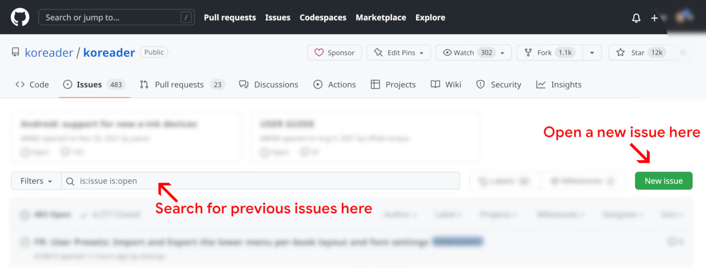
Na páxina Issues, pulsa o botón New Issue. Pero, antes de facelo, recomendámosche usar a barra de busca para ver se xa existe unha incidencia sobre o mesmo tema. Tamén podes revisar outras incidencias abertas para facerte unha idea do proceso.
Cando pulsas o botón New Issue, amósanse dúas opcións:

Pulsa na que corresponda e segue as instrucións da páxina para informar do teu problema ou suxestión.
Se informas dun erro, os rexistros de depuración detallados son moi útiles para determinar o problema. Podes activalos en:
/ Axuda / Informar dun erro / Activar o rexistro detalladoNo mesmo diálogo tamén podes atopar o número de versión do teu KOReader e o tipo de dispositivo para incluílos no informe.
Se tes unha suxestión ou pregunta relacionada con esta Guía de uso, podes escribir no fío de debate de GitHub
Atopar outras persoas usuarias de KOReader nos foros de MobileRead |
Contactar connosco no chat de Gitter |
Apoiar o proxecto a través de Liberapay |